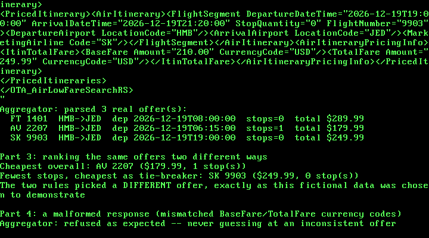

41. Flight Ticket Aggregation: A Real OTA Multi-Carrier Fare Search¶
What you will understand: the real classic GDS-era XML pair a flight aggregator's own search actually speaks underneath -- OTA_AirLowFareSearchRQ/RS, OpenTravel Alliance's own real request/response shape, cited directly from OpenTravel's own real schema files and a real official example instance document (041_ota.h/041_ota.c) -- and the real, general (not any one aggregator's proprietary) logic for ranking several airlines' own competing offers by price, or by stops with price as a tie-breaker (041_aggregator.h/041_aggregator.c).
What you need to know first: Chapter 37's own plain, unencrypted hardware-loopback transport pattern (stream_send_and_receive()), reused here unchanged, since this chapter is a search chapter, not a payment chapter.
Scope: three confirmed choices before writing any code¶
This chapter was queued with no sub-theme specified beyond its own name. Three choices were confirmed before any code was written:
- Core feature: multi-carrier fare search & comparison -- a fictional aggregator queries a fictional search provider's own real-shaped offer response, normalizes it, and picks the best fit for a stated preference -- the recommended option, over extending the flow with a real PNR booking step or focusing on a real-time fare-caching layer instead.
- Data format: real OTA (OpenTravel Alliance) XML -- the recommended option, over IATA's more modern but harder-to-find-open-examples-for NDC standard, or this book's own invented JSON offer format.
- Crypto: no crypto -- the recommended option, the same choice Chapter 37's own streaming chapter made, since this is a search chapter and no payment or PII crosses the wire.
OpenTravel's own real schema files, and a real official example instance¶
OpenTravel's own official site (opentravel.org) is blocked by this sandbox's network egress policy, the same pattern every blocked-standards-site chapter since Chapter 33 has hit. This chapter instead cloned github.com/mennaelnemr99/XMLtoJSONsample -- a real, independent project's own copy of OpenTravel's own real XSD schema files -- and read four of them in full (OTA_AirLowFareSearchRQ.xsd, OTA_AirCommonTypes.xsd, OTA_CommonTypes.xsd, OTA_SimpleTypes.xsd), alongside that same repository's own real captured example request instance:
<OTA_AirLowFareSearchRQ xmlns="http://www.opentravel.org/OTA/2003/05"
xmlns:xsi="http://www.w3.org/2001/XMLSchema-instance"
xsi:schemaLocation="http://www.opentravel.org/OTA/2003/05
OTA_AirLowFareSearchRQ.xsd" EchoToken="50987" TimeStamp="2019-08-22T05:44:10+05:30"
Target="Test" Version="2.001" SequenceNmbr="1" PrimaryLangID="En-us">
<POS>
<Source AirlineVendorID="FT" ISOCountry="EG" ISOCurrency="USD">
<RequestorID Type="5" ID="AVTRAOTA"/>
</Source>
</POS>
<OriginDestinationInformation>
<DepartureDateTime>2020-12-19</DepartureDateTime>
<OriginLocation LocationCode="HMB"/>
<DestinationLocation LocationCode="JED"/>
</OriginDestinationInformation>
<TravelerInfoSummary>
<AirTravelerAvail>
<PassengerTypeQuantity Code="ADT" Quantity="1"/>
<PassengerTypeQuantity Code="CHD" Quantity="0"/>
<PassengerTypeQuantity Code="INF" Quantity="0"/>
</AirTravelerAvail>
</TravelerInfoSummary>
</OTA_AirLowFareSearchRQ>
This is a real official example instance document -- the strongest citation tier this book's own OTA work reaches, the same tier Chapter 40's own UBL work reached with OASIS's own example invoices. The response side, OTA_AirLowFareSearchRS, has no real official example instance in that same repository -- only the real schema types it shares with the request (PricedItineraryType, AirItineraryPricingInfoType, FareType, FlightSegmentBaseType), read directly out of those same real cloned files rather than from a search summary.
041_ota.h and 041_ota.c¶
#ifndef UNIX_OS_041_OTA_H
#define UNIX_OS_041_OTA_H
#include <stdint.h>
/* A real OpenTravel Alliance (OTA) flight search request/response --
* the classic real GDS-era XML pair (`OTA_AirLowFareSearchRQ`/`RS`)
* this book's own confirmed scope names, the wire format most legacy
* and many modern flight aggregators still speak underneath.
*
* OpenTravel's own official site (opentravel.org) is blocked by this
* sandbox's network egress policy, the same pattern every blocked-
* standards-site chapter since Chapter 33 has hit. This chapter
* instead cloned github.com/mennaelnemr99/XMLtoJSONsample -- a real,
* independent project's own copy of OpenTravel's own real XSD schema
* files -- and read four of them in full:
*
* OTA_AirLowFareSearchRQ.xsd, OTA_AirCommonTypes.xsd,
* OTA_CommonTypes.xsd, OTA_SimpleTypes.xsd
*
* and, alongside them, that same repository's own real captured
* example request instance, `1. lowfareSearch_request.xml` -- read in
* full and reproduced below unmodified in shape:
*
* <OTA_AirLowFareSearchRQ ... TimeStamp="2019-08-22T05:44:10+05:30" ...>
* <OriginDestinationInformation>
* <DepartureDateTime>2020-12-19</DepartureDateTime>
* <OriginLocation LocationCode="HMB"/>
* <DestinationLocation LocationCode="JED"/>
* </OriginDestinationInformation>
* <TravelerInfoSummary>
* <AirTravelerAvail>
* <PassengerTypeQuantity Code="ADT" Quantity="1"/>
* </AirTravelerAvail>
* </TravelerInfoSummary>
* </OTA_AirLowFareSearchRQ>
*
* -- a real official example instance document, the strongest
* citation tier this book's own OTA work reaches, the same tier
* Chapter 40's own UBL work reached with OASIS's own example invoices.
*
* The response side, `OTA_AirLowFareSearchRS`, has no real official
* example instance in that same repository -- only the real schema
* TYPES it shares with the request (`OTA_AirCommonTypes.xsd`'s own
* `PricedItineraryType`/`AirItineraryPricingInfoType`/`FareType`,
* `OTA_CommonTypes.xsd`'s own `FlightSegmentBaseType`), read directly
* out of those same real cloned files rather than from a search
* summary. Every element/attribute name below is real and copied
* directly from those real schema type definitions:
*
* PricedItineraries/PricedItinerary (one per fictional airline's own
* offer)
* AirItinerary -> FlightSegment: DepartureAirport/@LocationCode,
* ArrivalAirport/@LocationCode, @DepartureDateTime,
* @ArrivalDateTime, @StopQuantity, @FlightNumber,
* MarketingAirline/@Code
* AirItineraryPricingInfo/ItinTotalFare: BaseFare/@Amount/
* @CurrencyCode, TotalFare/@Amount/@CurrencyCode (both real
* `CurrencyAmountGroup` attributes, `Money` a real xs:decimal
* with 3 fraction digits)
*
* This chapter's own stated scope limit, the same "known, restricted
* schema" approach Chapters 34/40 used: only nonstop itineraries (one
* real `FlightSegment` per `PricedItinerary`, not the real format's own
* `OriginDestinationOptions` list of several connecting segments) and
* only a single `ADT` (adult) passenger type quantity. Real amounts
* are tracked in whole cents internally (this book's own established
* limit since Chapter 30 -- no floating point), formatted to the real
* `Money` type's own decimal-with-cents shape on the wire. */
#define OTA_MAX_XML_LEN 2048u
#define OTA_MAX_ITINERARIES 4u
typedef struct {
uint8_t origin[4]; /* real 3-letter IATA airport code */
uint8_t destination[4];
uint8_t departure_date[10]; /* real ISO 8601 YYYY-MM-DD */
uint32_t adt_quantity;
} ota_search_request_t;
typedef struct {
uint8_t departure_airport[4];
uint8_t arrival_airport[4];
uint8_t departure_datetime[20]; /* real xs:dateTime, YYYY-MM-DDTHH:MM:SS */
uint8_t arrival_datetime[20];
uint32_t stop_quantity;
uint8_t flight_number[6];
uint8_t marketing_airline_code[4]; /* real 2-letter IATA airline code */
uint32_t base_fare_cents;
uint32_t total_fare_cents;
uint8_t currency_code[4]; /* real ISO 4217 3-letter code */
} ota_priced_itinerary_t;
typedef struct {
ota_priced_itinerary_t itineraries[OTA_MAX_ITINERARIES];
uint32_t count;
} ota_search_response_t;
/* Builds a real OTA_AirLowFareSearchRQ into `out`. Returns the encoded
* length, or 0 if `out_size` is too small. */
uint32_t ota_build_request(const ota_search_request_t *req, uint8_t *out, uint32_t out_size);
/* Parses exactly `len` bytes of a real OTA_AirLowFareSearchRQ back
* into `*out`. Returns 1 on success, 0 -- refusing outright -- on
* anything outside this chapter's own restricted subset. */
int ota_parse_request(const uint8_t *buf, uint32_t len, ota_search_request_t *out);
/* Builds a real OTA_AirLowFareSearchRS carrying `resp->count` real
* nonstop PricedItinerary elements into `out`. Returns the encoded
* length, or 0 if `out_size` is too small or `resp->count` exceeds
* OTA_MAX_ITINERARIES. */
uint32_t ota_build_response(const ota_search_response_t *resp, uint8_t *out, uint32_t out_size);
/* Parses exactly `len` bytes of a real OTA_AirLowFareSearchRS back
* into `*out`. Returns 1 on success, 0 -- refusing outright -- on
* anything outside this chapter's own restricted subset (including
* more than OTA_MAX_ITINERARIES real PricedItinerary elements). */
int ota_parse_response(const uint8_t *buf, uint32_t len, ota_search_response_t *out);
#endif
/* See 041_ota.h's own top-of-file comment for the citation of every
* real element/attribute name used here. */
#include "041_ota.h"
static uint32_t append_str(uint8_t *out, uint32_t pos, uint32_t out_size, const char *s) {
uint32_t i = 0;
while (s[i] != '\0') {
if (pos + i >= out_size) {
return 0xFFFFFFFFu;
}
out[pos + i] = (uint8_t) s[i];
i++;
}
return pos + i;
}
static uint32_t append_bytes(uint8_t *out, uint32_t pos, uint32_t out_size, const uint8_t *s,
uint32_t len) {
if (pos + len > out_size) {
return 0xFFFFFFFFu;
}
for (uint32_t i = 0; i < len; i++) {
out[pos + i] = s[i];
}
return pos + len;
}
static uint32_t append_uint(uint8_t *out, uint32_t pos, uint32_t out_size, uint32_t v) {
uint8_t digits[10];
uint32_t n = 0;
if (v == 0u) {
digits[n++] = '0';
} else {
while (v > 0u && n < 10u) {
digits[n++] = (uint8_t)('0' + (v % 10u));
v /= 10u;
}
}
if (pos + n > out_size) {
return 0xFFFFFFFFu;
}
for (uint32_t i = 0; i < n; i++) {
out[pos + i] = digits[n - 1u - i];
}
return pos + n;
}
/* This chapter's own stated restriction on the real `Money` type
* (xs:decimal, up to 3 real fraction digits): amounts here always use
* exactly 2, matching this book's own internal whole-cents amounts. */
static uint32_t append_amount(uint8_t *out, uint32_t pos, uint32_t out_size, uint32_t cents) {
pos = append_uint(out, pos, out_size, cents / 100u);
if (pos == 0xFFFFFFFFu) return pos;
if (pos + 3u > out_size) {
return 0xFFFFFFFFu;
}
out[pos++] = '.';
out[pos++] = (uint8_t)('0' + ((cents / 10u) % 10u));
out[pos++] = (uint8_t)('0' + (cents % 10u));
return pos;
}
#define A(s) do { pos = append_str(out, pos, out_size, s); if (pos == 0xFFFFFFFFu) return 0; } while (0)
#define AB(b, n) do { pos = append_bytes(out, pos, out_size, b, n); if (pos == 0xFFFFFFFFu) return 0; } while (0)
#define AU(v) do { pos = append_uint(out, pos, out_size, v); if (pos == 0xFFFFFFFFu) return 0; } while (0)
#define AM(c) do { pos = append_amount(out, pos, out_size, c); if (pos == 0xFFFFFFFFu) return 0; } while (0)
static uint32_t cstr_bytes_len(const uint8_t *s, uint32_t max) {
uint32_t n = 0;
while (n < max && s[n] != 0) {
n++;
}
return n;
}
uint32_t ota_build_request(const ota_search_request_t *req, uint8_t *out, uint32_t out_size) {
uint32_t pos = 0;
A("<?xml version=\"1.0\" encoding=\"UTF-8\"?>\n");
A("<OTA_AirLowFareSearchRQ xmlns=\"http://www.opentravel.org/OTA/2003/05\">\n");
A("<OriginDestinationInformation><DepartureDateTime>");
AB(req->departure_date, 10u);
A("</DepartureDateTime><OriginLocation LocationCode=\"");
AB(req->origin, cstr_bytes_len(req->origin, sizeof(req->origin)));
A("\"/><DestinationLocation LocationCode=\"");
AB(req->destination, cstr_bytes_len(req->destination, sizeof(req->destination)));
A("\"/></OriginDestinationInformation>\n");
A("<TravelerInfoSummary><AirTravelerAvail><PassengerTypeQuantity Code=\"ADT\" "
"Quantity=\"");
AU(req->adt_quantity);
A("\"/></AirTravelerAvail></TravelerInfoSummary>\n");
A("</OTA_AirLowFareSearchRQ>\n");
return pos;
}
uint32_t ota_build_response(const ota_search_response_t *resp, uint8_t *out, uint32_t out_size) {
if (resp->count > OTA_MAX_ITINERARIES) {
return 0;
}
uint32_t pos = 0;
A("<?xml version=\"1.0\" encoding=\"UTF-8\"?>\n");
A("<OTA_AirLowFareSearchRS xmlns=\"http://www.opentravel.org/OTA/2003/05\">\n");
A("<PricedItineraries>\n");
for (uint32_t i = 0; i < resp->count; i++) {
const ota_priced_itinerary_t *it = &resp->itineraries[i];
A("<PricedItinerary><AirItinerary><FlightSegment DepartureDateTime=\"");
AB(it->departure_datetime, cstr_bytes_len(it->departure_datetime,
sizeof(it->departure_datetime)));
A("\" ArrivalDateTime=\"");
AB(it->arrival_datetime, cstr_bytes_len(it->arrival_datetime,
sizeof(it->arrival_datetime)));
A("\" StopQuantity=\"");
AU(it->stop_quantity);
A("\" FlightNumber=\"");
AB(it->flight_number, cstr_bytes_len(it->flight_number, sizeof(it->flight_number)));
A("\"><DepartureAirport LocationCode=\"");
AB(it->departure_airport, cstr_bytes_len(it->departure_airport,
sizeof(it->departure_airport)));
A("\"/><ArrivalAirport LocationCode=\"");
AB(it->arrival_airport, cstr_bytes_len(it->arrival_airport,
sizeof(it->arrival_airport)));
A("\"/><MarketingAirline Code=\"");
AB(it->marketing_airline_code, cstr_bytes_len(it->marketing_airline_code,
sizeof(it->marketing_airline_code)));
A("\"/></FlightSegment></AirItinerary>");
A("<AirItineraryPricingInfo><ItinTotalFare><BaseFare Amount=\"");
AM(it->base_fare_cents);
A("\" CurrencyCode=\"");
AB(it->currency_code, cstr_bytes_len(it->currency_code, sizeof(it->currency_code)));
A("\"/><TotalFare Amount=\"");
AM(it->total_fare_cents);
A("\" CurrencyCode=\"");
AB(it->currency_code, cstr_bytes_len(it->currency_code, sizeof(it->currency_code)));
A("\"/></ItinTotalFare></AirItineraryPricingInfo></PricedItinerary>\n");
}
A("</PricedItineraries>\n</OTA_AirLowFareSearchRS>\n");
return pos;
}
#undef A
#undef AB
#undef AU
#undef AM
static int match_literal(const uint8_t *buf, uint32_t len, uint32_t *pos, const char *lit) {
uint32_t i = 0;
while (lit[i] != '\0') {
if (*pos + i >= len || buf[*pos + i] != (uint8_t) lit[i]) {
return 0;
}
i++;
}
*pos += i;
return 1;
}
static uint32_t read_until(const uint8_t *buf, uint32_t len, uint32_t *pos, uint8_t delim,
uint8_t *out, uint32_t max) {
uint32_t n = 0;
while (*pos < len && buf[*pos] != delim) {
if (n >= max) {
return 0xFFFFFFFFu;
}
out[n++] = buf[*pos];
(*pos)++;
}
if (*pos >= len) {
return 0xFFFFFFFFu;
}
return n;
}
static int is_digit(uint8_t c) {
return c >= (uint8_t) '0' && c <= (uint8_t) '9';
}
static int parse_uint(const uint8_t *text, uint32_t len, uint32_t *out_v) {
uint32_t v = 0;
if (len == 0u) {
return 0;
}
for (uint32_t i = 0; i < len; i++) {
if (!is_digit(text[i])) {
return 0;
}
v = v * 10u + (uint32_t)(text[i] - (uint8_t) '0');
}
*out_v = v;
return 1;
}
static int parse_amount(const uint8_t *text, uint32_t len, uint32_t *out_cents) {
uint32_t i = 0;
uint32_t whole = 0;
while (i < len && is_digit(text[i])) {
whole = whole * 10u + (uint32_t)(text[i] - (uint8_t) '0');
i++;
}
if (i == 0u || i >= len || text[i] != (uint8_t) '.' || len - i != 3u ||
!is_digit(text[i + 1u]) || !is_digit(text[i + 2u])) {
return 0;
}
uint32_t frac = (uint32_t)(text[i + 1u] - (uint8_t) '0') * 10u +
(uint32_t)(text[i + 2u] - (uint8_t) '0');
*out_cents = whole * 100u + frac;
return 1;
}
int ota_parse_request(const uint8_t *buf, uint32_t len, ota_search_request_t *out) {
uint8_t *raw = (uint8_t *) out;
for (uint32_t i = 0; i < sizeof(*out); i++) {
raw[i] = 0;
}
uint32_t pos = 0;
uint8_t text[16];
uint32_t n;
if (!match_literal(buf, len, &pos, "<?xml version=\"1.0\" encoding=\"UTF-8\"?>\n")) return 0;
if (!match_literal(buf, len, &pos,
"<OTA_AirLowFareSearchRQ xmlns=\"http://www.opentravel.org/OTA/2003/05"
"\">\n<OriginDestinationInformation><DepartureDateTime>")) return 0;
n = read_until(buf, len, &pos, (uint8_t) '<', out->departure_date, 10u);
if (n != 10u) return 0;
if (!match_literal(buf, len, &pos, "</DepartureDateTime><OriginLocation LocationCode=\""))
return 0;
n = read_until(buf, len, &pos, (uint8_t) '"', out->origin, sizeof(out->origin) - 1u);
if (n == 0xFFFFFFFFu) return 0;
if (!match_literal(buf, len, &pos, "\"/><DestinationLocation LocationCode=\"")) return 0;
n = read_until(buf, len, &pos, (uint8_t) '"', out->destination, sizeof(out->destination) - 1u);
if (n == 0xFFFFFFFFu) return 0;
if (!match_literal(buf, len, &pos,
"\"/></OriginDestinationInformation>\n<TravelerInfoSummary>"
"<AirTravelerAvail><PassengerTypeQuantity Code=\"ADT\" Quantity=\""))
return 0;
n = read_until(buf, len, &pos, (uint8_t) '"', text, sizeof(text));
if (n == 0xFFFFFFFFu || !parse_uint(text, n, &out->adt_quantity)) return 0;
if (!match_literal(buf, len, &pos,
"\"/></AirTravelerAvail></TravelerInfoSummary>\n"
"</OTA_AirLowFareSearchRQ>\n")) return 0;
return pos == len;
}
int ota_parse_response(const uint8_t *buf, uint32_t len, ota_search_response_t *out) {
uint8_t *raw = (uint8_t *) out;
for (uint32_t i = 0; i < sizeof(*out); i++) {
raw[i] = 0;
}
uint32_t pos = 0;
uint8_t text[16];
uint32_t n;
if (!match_literal(buf, len, &pos, "<?xml version=\"1.0\" encoding=\"UTF-8\"?>\n")) return 0;
if (!match_literal(buf, len, &pos,
"<OTA_AirLowFareSearchRS xmlns=\"http://www.opentravel.org/OTA/2003/05"
"\">\n<PricedItineraries>\n")) return 0;
uint32_t count = 0;
while (match_literal(buf, len, &pos, "<PricedItinerary><AirItinerary><FlightSegment "
"DepartureDateTime=\"")) {
if (count >= OTA_MAX_ITINERARIES) {
return 0;
}
ota_priced_itinerary_t *it = &out->itineraries[count];
n = read_until(buf, len, &pos, (uint8_t) '"', it->departure_datetime,
sizeof(it->departure_datetime) - 1u);
if (n == 0xFFFFFFFFu) return 0;
if (!match_literal(buf, len, &pos, "\" ArrivalDateTime=\"")) return 0;
n = read_until(buf, len, &pos, (uint8_t) '"', it->arrival_datetime,
sizeof(it->arrival_datetime) - 1u);
if (n == 0xFFFFFFFFu) return 0;
if (!match_literal(buf, len, &pos, "\" StopQuantity=\"")) return 0;
n = read_until(buf, len, &pos, (uint8_t) '"', text, sizeof(text));
if (n == 0xFFFFFFFFu || !parse_uint(text, n, &it->stop_quantity)) return 0;
if (!match_literal(buf, len, &pos, "\" FlightNumber=\"")) return 0;
n = read_until(buf, len, &pos, (uint8_t) '"', it->flight_number,
sizeof(it->flight_number) - 1u);
if (n == 0xFFFFFFFFu) return 0;
if (!match_literal(buf, len, &pos, "\"><DepartureAirport LocationCode=\"")) return 0;
n = read_until(buf, len, &pos, (uint8_t) '"', it->departure_airport,
sizeof(it->departure_airport) - 1u);
if (n == 0xFFFFFFFFu) return 0;
if (!match_literal(buf, len, &pos, "\"/><ArrivalAirport LocationCode=\"")) return 0;
n = read_until(buf, len, &pos, (uint8_t) '"', it->arrival_airport,
sizeof(it->arrival_airport) - 1u);
if (n == 0xFFFFFFFFu) return 0;
if (!match_literal(buf, len, &pos, "\"/><MarketingAirline Code=\"")) return 0;
n = read_until(buf, len, &pos, (uint8_t) '"', it->marketing_airline_code,
sizeof(it->marketing_airline_code) - 1u);
if (n == 0xFFFFFFFFu) return 0;
if (!match_literal(buf, len, &pos,
"\"/></FlightSegment></AirItinerary><AirItineraryPricingInfo>"
"<ItinTotalFare><BaseFare Amount=\"")) return 0;
n = read_until(buf, len, &pos, (uint8_t) '"', text, sizeof(text));
if (n == 0xFFFFFFFFu || !parse_amount(text, n, &it->base_fare_cents)) return 0;
if (!match_literal(buf, len, &pos, "\" CurrencyCode=\"")) return 0;
n = read_until(buf, len, &pos, (uint8_t) '"', it->currency_code,
sizeof(it->currency_code) - 1u);
if (n == 0xFFFFFFFFu) return 0;
if (!match_literal(buf, len, &pos, "\"/><TotalFare Amount=\"")) return 0;
n = read_until(buf, len, &pos, (uint8_t) '"', text, sizeof(text));
if (n == 0xFFFFFFFFu || !parse_amount(text, n, &it->total_fare_cents)) return 0;
if (!match_literal(buf, len, &pos, "\" CurrencyCode=\"")) return 0;
uint8_t currency2[4];
n = read_until(buf, len, &pos, (uint8_t) '"', currency2, sizeof(currency2) - 1u);
if (n == 0xFFFFFFFFu) return 0;
uint32_t first_len = cstr_bytes_len(it->currency_code, sizeof(it->currency_code));
if (n != first_len) {
return 0; /* both real CurrencyCode attributes must agree */
}
for (uint32_t i = 0; i < n; i++) {
if (currency2[i] != it->currency_code[i]) {
return 0; /* both real CurrencyCode attributes must agree */
}
}
if (!match_literal(buf, len, &pos,
"\"/></ItinTotalFare></AirItineraryPricingInfo></PricedItinerary>\n"))
return 0;
count++;
}
out->count = count;
if (!match_literal(buf, len, &pos, "</PricedItineraries>\n</OTA_AirLowFareSearchRS>\n"))
return 0;
return pos == len;
}
A native test before the kernel build confirmed a full round trip for a real request matching OpenTravel's own official example route (HMB -> JED) and a response carrying two priced itineraries, a zero-itinerary ("no availability") response, and two refusals (too many itineraries, and a response whose BaseFare and TotalFare disagree on their own real CurrencyCode attribute) -- compiled and run under both AddressSanitizer and UndefinedBehaviorSanitizer:
#include <stdio.h>
#include <string.h>
#include "041_ota.h"
static int failures = 0;
#define CHECK(cond) do { if (!(cond)) { printf("FAIL %s:%d: %s\n", __FILE__, __LINE__, #cond); failures++; } } while (0)
int main(void) {
/* Round-trip a real request matching the real official example's
* own route (HMB -> JED). */
{
ota_search_request_t req;
memset(&req, 0, sizeof(req));
memcpy(req.origin, "HMB", 3);
memcpy(req.destination, "JED", 3);
memcpy(req.departure_date, "2026-12-19", 10);
req.adt_quantity = 1;
uint8_t buf[OTA_MAX_XML_LEN];
uint32_t n = ota_build_request(&req, buf, sizeof(buf));
CHECK(n > 0);
printf("--- built request ---\n%.*s--- end ---\n", (int) n, buf);
ota_search_request_t parsed;
CHECK(ota_parse_request(buf, n, &parsed) == 1);
CHECK(memcmp(parsed.origin, "HMB", 3) == 0);
CHECK(memcmp(parsed.destination, "JED", 3) == 0);
CHECK(memcmp(parsed.departure_date, "2026-12-19", 10) == 0);
CHECK(parsed.adt_quantity == 1);
}
/* Round-trip a response with two priced itineraries. */
{
ota_search_response_t resp;
memset(&resp, 0, sizeof(resp));
resp.count = 2;
ota_priced_itinerary_t *a = &resp.itineraries[0];
memcpy(a->departure_airport, "HMB", 3);
memcpy(a->arrival_airport, "JED", 3);
memcpy(a->departure_datetime, "2026-12-19T08:00:00", 20);
memcpy(a->arrival_datetime, "2026-12-19T10:30:00", 20);
a->stop_quantity = 0;
memcpy(a->flight_number, "1234", 4);
memcpy(a->marketing_airline_code, "FT", 2);
a->base_fare_cents = 15000;
a->total_fare_cents = 18999;
memcpy(a->currency_code, "USD", 3);
ota_priced_itinerary_t *b = &resp.itineraries[1];
memcpy(b->departure_airport, "HMB", 3);
memcpy(b->arrival_airport, "JED", 3);
memcpy(b->departure_datetime, "2026-12-19T14:00:00", 20);
memcpy(b->arrival_datetime, "2026-12-19T16:15:00", 20);
b->stop_quantity = 0;
memcpy(b->flight_number, "5678", 4);
memcpy(b->marketing_airline_code, "AV", 2);
b->base_fare_cents = 12000;
b->total_fare_cents = 15499;
memcpy(b->currency_code, "USD", 3);
uint8_t buf[OTA_MAX_XML_LEN];
uint32_t n = ota_build_response(&resp, buf, sizeof(buf));
CHECK(n > 0);
printf("--- built response ---\n%.*s--- end ---\n", (int) n, buf);
ota_search_response_t parsed;
CHECK(ota_parse_response(buf, n, &parsed) == 1);
CHECK(parsed.count == 2);
CHECK(parsed.itineraries[0].total_fare_cents == 18999);
CHECK(memcmp(parsed.itineraries[0].marketing_airline_code, "FT", 2) == 0);
CHECK(parsed.itineraries[1].total_fare_cents == 15499);
CHECK(memcmp(parsed.itineraries[1].marketing_airline_code, "AV", 2) == 0);
}
/* Zero-itinerary response (no availability) round-trips too. */
{
ota_search_response_t resp;
memset(&resp, 0, sizeof(resp));
resp.count = 0;
uint8_t buf[OTA_MAX_XML_LEN];
uint32_t n = ota_build_response(&resp, buf, sizeof(buf));
CHECK(n > 0);
ota_search_response_t parsed;
CHECK(ota_parse_response(buf, n, &parsed) == 1);
CHECK(parsed.count == 0);
}
/* Refusal: too many itineraries. */
{
ota_search_response_t resp;
memset(&resp, 0, sizeof(resp));
resp.count = OTA_MAX_ITINERARIES + 1u;
uint8_t buf[OTA_MAX_XML_LEN];
CHECK(ota_build_response(&resp, buf, sizeof(buf)) == 0);
}
/* Refusal: mismatched CurrencyCode between BaseFare and TotalFare. */
{
const char *bad =
"<?xml version=\"1.0\" encoding=\"UTF-8\"?>\n"
"<OTA_AirLowFareSearchRS xmlns=\"http://www.opentravel.org/OTA/2003/05\">\n"
"<PricedItineraries>\n"
"<PricedItinerary><AirItinerary><FlightSegment DepartureDateTime=\"2026-12-19T08:00:00\" "
"ArrivalDateTime=\"2026-12-19T10:30:00\" StopQuantity=\"0\" FlightNumber=\"1234\">"
"<DepartureAirport LocationCode=\"HMB\"/><ArrivalAirport LocationCode=\"JED\"/>"
"<MarketingAirline Code=\"FT\"/></FlightSegment></AirItinerary>"
"<AirItineraryPricingInfo><ItinTotalFare><BaseFare Amount=\"150.00\" CurrencyCode=\"USD\"/>"
"<TotalFare Amount=\"189.99\" CurrencyCode=\"EUR\"/></ItinTotalFare>"
"</AirItineraryPricingInfo></PricedItinerary>\n"
"</PricedItineraries>\n</OTA_AirLowFareSearchRS>\n";
ota_search_response_t parsed;
CHECK(ota_parse_response((const uint8_t *) bad, (uint32_t) strlen(bad), &parsed) == 0);
}
if (failures == 0) {
printf("ALL TESTS PASSED\n");
return 0;
}
printf("%d FAILURE(S)\n", failures);
return 1;
}
Output (cloud sandbox -- live-executed native test, ASan+UBSan-instrumented)
--- built request ---
<?xml version="1.0" encoding="UTF-8"?>
<OTA_AirLowFareSearchRQ xmlns="http://www.opentravel.org/OTA/2003/05">
<OriginDestinationInformation><DepartureDateTime>2026-12-19</DepartureDateTime><OriginLocation LocationCode="HMB"/><DestinationLocation LocationCode="JED"/></OriginDestinationInformation>
<TravelerInfoSummary><AirTravelerAvail><PassengerTypeQuantity Code="ADT" Quantity="1"/></AirTravelerAvail></TravelerInfoSummary>
</OTA_AirLowFareSearchRQ>
--- end ---
--- built response ---
<?xml version="1.0" encoding="UTF-8"?>
<OTA_AirLowFareSearchRS xmlns="http://www.opentravel.org/OTA/2003/05">
<PricedItineraries>
<PricedItinerary><AirItinerary><FlightSegment DepartureDateTime="2026-12-19T08:00:00" ArrivalDateTime="2026-12-19T10:30:00" StopQuantity="0" FlightNumber="1234"><DepartureAirport LocationCode="HMB"/><ArrivalAirport LocationCode="JED"/><MarketingAirline Code="FT"/></FlightSegment></AirItinerary><AirItineraryPricingInfo><ItinTotalFare><BaseFare Amount="150.00" CurrencyCode="USD"/><TotalFare Amount="189.99" CurrencyCode="USD"/></ItinTotalFare></AirItineraryPricingInfo></PricedItinerary>
<PricedItinerary><AirItinerary><FlightSegment DepartureDateTime="2026-12-19T14:00:00" ArrivalDateTime="2026-12-19T16:15:00" StopQuantity="0" FlightNumber="5678"><DepartureAirport LocationCode="HMB"/><ArrivalAirport LocationCode="JED"/><MarketingAirline Code="AV"/></FlightSegment></AirItinerary><AirItineraryPricingInfo><ItinTotalFare><BaseFare Amount="120.00" CurrencyCode="USD"/><TotalFare Amount="154.99" CurrencyCode="USD"/></ItinTotalFare></AirItineraryPricingInfo></PricedItinerary>
</PricedItineraries>
</OTA_AirLowFareSearchRS>
--- end ---
ALL TESTS PASSED
041_aggregator.h and 041_aggregator.c: ranking real offers¶
Unlike the OTA citation above, neither ranking rule is a single, universally standardized algorithm any one spec defines -- both are real, general, commonly-described approaches a real aggregator runs (a real aggregator's own exact ranking typically also weighs airline preference, loyalty programs, and other signals this chapter does not model), stated plainly as this book's own simplified version of a real general idea, the same honesty note Chapter 40's own proration/dunning citations gave.
#ifndef UNIX_OS_041_AGGREGATOR_H
#define UNIX_OS_041_AGGREGATOR_H
#include <stdint.h>
#include "041_ota.h"
/* This chapter's own aggregation/ranking logic -- unlike 041_ota.h's
* own real OTA citation, neither ranking rule below is a single,
* universally standardized algorithm any one spec defines. Both are
* real, general, commonly-described approaches a real flight
* aggregator runs (rank by price; rank by stops first, price as a
* tie-breaker), not any one real aggregator's own exact proprietary
* ranking (which typically also weighs airline preference, loyalty
* programs, and other signals this chapter does not model), stated
* plainly as this book's own simplified version of a real general
* idea, the same honesty note 040_billing.h gave its own proration/
* dunning citations. */
typedef enum {
AGGREGATOR_RANK_CHEAPEST = 0,
AGGREGATOR_RANK_FEWEST_STOPS_THEN_CHEAPEST = 1,
} aggregator_rank_rule_t;
/* Returns the index into `resp->itineraries` of the best offer under
* `rule`, or -1 if `resp->count == 0` (nothing to rank). Ties are
* broken by the lowest index (the earliest-received offer), so this
* function's own result is deterministic given the same input. */
int aggregator_pick_best(const ota_search_response_t *resp, aggregator_rank_rule_t rule);
#endif
/* See 041_aggregator.h's own top-of-file comment on why neither
* ranking rule below is a real, universally standardized algorithm. */
#include "041_aggregator.h"
int aggregator_pick_best(const ota_search_response_t *resp, aggregator_rank_rule_t rule) {
if (resp->count == 0u) {
return -1;
}
uint32_t best = 0;
for (uint32_t i = 1; i < resp->count; i++) {
const ota_priced_itinerary_t *cand = &resp->itineraries[i];
const ota_priced_itinerary_t *cur = &resp->itineraries[best];
int cand_better;
if (rule == AGGREGATOR_RANK_FEWEST_STOPS_THEN_CHEAPEST &&
cand->stop_quantity != cur->stop_quantity) {
cand_better = cand->stop_quantity < cur->stop_quantity;
} else {
cand_better = cand->total_fare_cents < cur->total_fare_cents;
}
if (cand_better) {
best = i;
}
}
return (int) best;
}
A native test confirmed the cheapest-overall rule, the fewest-stops-then-cheapest rule (including that a pricier nonstop correctly beats a cheaper one-stop, and that among equal stop counts the cheapest wins), deterministic tie-breaking by earliest-received offer, and the empty-response case:
#include <stdio.h>
#include <string.h>
#include "041_aggregator.h"
static int failures = 0;
#define CHECK(cond) do { if (!(cond)) { printf("FAIL %s:%d: %s\n", __FILE__, __LINE__, #cond); failures++; } } while (0)
static void set_offer(ota_priced_itinerary_t *it, uint32_t stops, uint32_t total_cents) {
memset(it, 0, sizeof(*it));
it->stop_quantity = stops;
it->total_fare_cents = total_cents;
}
int main(void) {
/* Cheapest rule: picks the lowest total fare regardless of stops. */
{
ota_search_response_t resp;
memset(&resp, 0, sizeof(resp));
resp.count = 3;
set_offer(&resp.itineraries[0], 0, 20000u);
set_offer(&resp.itineraries[1], 1, 15000u);
set_offer(&resp.itineraries[2], 0, 18000u);
CHECK(aggregator_pick_best(&resp, AGGREGATOR_RANK_CHEAPEST) == 1);
}
/* Fewest-stops-then-cheapest: a pricier nonstop beats a cheaper
* one-stop. */
{
ota_search_response_t resp;
memset(&resp, 0, sizeof(resp));
resp.count = 2;
set_offer(&resp.itineraries[0], 1, 10000u);
set_offer(&resp.itineraries[1], 0, 20000u);
CHECK(aggregator_pick_best(&resp, AGGREGATOR_RANK_FEWEST_STOPS_THEN_CHEAPEST) == 1);
}
/* Fewest-stops-then-cheapest: among equal stop counts, cheapest wins. */
{
ota_search_response_t resp;
memset(&resp, 0, sizeof(resp));
resp.count = 3;
set_offer(&resp.itineraries[0], 1, 15000u);
set_offer(&resp.itineraries[1], 1, 12000u);
set_offer(&resp.itineraries[2], 1, 13000u);
CHECK(aggregator_pick_best(&resp, AGGREGATOR_RANK_FEWEST_STOPS_THEN_CHEAPEST) == 1);
}
/* Ties broken by earliest-received offer. */
{
ota_search_response_t resp;
memset(&resp, 0, sizeof(resp));
resp.count = 2;
set_offer(&resp.itineraries[0], 0, 15000u);
set_offer(&resp.itineraries[1], 0, 15000u);
CHECK(aggregator_pick_best(&resp, AGGREGATOR_RANK_CHEAPEST) == 0);
}
/* No offers -> -1. */
{
ota_search_response_t resp;
memset(&resp, 0, sizeof(resp));
resp.count = 0;
CHECK(aggregator_pick_best(&resp, AGGREGATOR_RANK_CHEAPEST) == -1);
}
if (failures == 0) {
printf("ALL TESTS PASSED\n");
return 0;
}
printf("%d FAILURE(S)\n", failures);
return 1;
}
Output (cloud sandbox -- live-executed native test)
041_kmain.c: the aggregator demo¶
Everything through the end of Chapter 40's billing demo is carried forward and still runs first. The new work is one function, aggregator_demo(), with two roles sharing this one machine: a fictional aggregator and a fictional search provider (standing in for the several real airline/GDS backends a real aggregator would query separately -- this chapter's own stated simplification, since one real OTA_AirLowFareSearchRS already supports several PricedItinerary elements in a single response). Per this chapter's own confirmed scope, every message travels as plain, unencrypted bytes over the same RTL8139 hardware loopback path used since Chapter 27, mirroring Chapter 37's own stream_send_and_receive().
- The aggregator builds a real
OTA_AirLowFareSearchRQfor the same HMB -> JED route OpenTravel's own official example uses, and sends it. - The search provider parses it and answers with three fictional airlines' own real-shaped nonstop and one-stop offers in a single real
OTA_AirLowFareSearchRS. - The aggregator ranks the same three offers two different ways -- cheapest overall, and fewest stops with price as a tie-breaker -- on data deliberately chosen so the two rules disagree, demonstrating that "best" depends on which real, general rule is applied.
- A deliberately malformed response (a
BaseFare/TotalFareCurrencyCodemismatch) is refused outright, never guessed at.
/* Everything through the end of Chapter 28's own real ARP demo below
* -- ELF loading, private page directories, Chapter 19's own real
* PIO-mode disk driver, Chapters 20-23's own FAT16 filesystem,
* Chapter 24's own real, brute-force PCI scan, Chapters 25-27's own
* real RTL8139 driver (interrupt-driven since Chapter 26,
* multi-frame/CAPR-wraparound since Chapter 27), and Chapter 28's own
* real, minimal ARP client resolving QEMU's own real default gateway
* to its own real MAC address over one real request/reply round trip
* -- is carried forward, still run first, so Chapter 27's own real
* loopback proof and Chapter 28's own real ARP exchange both stay
* exactly as they were. Chapter 28's own two files, 041_arp.h and
* 041_arp.c, DID need one real change this chapter -- see their own
* top-of-file comments for why (arp_send_request() now sends via
* rtl8139_send_queue() instead of rtl8139_send(), a real fix this
* chapter's own testing forced, described below).
*
* This chapter's own new work comes after it: a real ARP
* translation-table cache (041_arp_cache.h/041_arp_cache.c),
* completing the real RFC 826 merge_flag logic Chapter 28's own
* top-of-file comment named as deliberately out of scope. See
* 041_arp_cache.h's own top-of-file comment for the full real
* citations -- RFC 826's own "Packet Reception" algorithm for the
* update-if-present/add-if-absent logic, RFC 826's own "Related
* issues" section for its explicit admission that aging/timeout is
* "outside the scope of this protocol", and RFC 1122 Section 2.3.2.1
* for the real MUST/SHOULD requirement this chapter's own real
* expiry timeout satisfies. This chapter's own new demo resolves two
* real, distinct hosts QEMU's own official documentation names on
* this exact network segment -- the gateway (10.0.2.2) and the DNS
* server (10.0.2.3) -- through a real fixed-size (1-entry) cache,
* proving a real cache hit avoids a fresh ARP exchange, a real LRU
* eviction happens when a second real host is resolved with the
* table already full, and a real entry genuinely expires and is
* re-resolved after this chapter's own real PIT-tick-based timeout
* elapses. This chapter's own real testing (a real QEMU
* `filter-dump` packet capture) also found that this driver's own
* arp_send_request() needed a real fix to send more than once per
* boot without hanging -- see 041_arp.c's own updated comment, and
* 041_arp_cache.h's own top-of-file comment for why the cache itself
* ended up sized at 1 real entry rather than the originally-planned
* 2 (QEMU's own documented third host, the SMB server at 10.0.2.4,
* was tested and found not to answer ARP at all in this exact
* environment). */
#include <stdint.h>
#include "041_ach.h"
#include "041_aes.h"
#include "041_arp.h"
#include "041_arp_cache.h"
#include "041_arp_server.h"
#include "041_acord.h"
#include "041_ata.h"
#include "041_hls.h"
#include "041_budget.h"
#include "041_fix.h"
#include "041_bnpl.h"
#include "041_fat16.h"
#include "041_elf.h"
#include "041_fedwire.h"
#include "041_gdt.h"
#include "041_hmac.h"
#include "041_idt.h"
#include "041_http.h"
#include "041_ofx.h"
#include "041_investing.h"
#include "041_insurance.h"
#include "041_iso8583.h"
#include "041_pinblock.h"
#include "041_atm.h"
#include "041_tlv.h"
#include "041_emv.h"
#include "041_pinpad.h"
#include "041_ubl.h"
#include "041_billing.h"
#include "041_ota.h"
#include "041_aggregator.h"
#include "041_keyboard.h"
#include "041_kheap.h"
#include "041_multiboot.h"
#include "041_paging.h"
#include "041_pci.h"
#include "041_pic.h"
#include "041_pit.h"
#include "041_pmm.h"
#include "041_printf.h"
#include "041_rtl8139.h"
#include "041_semaphore.h"
#include "041_serial.h"
#include "041_spinlock.h"
#include "041_syscall.h"
#include "041_task.h"
#include "041_user_program.h"
#include "041_vga.h"
#define TIMER_FREQUENCY_HZ 100
/* Deliberately far outside the 0-64 MiB identity-mapped range (which
* only ever occupies page-directory entries 0-15): 0xC0000000 >> 22 =
* 768. Mapping here forces paging_map_page() to allocate a genuinely
* new page table rather than reusing one paging_init() already built. */
#define TEST_VIRT_ADDR 0xC0000000u
/* An LBA safely past this chapter's own tiny 1 MiB (2048-sector)
* build/disk.img, chosen only to stay well clear of sector 0 -- where a
* real partition table or boot sector would live on a disk meant to be
* booted from, which this one never is. */
#define DISK_TEST_LBA 100u
/* Defined by 041_linker.ld, not by this file -- the linker is the one
* part of this toolchain that genuinely knows where the kernel image's
* last real section ends in physical memory. */
extern char kernel_end[];
/* How much real, uninterruptible-looking work each task does before
* it naturally finishes -- large enough that many real IRQ0 ticks (at
* 100 Hz, one every ~10 ms) land somewhere in the middle of it, since
* a single pass through this loop takes QEMU's emulated CPU far less
* than 10 ms. Chosen empirically from this chapter's own real run,
* the same way every prior chapter's own real constants were. */
#define TASK_WORK_TARGET 4000000u
#define TASK_PRINT_EVERY 500000u
/* How many kmalloc()/kfree() round trips each stress task performs.
* Chosen empirically from this chapter's own real runs: large enough
* that, at 100 real IRQ0 ticks per second, many ticks land somewhere
* in the middle of the whole run -- and therefore stand a real chance
* of landing inside kmalloc()'s or kfree()'s own free-list
* manipulation, not just between two whole calls. */
#define STRESS_ITERATIONS 3000000u
#define STRESS_PRINT_EVERY 500000u
/* This chapter's two demo tasks. Neither one calls task_yield()
* anywhere in this loop -- the whole point. Whatever interleaving
* this chapter's real run shows is forced entirely by the real timer,
* not requested by either task. */
static void task_a_entry(void) {
for (uint32_t i = 1; i <= TASK_WORK_TARGET; i++) {
if (i % TASK_PRINT_EVERY == 0) {
kprintf(" Task A: %u\n", i);
}
}
kprintf(" Task A: done\n");
task_exit();
}
static void task_b_entry(void) {
for (uint32_t i = 1; i <= TASK_WORK_TARGET; i++) {
if (i % TASK_PRINT_EVERY == 0) {
kprintf(" Task B: %u\n", i);
}
}
kprintf(" Task B: done\n");
task_exit();
}
/* This chapter's real evidence tasks: two preemptible tasks racing on
* kmalloc()/kfree() with no synchronization between them at all. Each
* one only ever touches its own pointer, one allocation at a time --
* any corruption that shows up is entirely the free list's own doing,
* not a bug in either task's own logic. */
static void stress_task_a_entry(void) {
for (uint32_t i = 1; i <= STRESS_ITERATIONS; i++) {
void *p = kmalloc(32);
if (p != 0) {
*(volatile uint8_t *) p = 0xAA;
}
kfree(p);
if (i % STRESS_PRINT_EVERY == 0) {
kprintf(" Stress A: %u\n", i);
}
}
kprintf(" Stress A: done\n");
task_exit();
}
static void stress_task_b_entry(void) {
for (uint32_t i = 1; i <= STRESS_ITERATIONS; i++) {
void *p = kmalloc(64);
if (p != 0) {
*(volatile uint8_t *) p = 0xBB;
}
kfree(p);
if (i % STRESS_PRINT_EVERY == 0) {
kprintf(" Stress B: %u\n", i);
}
}
kprintf(" Stress B: done\n");
task_exit();
}
/* This chapter's own demo: a classic bounded-buffer producer/consumer,
* built on this chapter's new semaphores plus Chapter 13's own
* spinlock. `sem_empty_slots` starts at BUFFER_CAPACITY (that many
* slots are free right now) and `sem_full_slots` starts at 0 (nothing
* produced yet) -- the two together are what make a producer block
* when the buffer is genuinely full and a consumer block when it is
* genuinely empty, without either one ever spinning to find out. The
* buffer's own read/write indices are a separate, much shorter
* critical section, protected by an ordinary spinlock -- exactly the
* kind of short, bounded update Chapter 13's spinlock is for. */
#define BUFFER_CAPACITY 4u
#define ITEMS_PER_PRODUCER 15u
#define ITEMS_PER_CONSUMER 15u
static int shared_buffer[BUFFER_CAPACITY];
static uint32_t buffer_write_idx = 0;
static uint32_t buffer_read_idx = 0;
static spinlock_t buffer_lock;
static semaphore_t sem_empty_slots;
static semaphore_t sem_full_slots;
static void produce(const char *label, uint32_t item_base) {
for (uint32_t i = 1; i <= ITEMS_PER_PRODUCER; i++) {
int item = (int) (item_base + i);
/* Blocks for real if the buffer is already full -- this is
* the whole point of this chapter, not busy-waiting. */
semaphore_wait(&sem_empty_slots);
uint32_t saved_eflags = spinlock_acquire(&buffer_lock);
shared_buffer[buffer_write_idx] = item;
buffer_write_idx = (buffer_write_idx + 1) % BUFFER_CAPACITY;
spinlock_release(&buffer_lock, saved_eflags);
semaphore_signal(&sem_full_slots);
kprintf(" %s: produced %d\n", label, item);
}
kprintf(" %s: done\n", label);
task_exit();
}
static void consume(const char *label) {
for (uint32_t i = 1; i <= ITEMS_PER_CONSUMER; i++) {
/* Blocks for real if the buffer is empty -- the mirror image
* of produce()'s own semaphore_wait() above. */
semaphore_wait(&sem_full_slots);
uint32_t saved_eflags = spinlock_acquire(&buffer_lock);
int item = shared_buffer[buffer_read_idx];
buffer_read_idx = (buffer_read_idx + 1) % BUFFER_CAPACITY;
spinlock_release(&buffer_lock, saved_eflags);
semaphore_signal(&sem_empty_slots);
kprintf(" %s: consumed %d\n", label, item);
}
kprintf(" %s: done\n", label);
task_exit();
}
static void producer_a_entry(void) { produce("Producer A", 0u); }
static void producer_b_entry(void) { produce("Producer B", 100u); }
static void consumer_a_entry(void) { consume("Consumer A"); }
static void consumer_b_entry(void) { consume("Consumer B"); }
/* This chapter's own single real 60-byte Ethernet frame (the real
* IEEE 802.3 minimum before the real 4-byte hardware-appended CRC),
* rebuilt fresh -- deterministically, from `seq` alone -- every time
* this chapter's own demo needs it, rather than kept as one shared
* mutable buffer across ~140 real round trips. Destination and
* source are both this device's own real, burnt-in MAC (real
* hardware loopback mode never puts a single bit on a real wire).
* EtherType 0x88B5 is a real, officially reserved value, cited
* directly from RFC 5342 ("IANA Considerations and IETF Protocol
* Usage for IEEE 802 Parameters"), Appendix B.2: "0x88B5 IEEE Std
* 802 - Local Experimental Ethertype". The payload encodes `seq`
* itself in its first two bytes, so each of this chapter's own ~140
* real frames is individually, byte-for-byte distinguishable on the
* wire -- not a single repeated constant that a stuck data line or a
* ring-position bug could satisfy by accident. */
#define DEMO_FRAME_SIZE 60u
static void build_demo_frame(uint8_t *frame, const uint8_t *mac, uint32_t seq) {
for (int i = 0; i < 6; i++) {
frame[i] = mac[i]; /* destination */
frame[6 + i] = mac[i]; /* source */
}
frame[12] = 0x88;
frame[13] = 0xB5; /* EtherType 0x88B5, RFC 5342 Appendix B.2 */
frame[14] = (uint8_t) (seq >> 8);
frame[15] = (uint8_t) seq;
for (uint32_t i = 16; i < DEMO_FRAME_SIZE; i++) {
frame[i] = (uint8_t) (0x5Au + i + seq);
}
}
/* This chapter's own small, freestanding helpers -- no libc, ever, same
* discipline 041_fat16.c's own top-of-file comment already states for
* this whole book. */
static void print_chars(const char *s, uint32_t n) {
for (uint32_t i = 0; i < n; i++) {
kprintf("%c", s[i]);
}
}
static void zero_bytes(void *p, uint32_t n) {
uint8_t *b = (uint8_t *) p;
for (uint32_t i = 0; i < n; i++) {
b[i] = 0;
}
}
static int bytes_eq(const uint8_t *a, const uint8_t *b, uint32_t n) {
for (uint32_t i = 0; i < n; i++) {
if (a[i] != b[i]) {
return 0;
}
}
return 1;
}
static int cstr_eq(const char *a, const char *b, uint32_t max) {
for (uint32_t i = 0; i < max; i++) {
if (a[i] != b[i]) {
return 0;
}
if (a[i] == '\0') {
return 1;
}
}
return 1;
}
/* This chapter's own new small helper: builds a real ARP request frame
* exactly the way 041_arp.c's own arp_send_request() already does
* internally, cited there field-for-field -- but as a standalone
* builder that returns the frame rather than sending it, and
* parameterized on an arbitrary `sender_mac`/`sender_ip`, not
* necessarily this kernel's own. arp_send_request() only ever sends a
* real request FROM this kernel's own real MAC/IP; this chapter's own
* new ARP SERVER demo below needs the opposite -- a real request as if
* ASKED BY some other real host, to exercise arp_server_handle_frame()
* honestly, the same way a real neighbor genuinely would on this exact
* QEMU network segment. */
static void build_arp_request_frame(uint8_t *frame, const uint8_t sender_mac[6],
const uint8_t sender_ip[4],
const uint8_t target_ip[4]) {
for (uint32_t i = 0; i < 6u; i++) {
frame[i] = 0xFFu; /* destination: real broadcast */
frame[6u + i] = sender_mac[i];
}
frame[12] = (uint8_t) (ETHERTYPE_ARP >> 8);
frame[13] = (uint8_t) ETHERTYPE_ARP;
frame[14] = (uint8_t) (ARP_HTYPE_ETHERNET >> 8);
frame[15] = (uint8_t) ARP_HTYPE_ETHERNET;
frame[16] = (uint8_t) (ARP_PTYPE_IPV4 >> 8);
frame[17] = (uint8_t) ARP_PTYPE_IPV4;
frame[18] = (uint8_t) ARP_HLEN_ETHERNET;
frame[19] = (uint8_t) ARP_PLEN_IPV4;
frame[20] = (uint8_t) (ARP_OP_REQUEST >> 8);
frame[21] = (uint8_t) ARP_OP_REQUEST;
for (uint32_t i = 0; i < 6u; i++) {
frame[22u + i] = sender_mac[i];
frame[32u + i] = 0x00u; /* target hardware address: zeroed, unknown yet */
}
for (uint32_t i = 0; i < 4u; i++) {
frame[28u + i] = sender_ip[i];
frame[38u + i] = target_ip[i];
}
for (uint32_t i = 42u; i < ARP_FRAME_SIZE; i++) {
frame[i] = 0x00u; /* real IEEE 802.3 minimum padding */
}
}
/* ====================================================================
* Chapter 34: an insurance comparison & claims assistant -- quote
* aggregation across carriers.
*
* Two roles share this one machine, the same way Chapters 30-33's own
* demos did: a fictional COMPARISON APP and a fictional CARRIER
* AGGREGATOR. The comparison app sends a real-shaped ACORD XML
* personal-auto quote request (041_acord.h) for one fictional
* applicant, sealed with Chapter 30's own AES-128-CBC + HMAC-SHA256
* encrypt-then-MAC construction, reused unchanged per this chapter's
* own confirmed scope, over the same RTL8139 hardware loopback path
* used since Chapter 27. The aggregator verifies the HMAC before
* trusting anything, decrypts, parses, quotes the applicant against
* three fictional carriers' own distinct rating tables
* (041_insurance.h), ranks the results cheapest-first, and answers with
* an ACORD XML response carrying all three quotes in that order -- also
* sealed, also sent over the wire, also verified before trusting it.
*
* Every name, address, and carrier below is fictional, and the AES/HMAC
* keys are fixed demo values, distinct from every earlier chapter's
* own, hardcoded so this book's own outside checks can recompute every
* step -- a real system would never hardcode keys.
* ==================================================================== */
#define INS_ETHERTYPE_LO 0xB8u /* 0x88B8: next to Chapter 33's 0x88B7, in the
* same IEEE 802 prototype/vendor-specific
* range (RFC 5342 Appendix B.2) */
#define INS_PLAIN_MAX ACORD_MAX_MESSAGE_LEN
#define INS_PADDED_MAX (INS_PLAIN_MAX + AES_BLOCK_SIZE)
#define INS_FRAME_MAX (14u + 2u + INS_PADDED_MAX + HMAC_SHA256_TAG_SIZE)
static const uint8_t g_ins_aes_key[AES_KEY_SIZE] = {
0x34, 0x01, 0x34, 0x02, 0x34, 0x03, 0x34, 0x04,
0x34, 0x05, 0x34, 0x06, 0x34, 0x07, 0x34, 0x08
};
static const uint8_t g_ins_iv[AES_BLOCK_SIZE] = {
0x77, 0x01, 0x77, 0x02, 0x77, 0x03, 0x77, 0x04,
0x77, 0x05, 0x77, 0x06, 0x77, 0x07, 0x77, 0x08
};
static const uint8_t g_ins_mac_key[HMAC_SHA256_KEY_SIZE] = {
0x99, 0x01, 0x99, 0x02, 0x99, 0x03, 0x99, 0x04,
0x99, 0x05, 0x99, 0x06, 0x99, 0x07, 0x99, 0x08,
0x99, 0x09, 0x99, 0x0A, 0x99, 0x0B, 0x99, 0x0C,
0x99, 0x0D, 0x99, 0x0E, 0x99, 0x0F, 0x99, 0x10
};
/* Static, not stack: see 041_kmain.c's own established note on this
* pattern (kmain()'s 16 KiB boot stack, 041_boot.asm). */
static uint8_t g_ins_padded[INS_PADDED_MAX];
static uint8_t g_ins_cipher[INS_PADDED_MAX];
static uint8_t g_ins_tx[INS_FRAME_MAX];
static uint8_t g_ins_rx[RTL8139_MAX_FRAME];
static uint8_t g_ins_plain[INS_PADDED_MAX];
static acord_request_t g_ins_req, g_ins_req_rx;
static acord_response_t g_ins_resp, g_ins_resp_rx;
static ins_quote_t g_ins_quotes[INS_MAX_CARRIERS];
static uint32_t ins_seal(const uint8_t nic_mac[6], const uint8_t *plain, uint32_t len) {
uint32_t padded = fedwire_pkcs7_pad(plain, len, g_ins_padded, sizeof(g_ins_padded),
AES_BLOCK_SIZE);
if (padded == 0) {
return 0;
}
aes128_cbc_encrypt(g_ins_padded, g_ins_cipher, padded, g_ins_aes_key, g_ins_iv);
for (int i = 0; i < 6; i++) {
g_ins_tx[i] = nic_mac[i];
g_ins_tx[6 + i] = nic_mac[i];
}
g_ins_tx[12] = 0x88;
g_ins_tx[13] = INS_ETHERTYPE_LO;
g_ins_tx[14] = (uint8_t)(padded >> 8);
g_ins_tx[15] = (uint8_t)padded;
for (uint32_t i = 0; i < padded; i++) {
g_ins_tx[16 + i] = g_ins_cipher[i];
}
hmac_sha256(g_ins_mac_key, HMAC_SHA256_KEY_SIZE, g_ins_cipher, padded,
&g_ins_tx[16 + padded]);
return 16u + padded + HMAC_SHA256_TAG_SIZE;
}
static uint32_t ins_loopback_open(uint32_t frame_len, const char *what) {
int desc = rtl8139_send_queue(g_ins_tx, frame_len);
if (desc < 0) {
kprintf("rtl8139_send_queue() refused (BUG)\n");
return 0xFFFFFFFFu;
}
rtl8139_wait_descriptor_sent(desc);
uint32_t rx_len = 0;
if (!rtl8139_receive_next_packet(g_ins_rx, &rx_len) || rx_len < frame_len) {
kprintf("Real loopback receive failed or short (BUG)\n");
return 0xFFFFFFFFu;
}
if (g_ins_rx[12] != 0x88 || g_ins_rx[13] != INS_ETHERTYPE_LO) {
kprintf("Received frame has the wrong EtherType (BUG)\n");
return 0xFFFFFFFFu;
}
uint32_t padded = ((uint32_t)g_ins_rx[14] << 8) | g_ins_rx[15];
if (padded == 0 || padded > INS_PADDED_MAX || (padded % AES_BLOCK_SIZE) != 0 ||
16u + padded + HMAC_SHA256_TAG_SIZE > rx_len) {
kprintf("Received frame has an impossible ciphertext length (BUG)\n");
return 0xFFFFFFFFu;
}
uint8_t tag[HMAC_SHA256_TAG_SIZE];
hmac_sha256(g_ins_mac_key, HMAC_SHA256_KEY_SIZE, &g_ins_rx[16], padded, tag);
int mac_ok = bytes_eq(tag, &g_ins_rx[16 + padded], HMAC_SHA256_TAG_SIZE);
kprintf("HMAC-SHA256 check on the received %s (%u-byte frame), before any decryption: %s\n",
what, rx_len, mac_ok ? "OK" : "FAILED");
if (!mac_ok) {
return 0;
}
aes128_cbc_decrypt(&g_ins_rx[16], g_ins_plain, padded, g_ins_aes_key, g_ins_iv);
uint32_t n = fedwire_pkcs7_unpad(g_ins_plain, padded, AES_BLOCK_SIZE);
if (n == 0xFFFFFFFFu) {
kprintf("PKCS#7 unpad refused (BUG)\n");
}
return n;
}
/* Copies `src` into `dst` (dst_size bytes), truncating rather than
* overflowing if `src` is too long -- every caller below passes a
* literal well inside its own field's width, so truncation never
* actually triggers; it is a stated safety margin, not relied upon. */
static void cstr_copy(char *dst, const char *src, uint32_t dst_size) {
uint32_t i = 0;
while (i < dst_size - 1u && src[i] != '\0') {
dst[i] = src[i];
i++;
}
dst[i] = '\0';
}
/* This kernel's own hand-rolled kprintf() (041_printf.c) supports
* no field-width specifiers at all (no "%-14s") -- confirmed by
* reading its switch statement, which recognizes only bare
* %d/%u/%x/%c/%s/%%/%%ll x, nothing with digits or flags in
* between. This helper pads a carrier name to `width` columns by
* hand instead. */
static void print_padded(const char *s, uint32_t width) {
uint32_t n = 0;
while (s[n] != '\0') {
n++;
}
kprintf("%s", s);
while (n < width) {
kprintf(" ");
n++;
}
}
static void print_ins_cents(uint32_t cents) {
kprintf("$%u.%s%u", cents / 100u, (cents % 100u < 10u) ? "0" : "", cents % 100u);
}
static void print_acord_xml(const char *label, const uint8_t *buf, uint32_t len) {
kprintf("%s (%u bytes): \"", label, len);
print_chars((const char *)buf, len);
kprintf("\"\n");
}
static void insurance_demo(const uint8_t nic_mac[6]) {
kprintf("\nStarting this chapter's own insurance quote-comparison demo...\n");
if (!rtl8139_init(1)) {
kprintf("FATAL: could not re-initialize the RTL8139 into loopback mode -- halting\n");
__asm__ volatile ("cli");
for (;;) { __asm__ volatile ("hlt"); }
}
/* Part 1: the comparison app builds one fictional applicant's own
* ACORD XML personal-auto quote request. Every value below is
* fictional; the 100/300/100 split-limit liability convention and
* the general rating-factor SHAPE are real (see 041_insurance.h
* and 041_acord.h for the full citation trail), the specific
* numbers are this book's own invention. */
kprintf("\nPart 1: one fictional applicant requests personal-auto quotes\n");
zero_bytes(&g_ins_req, sizeof(g_ins_req));
cstr_copy(g_ins_req.surname, "FICTAPPLICANT", sizeof(g_ins_req.surname));
cstr_copy(g_ins_req.given_name, "JORDAN", sizeof(g_ins_req.given_name));
cstr_copy(g_ins_req.state_prov_cd, "TX", sizeof(g_ins_req.state_prov_cd));
cstr_copy(g_ins_req.postal_code, "75201", sizeof(g_ins_req.postal_code));
cstr_copy(g_ins_req.effective_date, "260927", sizeof(g_ins_req.effective_date));
cstr_copy(g_ins_req.expiration_date, "270927", sizeof(g_ins_req.expiration_date));
g_ins_req.applicant.driver_age = 29u;
g_ins_req.applicant.years_licensed = 11u;
g_ins_req.applicant.at_fault_accidents_3yr = 1u;
g_ins_req.applicant.territory_tier = 2u;
g_ins_req.applicant.vehicle_value_cents = 1850000u; /* a fictional $18,500 vehicle */
g_ins_req.applicant.vehicle_age_years = 4u;
g_ins_req.applicant.bi_per_person_cents = 10000000u; /* $100,000 */
g_ins_req.applicant.bi_per_accident_cents = 30000000u; /* $300,000 -- real "100/300/100" split limits */
g_ins_req.applicant.pd_cents = 10000000u; /* $100,000 */
g_ins_req.applicant.collision_deductible_cents = 50000u; /* $500 */
kprintf("Fictional applicant: %s, %s -- age %u, licensed %u years, %u at-fault accident(s) "
"in the last 3 years, TX/75201, territory tier %u\n", g_ins_req.given_name,
g_ins_req.surname, g_ins_req.applicant.driver_age, g_ins_req.applicant.years_licensed,
g_ins_req.applicant.at_fault_accidents_3yr, g_ins_req.applicant.territory_tier);
kprintf("Fictional vehicle: ");
print_ins_cents(g_ins_req.applicant.vehicle_value_cents);
kprintf(" value, %u years old. Requested coverage: 100/300/100 split-limit liability, "
"$500 collision deductible\n", g_ins_req.applicant.vehicle_age_years);
static uint8_t req_buf[ACORD_MAX_MESSAGE_LEN];
uint32_t req_len = acord_build_request(&g_ins_req, req_buf, sizeof(req_buf));
if (req_len == 0) {
kprintf("acord_build_request() refused (BUG)\n");
return;
}
print_acord_xml("ACORD personal-auto quote request", req_buf, req_len);
uint32_t frame_len = ins_seal(nic_mac, req_buf, req_len);
if (frame_len == 0) {
kprintf("ins_seal() refused (BUG)\n");
return;
}
/* Part 2: the carrier aggregator receives it. */
uint32_t n = ins_loopback_open(frame_len, "ACORD quote request");
if (n == 0 || n == 0xFFFFFFFFu) {
kprintf("Aggregator could not open the quote request (BUG)\n");
return;
}
if (!acord_parse_request(g_ins_plain, n, &g_ins_req_rx)) {
kprintf("acord_parse_request() refused (BUG)\n");
return;
}
kprintf("Aggregator: acord_parse_request() OK -- recovered applicant %s %s, age %u, "
"vehicle value ", g_ins_req_rx.given_name, g_ins_req_rx.surname,
g_ins_req_rx.applicant.driver_age);
print_ins_cents(g_ins_req_rx.applicant.vehicle_value_cents);
kprintf("\n");
/* This chapter's own three fictional carriers, each with its own
* distinct base rate and rating-factor table (041_insurance.h: the
* multiplicative SHAPE is real and cited, every number invented). */
static const ins_carrier_t carriers[3] = {
{"FictCasualty", 45000u, {10000u, 10000u, 10000u, 10000u, 10000u}},
{"FictMutual", 52000u, { 9500u, 10000u, 9000u, 10000u, 10500u}},
{"FictGuard", 38000u, {11000u, 11000u, 10500u, 10500u, 10000u}},
};
uint32_t got = ins_rank_quotes(&g_ins_req_rx.applicant, carriers, 3u, g_ins_quotes);
kprintf("Aggregator: quoted and ranked %u of 3 fictional carriers (cheapest first):\n", got);
for (uint32_t i = 0; i < got; i++) {
kprintf(" %u. ", i + 1u);
print_padded(g_ins_quotes[i].carrier_name, 14u);
print_ins_cents(g_ins_quotes[i].premium_cents);
kprintf(" / year\n");
}
if (got == 0u) {
kprintf("ins_rank_quotes() returned zero quotes (BUG)\n");
return;
}
/* Part 3: the aggregator's ranked ACORD XML response. */
kprintf("\nPart 2: the aggregator answers with a ranked ACORD XML response\n");
zero_bytes(&g_ins_resp, sizeof(g_ins_resp));
g_ins_resp.quote_count = got;
for (uint32_t i = 0; i < got; i++) {
g_ins_resp.quotes[i] = g_ins_quotes[i];
}
static uint8_t resp_buf[ACORD_MAX_MESSAGE_LEN];
uint32_t resp_len = acord_build_response(&g_ins_resp, resp_buf, sizeof(resp_buf));
if (resp_len == 0) {
kprintf("acord_build_response() refused (BUG)\n");
return;
}
print_acord_xml("ACORD quote response", resp_buf, resp_len);
frame_len = ins_seal(nic_mac, resp_buf, resp_len);
if (frame_len == 0) {
kprintf("ins_seal() refused (BUG)\n");
return;
}
static uint8_t resp_frame_copy[INS_FRAME_MAX];
for (uint32_t i = 0; i < frame_len; i++) {
resp_frame_copy[i] = g_ins_tx[i];
}
/* Part 4: the comparison app receives the ranked response. */
n = ins_loopback_open(frame_len, "ACORD quote response");
if (n == 0 || n == 0xFFFFFFFFu) {
kprintf("Comparison app could not open the quote response (BUG)\n");
return;
}
if (!acord_parse_response(g_ins_plain, n, &g_ins_resp_rx)) {
kprintf("acord_parse_response() refused (BUG)\n");
return;
}
kprintf("Comparison app: acord_parse_response() OK -- %u ranked quote(s) recovered:\n",
g_ins_resp_rx.quote_count);
int match = (g_ins_resp_rx.quote_count == g_ins_resp.quote_count);
int ascending = 1;
for (uint32_t i = 0; i < g_ins_resp_rx.quote_count; i++) {
kprintf(" %u. ", i + 1u);
print_padded(g_ins_resp_rx.quotes[i].carrier_name, 14u);
print_ins_cents(g_ins_resp_rx.quotes[i].premium_cents);
kprintf(" / year\n");
match = match && cstr_eq(g_ins_resp_rx.quotes[i].carrier_name, g_ins_resp.quotes[i].carrier_name,
sizeof(g_ins_resp_rx.quotes[i].carrier_name)) &&
g_ins_resp_rx.quotes[i].premium_cents == g_ins_resp.quotes[i].premium_cents;
if (i > 0u && g_ins_resp_rx.quotes[i].premium_cents < g_ins_resp_rx.quotes[i - 1u].premium_cents) {
ascending = 0;
}
}
kprintf("Recovered ranking matches the aggregator's own exactly: %s; ranked cheapest-first: %s\n",
match ? "YES" : "NO (BUG)", ascending ? "YES" : "NO (BUG)");
/* Part 5: tamper detection on the response. */
kprintf("\nNow resending the ACORD quote response frame with one ciphertext byte "
"flipped...\n");
for (uint32_t i = 0; i < frame_len; i++) {
g_ins_tx[i] = resp_frame_copy[i];
}
g_ins_tx[16 + 60] ^= 0x01u;
n = ins_loopback_open(frame_len, "tampered ACORD quote response");
kprintf("Tampered response: %s\n",
(n == 0) ? "refused as expected -- HMAC mismatch, nothing was decrypted"
: "ACCEPTED (BUG -- tampering was not detected)");
}
/* ====================================================================
* Chapter 33: a real "Pay in 4" buy-now-pay-later checkout.
*
* Two roles share this one machine, the same way Chapters 30-32's own
* demos did: a fictional merchant TERMINAL and a fictional BNPL
* ISSUER. The terminal sends a real ISO 8583:1987 0100 authorization
* request for the full cash price (041_iso8583.h), sealed with Chapter
* 30's own AES-128-CBC + HMAC-SHA256 encrypt-then-MAC construction,
* reused unchanged per this chapter's own confirmed scope, over the
* same RTL8139 hardware loopback path used since Chapter 27. The issuer
* verifies the HMAC before trusting anything, decrypts, parses, checks
* the PAN's own Luhn digit, builds a real Pay-in-4 plan with its real
* Regulation Z disclosures and Appendix J APR (041_bnpl.h), and answers
* with a real 0110 response whose DE 48 carries that plan -- also
* sealed, also sent over the wire, also verified before trusting it.
*
* Every card number, merchant, and amount below is fictional, and the
* AES/HMAC keys are fixed demo values, distinct from Chapters 30 and
* 32's own, hardcoded so this book's own outside checks can recompute
* every step -- a real system would never hardcode keys.
* ==================================================================== */
#define BNPL_ETHERTYPE_LO 0xB7u /* 0x88B7: next to Chapter 30's 0x88B5 and
* Chapter 32's 0x88B6, in the same IEEE 802
* prototype/vendor-specific range (RFC 5342
* Appendix B.2) */
#define BNPL_PLAIN_MAX ISO8583_MAX_MESSAGE_LEN
#define BNPL_PADDED_MAX (BNPL_PLAIN_MAX + AES_BLOCK_SIZE)
#define BNPL_FRAME_MAX (14u + 2u + BNPL_PADDED_MAX + HMAC_SHA256_TAG_SIZE)
/* This chapter's own fictional issuer pricing for demo plan B. */
#define BNPL_DEMO_FEE_CENTS 600u
#define BNPL_DEMO_PRICE_CENTS 19999u
static const uint8_t g_bnpl_aes_key[AES_KEY_SIZE] = {
0x33, 0x01, 0x33, 0x02, 0x33, 0x03, 0x33, 0x04,
0x33, 0x05, 0x33, 0x06, 0x33, 0x07, 0x33, 0x08
};
static const uint8_t g_bnpl_iv[AES_BLOCK_SIZE] = {
0x44, 0x01, 0x44, 0x02, 0x44, 0x03, 0x44, 0x04,
0x44, 0x05, 0x44, 0x06, 0x44, 0x07, 0x44, 0x08
};
static const uint8_t g_bnpl_mac_key[HMAC_SHA256_KEY_SIZE] = {
0x55, 0x01, 0x55, 0x02, 0x55, 0x03, 0x55, 0x04,
0x55, 0x05, 0x55, 0x06, 0x55, 0x07, 0x55, 0x08,
0x55, 0x09, 0x55, 0x0A, 0x55, 0x0B, 0x55, 0x0C,
0x55, 0x0D, 0x55, 0x0E, 0x55, 0x0F, 0x55, 0x10
};
/* Static, not stack: kmain()'s own 16 KiB boot stack (041_boot.asm)
* already carries every earlier chapter's own locals. */
static uint8_t g_bnpl_padded[BNPL_PADDED_MAX];
static uint8_t g_bnpl_cipher[BNPL_PADDED_MAX];
static uint8_t g_bnpl_tx[BNPL_FRAME_MAX];
static uint8_t g_bnpl_rx[RTL8139_MAX_FRAME];
static uint8_t g_bnpl_plain[BNPL_PADDED_MAX];
static iso8583_msg_t g_iso_req, g_iso_req_rx, g_iso_resp, g_iso_resp_rx;
static bnpl_plan_t g_plan_a, g_plan_b, g_plan_issuer, g_plan_rx;
static void print_cents(uint32_t cents) {
kprintf("$%u.%s%u", cents / 100u, (cents % 100u < 10u) ? "0" : "", cents % 100u);
}
static void print_apr(uint32_t hundredths) {
kprintf("%u.%s%u%%", hundredths / 100u, (hundredths % 100u < 10u) ? "0" : "",
hundredths % 100u);
}
static void print_date(bnpl_date_t d) {
kprintf("%u-%s%u-%s%u", d.year, (d.month < 10u) ? "0" : "", d.month,
(d.day < 10u) ? "0" : "", d.day);
}
static void print_plan(const char *label, const bnpl_plan_t *p) {
kprintf("%s\n", label);
for (uint32_t k = 0; k < BNPL_INSTALLMENTS; k++) {
kprintf(" Installment %u, due ", k + 1u);
print_date(p->due_date[k]);
kprintf(": ");
print_cents(p->installment_cents[k]);
kprintf("%s\n", (k == 0u) ? " (paid at checkout -- a downpayment under 1026.18)" : "");
}
kprintf(" Amount financed: ");
print_cents(p->amount_financed_cents);
kprintf(" Finance charge: ");
print_cents(p->finance_charge_cents);
kprintf(" Total of payments: ");
print_cents(p->total_of_payments_cents);
kprintf("\n ANNUAL PERCENTAGE RATE (Appendix J, 26 two-week unit-periods a year): ");
print_apr(p->apr_hundredths);
kprintf("\n Regulation Z closed-end disclosures required (1026.2(a)(17) test): %s\n",
p->reg_z_covered
? "YES -- a finance charge is imposed"
: "NO -- no finance charge, and only 3 installments after the downpayment");
}
static void iso_copy(uint8_t *dst, const char *src, uint32_t n) {
for (uint32_t i = 0; i < n; i++) {
dst[i] = (uint8_t)src[i];
}
}
/* Seals `plain` with PKCS#7 + AES-128-CBC + HMAC-SHA256 over the
* ciphertext into g_bnpl_tx, exactly Chapter 30's own frame layout:
* dst MAC, src MAC, EtherType, 2-byte ciphertext length, ciphertext,
* tag. Returns the frame length, or 0 on refusal. */
static uint32_t bnpl_seal(const uint8_t nic_mac[6], const uint8_t *plain, uint32_t len) {
uint32_t padded = fedwire_pkcs7_pad(plain, len, g_bnpl_padded, sizeof(g_bnpl_padded),
AES_BLOCK_SIZE);
if (padded == 0) {
return 0;
}
aes128_cbc_encrypt(g_bnpl_padded, g_bnpl_cipher, padded, g_bnpl_aes_key, g_bnpl_iv);
for (int i = 0; i < 6; i++) {
g_bnpl_tx[i] = nic_mac[i];
g_bnpl_tx[6 + i] = nic_mac[i];
}
g_bnpl_tx[12] = 0x88;
g_bnpl_tx[13] = BNPL_ETHERTYPE_LO;
g_bnpl_tx[14] = (uint8_t)(padded >> 8);
g_bnpl_tx[15] = (uint8_t)padded;
for (uint32_t i = 0; i < padded; i++) {
g_bnpl_tx[16 + i] = g_bnpl_cipher[i];
}
hmac_sha256(g_bnpl_mac_key, HMAC_SHA256_KEY_SIZE, g_bnpl_cipher, padded,
&g_bnpl_tx[16 + padded]);
return 16u + padded + HMAC_SHA256_TAG_SIZE;
}
/* Sends g_bnpl_tx over hardware loopback, receives it back into
* g_bnpl_rx, verifies the HMAC BEFORE decrypting anything, then decrypts
* and unpads into g_bnpl_plain. Returns the plaintext length, 0 if the
* HMAC check failed (nothing was decrypted), or 0xFFFFFFFF on any other
* failure. */
static uint32_t bnpl_loopback_open(uint32_t frame_len, const char *what) {
int desc = rtl8139_send_queue(g_bnpl_tx, frame_len);
if (desc < 0) {
kprintf("rtl8139_send_queue() refused (BUG)\n");
return 0xFFFFFFFFu;
}
rtl8139_wait_descriptor_sent(desc);
uint32_t rx_len = 0;
if (!rtl8139_receive_next_packet(g_bnpl_rx, &rx_len) || rx_len < frame_len) {
kprintf("Real loopback receive failed or short (BUG)\n");
return 0xFFFFFFFFu;
}
if (g_bnpl_rx[12] != 0x88 || g_bnpl_rx[13] != BNPL_ETHERTYPE_LO) {
kprintf("Received frame has the wrong EtherType (BUG)\n");
return 0xFFFFFFFFu;
}
uint32_t padded = ((uint32_t)g_bnpl_rx[14] << 8) | g_bnpl_rx[15];
if (padded == 0 || padded > BNPL_PADDED_MAX || (padded % AES_BLOCK_SIZE) != 0 ||
16u + padded + HMAC_SHA256_TAG_SIZE > rx_len) {
kprintf("Received frame has an impossible ciphertext length (BUG)\n");
return 0xFFFFFFFFu;
}
uint8_t tag[HMAC_SHA256_TAG_SIZE];
hmac_sha256(g_bnpl_mac_key, HMAC_SHA256_KEY_SIZE, &g_bnpl_rx[16], padded, tag);
int mac_ok = bytes_eq(tag, &g_bnpl_rx[16 + padded], HMAC_SHA256_TAG_SIZE);
kprintf("HMAC-SHA256 check on the received %s (%u-byte frame), before any decryption: %s\n",
what, rx_len, mac_ok ? "OK" : "FAILED");
if (!mac_ok) {
return 0;
}
aes128_cbc_decrypt(&g_bnpl_rx[16], g_bnpl_plain, padded, g_bnpl_aes_key, g_bnpl_iv);
uint32_t n = fedwire_pkcs7_unpad(g_bnpl_plain, padded, AES_BLOCK_SIZE);
if (n == 0xFFFFFFFFu) {
kprintf("PKCS#7 unpad refused (BUG)\n");
}
return n;
}
static void print_iso_text(const char *label, const uint8_t *buf, uint32_t len) {
kprintf("%s (%u bytes): \"", label, len);
print_chars((const char *)buf, len);
kprintf("\"\n");
}
static void bnpl_demo(const uint8_t nic_mac[6]) {
kprintf("\nStarting this chapter's own BNPL \"Pay in 4\" demo...\n");
if (!rtl8139_init(1)) {
kprintf("FATAL: could not re-initialize the RTL8139 into loopback mode -- halting\n");
__asm__ volatile ("cli");
for (;;) { __asm__ volatile ("hlt"); }
}
bnpl_date_t checkout = {2026u, 9u, 26u};
/* Part 1: the same fictional $199.99 purchase, two ways. */
kprintf("\nPart 1: one fictional $199.99 purchase, checked out on 2026-09-26, "
"under two Pay-in-4 plans\n");
if (!bnpl_build_pay_in_4(BNPL_DEMO_PRICE_CENTS, 0u, checkout, &g_plan_a) ||
!bnpl_build_pay_in_4(BNPL_DEMO_PRICE_CENTS, BNPL_DEMO_FEE_CENTS, checkout, &g_plan_b)) {
kprintf("bnpl_build_pay_in_4() refused (BUG)\n");
return;
}
print_plan("Plan A -- no fee:", &g_plan_a);
print_plan("Plan B -- a flat $6.00 fee, spread over installments 2-4:", &g_plan_b);
kprintf("Plan B's APR must lie within 1/8 point (1026.22(a)(2)) of the exact rate; "
"this kernel's own is exact to the last rounded hundredth (see the chapter's "
"outside cross-check)\n");
/* Part 2: the terminal's 0100 authorization request. */
kprintf("\nPart 2: the fictional merchant terminal sends an ISO 8583 0100 "
"authorization request\n");
zero_bytes(&g_iso_req, sizeof(g_iso_req));
iso_copy(g_iso_req.mti, "0100", 4);
/* A fictional 16-digit PAN: a 999999 prefix no real issuer uses in
* this book's own demo, then a Luhn check digit computed here. */
iso_copy(g_iso_req.pan, "999999003300001", 15);
g_iso_req.pan[15] = iso8583_luhn_check_digit(g_iso_req.pan, 15);
g_iso_req.pan_len = 16;
iso_copy(g_iso_req.processing_code, "000000", 6);
g_iso_req.amount_cents = BNPL_DEMO_PRICE_CENTS;
iso_copy(g_iso_req.transmission_datetime, "0926120000", 10);
iso_copy(g_iso_req.stan, "000033", 6);
iso_copy(g_iso_req.local_time, "120000", 6);
iso_copy(g_iso_req.local_date, "0926", 4);
iso_copy(g_iso_req.terminal_id, "FICTPOS1", 8);
iso_copy(g_iso_req.merchant_id, "FICTMERCHANT001", 15);
iso_copy(g_iso_req.additional_data, "P4", 2); /* this book's own plan-request code */
g_iso_req.additional_data_len = 2;
iso_copy(g_iso_req.currency_code, "840", 3);
static const uint8_t req_des[] = {2, 3, 4, 7, 11, 12, 13, 41, 42, 48, 49};
for (uint32_t i = 0; i < sizeof(req_des); i++) {
iso8583_set_field(&g_iso_req, req_des[i]);
}
static uint8_t req_buf[ISO8583_MAX_MESSAGE_LEN];
uint32_t req_len = iso8583_build(&g_iso_req, req_buf, sizeof(req_buf));
if (req_len == 0) {
kprintf("iso8583_build() refused the 0100 request (BUG)\n");
return;
}
print_iso_text("ISO 8583 0100 request", req_buf, req_len);
uint32_t frame_len = bnpl_seal(nic_mac, req_buf, req_len);
if (frame_len == 0) {
kprintf("bnpl_seal() refused (BUG)\n");
return;
}
/* Part 3: the issuer receives it. */
uint32_t n = bnpl_loopback_open(frame_len, "0100 request");
if (n == 0 || n == 0xFFFFFFFFu) {
kprintf("Issuer could not open the 0100 request (BUG)\n");
return;
}
int req_ok = iso8583_parse(g_bnpl_plain, n, &g_iso_req_rx) &&
bytes_eq(g_iso_req_rx.mti, (const uint8_t *)"0100", 4);
int luhn_ok = req_ok && iso8583_luhn_valid(g_iso_req_rx.pan, g_iso_req_rx.pan_len);
int plan_req_ok = req_ok && g_iso_req_rx.additional_data_len == 2u &&
bytes_eq(g_iso_req_rx.additional_data, (const uint8_t *)"P4", 2);
kprintf("Issuer: iso8583_parse() %s; MTI 0100; PAN Luhn check digit %s; DE 48 plan "
"request \"P4\" %s; DE 4 amount ",
req_ok ? "OK" : "FAILED (BUG)", luhn_ok ? "valid" : "INVALID (BUG)",
plan_req_ok ? "OK" : "MISSING (BUG)");
print_cents(g_iso_req_rx.amount_cents);
kprintf("\n");
if (!req_ok || !luhn_ok || !plan_req_ok) {
return;
}
/* The issuer prices the plan itself: this chapter's own fictional
* $6.00 flat fee. The year is not in DE 13 (MMDD only), so this
* demo's issuer supplies it from its own clock -- fixed at 2026. */
bnpl_date_t issuer_date;
issuer_date.year = 2026u;
issuer_date.month = (uint8_t)((g_iso_req_rx.local_date[0] - '0') * 10 +
(g_iso_req_rx.local_date[1] - '0'));
issuer_date.day = (uint8_t)((g_iso_req_rx.local_date[2] - '0') * 10 +
(g_iso_req_rx.local_date[3] - '0'));
if (!bnpl_build_pay_in_4(g_iso_req_rx.amount_cents, BNPL_DEMO_FEE_CENTS, issuer_date,
&g_plan_issuer)) {
kprintf("Issuer: bnpl_build_pay_in_4() refused (BUG)\n");
return;
}
/* Part 4: the issuer's 0110 response, echoing the request's own
* identifying fields and adding DE 38/39/48. */
kprintf("\nPart 3: the fictional issuer approves and answers with an ISO 8583 0110 "
"response carrying the plan in DE 48\n");
/* A byte loop rather than struct assignment: gcc may lower a large
* struct copy to a memcpy() call, and this kernel has no libc. */
for (uint32_t i = 0; i < sizeof(g_iso_resp); i++) {
((uint8_t *)&g_iso_resp)[i] = ((const uint8_t *)&g_iso_req_rx)[i];
}
iso_copy(g_iso_resp.mti, "0110", 4);
iso_copy(g_iso_resp.auth_id, "FIC033", 6);
iso_copy(g_iso_resp.response_code, "00", 2);
g_iso_resp.additional_data_len = bnpl_encode_de48(&g_plan_issuer, g_iso_resp.additional_data,
sizeof(g_iso_resp.additional_data));
iso8583_set_field(&g_iso_resp, 38);
iso8583_set_field(&g_iso_resp, 39);
static uint8_t resp_buf[ISO8583_MAX_MESSAGE_LEN];
uint32_t resp_len = iso8583_build(&g_iso_resp, resp_buf, sizeof(resp_buf));
if (resp_len == 0 || g_iso_resp.additional_data_len != BNPL_DE48_LEN) {
kprintf("iso8583_build() refused the 0110 response (BUG)\n");
return;
}
print_iso_text("ISO 8583 0110 response", resp_buf, resp_len);
frame_len = bnpl_seal(nic_mac, resp_buf, resp_len);
if (frame_len == 0) {
kprintf("bnpl_seal() refused (BUG)\n");
return;
}
static uint8_t resp_frame_copy[BNPL_FRAME_MAX];
for (uint32_t i = 0; i < frame_len; i++) {
resp_frame_copy[i] = g_bnpl_tx[i];
}
/* Part 5: the terminal receives the response. */
n = bnpl_loopback_open(frame_len, "0110 response");
if (n == 0 || n == 0xFFFFFFFFu) {
kprintf("Terminal could not open the 0110 response (BUG)\n");
return;
}
int resp_ok = iso8583_parse(g_bnpl_plain, n, &g_iso_resp_rx) &&
bytes_eq(g_iso_resp_rx.mti, (const uint8_t *)"0110", 4);
int approved = resp_ok && bytes_eq(g_iso_resp_rx.response_code, (const uint8_t *)"00", 2);
int stan_ok = resp_ok && bytes_eq(g_iso_resp_rx.stan, g_iso_req.stan, 6);
int de48_ok = resp_ok && bnpl_decode_de48(g_iso_resp_rx.additional_data,
g_iso_resp_rx.additional_data_len, &g_plan_rx);
kprintf("Terminal: iso8583_parse() %s; DE 39 response code %s; DE 11 STAN matches the "
"request %s; DE 48 plan decoded %s\n",
resp_ok ? "OK" : "FAILED (BUG)", approved ? "\"00\" (approved)" : "NOT 00 (BUG)",
stan_ok ? "YES" : "NO (BUG)", de48_ok ? "OK" : "FAILED (BUG)");
if (!de48_ok) {
return;
}
int match = g_plan_rx.amount_financed_cents == g_plan_b.amount_financed_cents &&
g_plan_rx.finance_charge_cents == g_plan_b.finance_charge_cents &&
g_plan_rx.total_of_payments_cents == g_plan_b.total_of_payments_cents &&
g_plan_rx.apr_hundredths == g_plan_b.apr_hundredths;
for (uint32_t k = 0; k < BNPL_INSTALLMENTS; k++) {
match = match && g_plan_rx.installment_cents[k] == g_plan_b.installment_cents[k] &&
g_plan_rx.due_date[k].year == g_plan_b.due_date[k].year &&
g_plan_rx.due_date[k].month == g_plan_b.due_date[k].month &&
g_plan_rx.due_date[k].day == g_plan_b.due_date[k].day;
}
g_plan_rx.reg_z_covered = (g_plan_rx.finance_charge_cents > 0u);
print_plan("Terminal shows the consumer the plan it received:", &g_plan_rx);
kprintf("Received plan matches Part 1's own Plan B exactly: %s\n", match ? "YES" : "NO (BUG)");
/* Part 6: tamper detection on the response. */
kprintf("\nNow resending the 0110 response frame with one ciphertext byte flipped...\n");
for (uint32_t i = 0; i < frame_len; i++) {
g_bnpl_tx[i] = resp_frame_copy[i];
}
g_bnpl_tx[16 + 40] ^= 0x01u;
n = bnpl_loopback_open(frame_len, "tampered 0110 response");
kprintf("Tampered response: %s\n",
(n == 0) ? "refused as expected -- HMAC mismatch, nothing was decrypted"
: "ACCEPTED (BUG -- tampering was not detected)");
}
/* ====================================================================
* Chapter 35: a micro-investing / robo-advisor app -- round-up
* investing plus risk-questionnaire-driven allocation, executed as
* real FIX 4.4 orders.
*
* Two roles share this one machine, the same way Chapters 30-34's own
* demos did: a fictional micro-investing APP and a fictional
* BROKERAGE. The app rounds four fictional purchases up to the next
* dollar, scores a fictional risk questionnaire, allocates the
* resulting spare-change pool across three fictional funds according
* to the applicant's own risk band (041_investing.h), and for each
* fund with a nonzero allocation sends a real FIX NewOrderSingle
* (MsgType 'D') buying that many milli-shares at the market -- sealed
* with Chapter 30's own AES-128-CBC + HMAC-SHA256 encrypt-then-MAC
* construction, reused unchanged per this chapter's own confirmed
* scope, over the same RTL8139 hardware loopback path used since
* Chapter 27. The brokerage verifies the HMAC before trusting
* anything, decrypts, parses the order, "fills" it at that fund's own
* fictional NAV, and answers with a real FIX ExecutionReport (MsgType
* '8', ExecType 'F' TRADE, OrdStatus '2' FILLED) -- also sealed, also
* sent over the wire, also verified before trusting it.
*
* Every purchase, questionnaire answer, fund, NAV, and identifier
* below is fictional, and the AES/HMAC keys are fixed demo values,
* distinct from every earlier chapter's own, hardcoded so this book's
* own outside checks can recompute every step -- a real system would
* never hardcode keys.
* ==================================================================== */
#define FIX_ETHERTYPE_LO 0xB9u /* 0x88B9: next to Chapter 34's 0x88B8, in the
* same IEEE 802 prototype/vendor-specific
* range (RFC 5342 Appendix B.2) */
#define FIX_PADDED_MAX (FIX_MAX_MESSAGE_LEN + AES_BLOCK_SIZE)
#define FIX_FRAME_MAX (14u + 2u + FIX_PADDED_MAX + HMAC_SHA256_TAG_SIZE)
static const uint8_t g_fix_aes_key[AES_KEY_SIZE] = {
0x35, 0x01, 0x35, 0x02, 0x35, 0x03, 0x35, 0x04,
0x35, 0x05, 0x35, 0x06, 0x35, 0x07, 0x35, 0x08
};
static const uint8_t g_fix_iv[AES_BLOCK_SIZE] = {
0x88, 0x01, 0x88, 0x02, 0x88, 0x03, 0x88, 0x04,
0x88, 0x05, 0x88, 0x06, 0x88, 0x07, 0x88, 0x08
};
static const uint8_t g_fix_mac_key[HMAC_SHA256_KEY_SIZE] = {
0xAA, 0x01, 0xAA, 0x02, 0xAA, 0x03, 0xAA, 0x04,
0xAA, 0x05, 0xAA, 0x06, 0xAA, 0x07, 0xAA, 0x08,
0xAA, 0x09, 0xAA, 0x0A, 0xAA, 0x0B, 0xAA, 0x0C,
0xAA, 0x0D, 0xAA, 0x0E, 0xAA, 0x0F, 0xAA, 0x10
};
/* Static, not stack: see 041_kmain.c's own established note on this
* pattern (kmain()'s 16 KiB boot stack, 041_boot.asm). */
static uint8_t g_fix_padded[FIX_PADDED_MAX];
static uint8_t g_fix_cipher[FIX_PADDED_MAX];
static uint8_t g_fix_tx[FIX_FRAME_MAX];
static uint8_t g_fix_rx[RTL8139_MAX_FRAME];
static uint8_t g_fix_plain[FIX_PADDED_MAX];
static uint32_t fix_seal(const uint8_t nic_mac[6], const uint8_t *plain, uint32_t len) {
uint32_t padded = fedwire_pkcs7_pad(plain, len, g_fix_padded, sizeof(g_fix_padded),
AES_BLOCK_SIZE);
if (padded == 0) {
return 0;
}
aes128_cbc_encrypt(g_fix_padded, g_fix_cipher, padded, g_fix_aes_key, g_fix_iv);
for (int i = 0; i < 6; i++) {
g_fix_tx[i] = nic_mac[i];
g_fix_tx[6 + i] = nic_mac[i];
}
g_fix_tx[12] = 0x88;
g_fix_tx[13] = FIX_ETHERTYPE_LO;
g_fix_tx[14] = (uint8_t) (padded >> 8);
g_fix_tx[15] = (uint8_t) padded;
for (uint32_t i = 0; i < padded; i++) {
g_fix_tx[16 + i] = g_fix_cipher[i];
}
hmac_sha256(g_fix_mac_key, HMAC_SHA256_KEY_SIZE, g_fix_cipher, padded,
&g_fix_tx[16 + padded]);
return 16u + padded + HMAC_SHA256_TAG_SIZE;
}
static uint32_t fix_loopback_open(uint32_t frame_len, const char *what) {
int desc = rtl8139_send_queue(g_fix_tx, frame_len);
if (desc < 0) {
kprintf("rtl8139_send_queue() refused (BUG)\n");
return 0xFFFFFFFFu;
}
rtl8139_wait_descriptor_sent(desc);
uint32_t rx_len = 0;
if (!rtl8139_receive_next_packet(g_fix_rx, &rx_len) || rx_len < frame_len) {
kprintf("Real loopback receive failed or short (BUG)\n");
return 0xFFFFFFFFu;
}
if (g_fix_rx[12] != 0x88 || g_fix_rx[13] != FIX_ETHERTYPE_LO) {
kprintf("Received frame has the wrong EtherType (BUG)\n");
return 0xFFFFFFFFu;
}
uint32_t padded = ((uint32_t) g_fix_rx[14] << 8) | g_fix_rx[15];
if (padded == 0 || padded > FIX_PADDED_MAX || (padded % AES_BLOCK_SIZE) != 0 ||
16u + padded + HMAC_SHA256_TAG_SIZE > rx_len) {
kprintf("Received frame has an impossible ciphertext length (BUG)\n");
return 0xFFFFFFFFu;
}
uint8_t tag[HMAC_SHA256_TAG_SIZE];
hmac_sha256(g_fix_mac_key, HMAC_SHA256_KEY_SIZE, &g_fix_rx[16], padded, tag);
int mac_ok = bytes_eq(tag, &g_fix_rx[16 + padded], HMAC_SHA256_TAG_SIZE);
kprintf("HMAC-SHA256 check on the received %s (%u-byte frame), before any decryption: %s\n",
what, rx_len, mac_ok ? "OK" : "FAILED");
if (!mac_ok) {
return 0;
}
aes128_cbc_decrypt(&g_fix_rx[16], g_fix_plain, padded, g_fix_aes_key, g_fix_iv);
uint32_t n = fedwire_pkcs7_unpad(g_fix_plain, padded, AES_BLOCK_SIZE);
if (n == 0xFFFFFFFFu) {
kprintf("PKCS#7 unpad refused (BUG)\n");
}
return n;
}
static void print_fix_text(const char *label, const uint8_t *buf, uint32_t len) {
kprintf("%s (%u bytes): \"", label, len);
for (uint32_t i = 0; i < len; i++) {
kprintf("%c", (buf[i] == 0x01) ? '|' : (char) buf[i]);
}
kprintf("\"\n");
}
/* Formats `cents` as a real dollar-and-cents decimal string
* ("D.DD"/"DD.DD"/...), no leading zero suppression issues: this
* chapter's own first version of this helper wrote the ones digit
* into out[0] but then unconditionally started writing the '.' at
* out[0] too whenever cents was below 1000 -- overwriting the very
* digit it had just written (e.g. $1.00 printed as "$.00", caught only
* by reading this chapter's own real output, not by any structural
* check). This version advances `pos` after every digit, the same
* pattern 041_investing.c's own put_digits() already uses. Every
* fictional NAV in this chapter is below $100.00, so a whole-dollar
* part of 1-2 digits is always enough -- a stated limit, not a
* general-purpose formatter. */
static void price_to_string(uint32_t cents, char *out) {
uint32_t whole = cents / 100u;
uint32_t frac = cents % 100u;
uint32_t pos = 0;
if (whole >= 10u) {
out[pos++] = (char) ('0' + (whole / 10u) % 10u);
}
out[pos++] = (char) ('0' + whole % 10u);
out[pos++] = '.';
out[pos++] = (char) ('0' + (frac / 10u) % 10u);
out[pos++] = (char) ('0' + frac % 10u);
out[pos] = '\0';
}
static void investing_demo(const uint8_t nic_mac[6]) {
kprintf("\nStarting this chapter's own micro-investing / robo-advisor demo...\n");
if (!rtl8139_init(1)) {
kprintf("FATAL: could not re-initialize the RTL8139 into loopback mode -- halting\n");
__asm__ volatile ("cli");
for (;;) { __asm__ volatile ("hlt"); }
}
/* Part 1: round-up spare change from four fictional purchases. */
kprintf("\nPart 1: round-up spare change from four fictional purchases\n");
static const uint32_t purchases[4] = {437u, 1205u, 750u, 1999u};
uint32_t pool_cents = 0;
for (uint32_t i = 0; i < 4u; i++) {
uint32_t ru = inv_round_up_cents(purchases[i]);
kprintf(" Purchase $%u.%s%u -> round-up $0.%s%u\n", purchases[i] / 100u,
(purchases[i] % 100u < 10u) ? "0" : "", purchases[i] % 100u,
(ru < 10u) ? "0" : "", ru);
pool_cents += ru;
}
kprintf("Round-up pool: $%u.%s%u\n", pool_cents / 100u, (pool_cents % 100u < 10u) ? "0" : "",
pool_cents % 100u);
/* Part 2: a fictional risk questionnaire. */
kprintf("\nPart 2: a fictional risk questionnaire\n");
static const uint32_t answers[3] = {40u, 60u, 50u};
uint32_t score = 0;
inv_risk_band_t band;
if (!inv_score_questionnaire(answers, 3u, &score, &band)) {
kprintf("inv_score_questionnaire() refused (BUG)\n");
return;
}
static const char *band_names[3] = {"CONSERVATIVE", "MODERATE", "AGGRESSIVE"};
kprintf("Answers: %u, %u, %u -> score %u -> risk band %s\n", answers[0], answers[1],
answers[2], score, band_names[band]);
/* Part 3: allocate the pool across this book's own three fictional
* funds according to the applicant's own risk band. */
kprintf("\nPart 3: allocate the round-up pool across %u fictional funds\n", INV_NUM_FUNDS);
uint32_t fund_cents[INV_NUM_FUNDS];
if (!inv_allocate(pool_cents, band, fund_cents)) {
kprintf("inv_allocate() refused (BUG)\n");
return;
}
uint32_t fund_milli[INV_NUM_FUNDS];
for (uint32_t i = 0; i < INV_NUM_FUNDS; i++) {
if (!inv_cents_to_milli_shares(fund_cents[i], INV_FUNDS[i].nav_cents, &fund_milli[i])) {
kprintf("inv_cents_to_milli_shares() refused (BUG)\n");
return;
}
char qty[16];
inv_format_milli_shares(fund_milli[i], qty, sizeof(qty));
kprintf(" %s: $%u.%s%u -> %s shares (NAV $%u.%s%u)\n", INV_FUNDS[i].ticker,
fund_cents[i] / 100u, (fund_cents[i] % 100u < 10u) ? "0" : "", fund_cents[i] % 100u,
qty, INV_FUNDS[i].nav_cents / 100u, (INV_FUNDS[i].nav_cents % 100u < 10u) ? "0" : "",
INV_FUNDS[i].nav_cents % 100u);
}
/* Part 4: for each fund, send a real FIX NewOrderSingle and
* receive a real FIX ExecutionReport back. */
kprintf("\nPart 4: executing one real FIX 4.4 order per fund\n");
static uint8_t fix_req_frame_copy[FIX_FRAME_MAX];
uint32_t last_frame_len = 0;
for (uint32_t i = 0; i < INV_NUM_FUNDS; i++) {
char qty_str[16];
inv_format_milli_shares(fund_milli[i], qty_str, sizeof(qty_str));
fix_message_t req;
zero_bytes(&req, sizeof(req));
cstr_copy(req.msg_type, "D", sizeof(req.msg_type));
char clordid[16];
clordid[0] = 'O'; clordid[1] = 'R'; clordid[2] = 'D'; clordid[3] = '-';
clordid[4] = '0'; clordid[5] = '0'; clordid[6] = '0';
clordid[7] = (char) ('1' + i);
clordid[8] = '\0';
fix_set_field(&req, 11u, clordid); /* ClOrdID */
fix_set_field(&req, 1u, "ACCT-JORDAN-01"); /* Account */
fix_set_field(&req, 21u, "1"); /* HandlInst: AUTOMATED_EXECUTION_NO_INTERVENTION */
fix_set_field(&req, 55u, INV_FUNDS[i].ticker); /* Symbol */
fix_set_field(&req, 54u, "1"); /* Side: BUY */
fix_set_field(&req, 60u, "20260927-12:00:00"); /* TransactTime */
fix_set_field(&req, 40u, "1"); /* OrdType: MARKET */
fix_set_field(&req, 38u, qty_str); /* OrderQty, milli-shares as "D.DDD" */
fix_set_field(&req, 59u, "0"); /* TimeInForce: DAY */
static uint8_t req_buf[FIX_MAX_MESSAGE_LEN];
uint32_t req_len = fix_build_message(&req, "MICROINV", "FICTBROKER", i + 1u, req_buf,
sizeof(req_buf));
if (req_len == 0) {
kprintf("fix_build_message() refused (BUG)\n");
return;
}
print_fix_text("FIX NewOrderSingle", req_buf, req_len);
uint32_t frame_len = fix_seal(nic_mac, req_buf, req_len);
if (frame_len == 0) {
kprintf("fix_seal() refused (BUG)\n");
return;
}
uint32_t n = fix_loopback_open(frame_len, "FIX NewOrderSingle");
if (n == 0 || n == 0xFFFFFFFFu) {
kprintf("Brokerage could not open the order (BUG)\n");
return;
}
fix_message_t req_rx;
if (!fix_parse_message(g_fix_plain, n, &req_rx) || cstr_eq(req_rx.msg_type, "D", 2) == 0) {
kprintf("fix_parse_message() refused or wrong MsgType (BUG)\n");
return;
}
char rx_symbol[FIX_MAX_TAG_VALUE_LEN], rx_qty[FIX_MAX_TAG_VALUE_LEN],
rx_clordid[FIX_MAX_TAG_VALUE_LEN];
if (!fix_get_field(&req_rx, 55u, rx_symbol) || !fix_get_field(&req_rx, 38u, rx_qty) ||
!fix_get_field(&req_rx, 11u, rx_clordid)) {
kprintf("Required FIX field missing (BUG)\n");
return;
}
kprintf("Brokerage: fix_parse_message() OK -- BUY %s %s shares (ClOrdID %s)\n", rx_qty,
rx_symbol, rx_clordid);
/* The brokerage looks up this real fund's own NAV by symbol
* and "fills" the order at that price -- fictional, but a real
* lookup, not a value smuggled in out of band. */
uint32_t fill_nav = 0;
for (uint32_t f = 0; f < INV_NUM_FUNDS; f++) {
if (cstr_eq(rx_symbol, INV_FUNDS[f].ticker, sizeof(INV_FUNDS[f].ticker))) {
fill_nav = INV_FUNDS[f].nav_cents;
}
}
char nav_str[16];
price_to_string(fill_nav, nav_str);
fix_message_t resp;
zero_bytes(&resp, sizeof(resp));
cstr_copy(resp.msg_type, "8", sizeof(resp.msg_type));
char orderid[24], execid[24];
cstr_copy(orderid, "MICROINV-ORDID-", sizeof(orderid));
orderid[15] = clordid[7]; orderid[16] = '\0';
cstr_copy(execid, "MICROINV-EXECID-", sizeof(execid));
execid[16] = clordid[7]; execid[17] = '\0';
fix_set_field(&resp, 37u, orderid); /* OrderID */
fix_set_field(&resp, 17u, execid); /* ExecID */
fix_set_field(&resp, 11u, rx_clordid); /* ClOrdID, echoed */
fix_set_field(&resp, 39u, "2"); /* OrdStatus: FILLED */
fix_set_field(&resp, 150u, "F"); /* ExecType: TRADE */
fix_set_field(&resp, 55u, rx_symbol);
fix_set_field(&resp, 54u, "1"); /* Side: BUY */
fix_set_field(&resp, 151u, "0.000"); /* LeavesQty: fully filled */
fix_set_field(&resp, 14u, rx_qty); /* CumQty */
fix_set_field(&resp, 6u, nav_str); /* AvgPx */
fix_set_field(&resp, 32u, rx_qty); /* LastQty */
fix_set_field(&resp, 31u, nav_str); /* LastPx */
fix_set_field(&resp, 60u, "20260927-12:00:01"); /* TransactTime */
static uint8_t resp_buf[FIX_MAX_MESSAGE_LEN];
uint32_t resp_len = fix_build_message(&resp, "FICTBROKER", "MICROINV", i + 1u, resp_buf,
sizeof(resp_buf));
if (resp_len == 0) {
kprintf("fix_build_message() refused (BUG)\n");
return;
}
print_fix_text("FIX ExecutionReport", resp_buf, resp_len);
frame_len = fix_seal(nic_mac, resp_buf, resp_len);
if (frame_len == 0) {
kprintf("fix_seal() refused (BUG)\n");
return;
}
last_frame_len = frame_len;
for (uint32_t b = 0; b < frame_len; b++) {
fix_req_frame_copy[b] = g_fix_tx[b];
}
n = fix_loopback_open(frame_len, "FIX ExecutionReport");
if (n == 0 || n == 0xFFFFFFFFu) {
kprintf("App could not open the execution report (BUG)\n");
return;
}
fix_message_t resp_rx;
if (!fix_parse_message(g_fix_plain, n, &resp_rx) || cstr_eq(resp_rx.msg_type, "8", 2) == 0) {
kprintf("fix_parse_message() refused or wrong MsgType (BUG)\n");
return;
}
char rx_ordstatus[FIX_MAX_TAG_VALUE_LEN], rx_avgpx[FIX_MAX_TAG_VALUE_LEN],
rx_ret_clordid[FIX_MAX_TAG_VALUE_LEN];
int filled_ok = fix_get_field(&resp_rx, 39u, rx_ordstatus) &&
cstr_eq(rx_ordstatus, "2", 2) &&
fix_get_field(&resp_rx, 11u, rx_ret_clordid) &&
cstr_eq(rx_ret_clordid, clordid, sizeof(clordid)) &&
fix_get_field(&resp_rx, 6u, rx_avgpx);
kprintf("App: fix_parse_message() OK -- OrdStatus FILLED and ClOrdID matches: %s, "
"filled at $%s\n\n", filled_ok ? "YES" : "NO (BUG)", rx_avgpx);
}
/* Part 5: tamper detection, on the last fund's own execution
* report frame. */
kprintf("Now resending the last FIX ExecutionReport frame with one ciphertext byte "
"flipped...\n");
for (uint32_t i = 0; i < last_frame_len; i++) {
g_fix_tx[i] = fix_req_frame_copy[i];
}
g_fix_tx[16 + 40] ^= 0x01u;
uint32_t n = fix_loopback_open(last_frame_len, "tampered FIX ExecutionReport");
kprintf("Tampered response: %s\n",
(n == 0) ? "refused as expected -- HMAC mismatch, nothing was decrypted"
: "ACCEPTED (BUG -- tampering was not detected)");
}
/* ====================================================================
* Chapter 36: a personal budgeting / cash-flow tracker -- real
* OFX-fed automatic categorization plus a cash-flow-gap forecast.
*
* Two roles share this one machine, the same way Chapters 30-35's own
* demos did: a fictional BANK and a fictional budgeting APP. The bank
* builds a real OFX 1.02 bank-statement-download message (041_ofx.h)
* for one fictional checking account's own last month of activity,
* seals it with Chapter 30's own AES-128-CBC + HMAC-SHA256 encrypt-
* then-MAC construction, reused unchanged per this chapter's own
* confirmed scope, over the same RTL8139 hardware loopback path used
* since Chapter 27, and sends it. The app verifies the HMAC before
* trusting anything, decrypts, parses the real OFX feed, categorizes
* every transaction by keyword (041_budget.h), rolls categorized
* spending into a budget-vs-actual report, and projects the real
* ledger balance the bank reported forward against a set of fictional
* recurring income/expense items to find the first date it would go
* negative.
*
* Every account number, transaction, amount, and recurring item below
* is fictional, and the AES/HMAC keys are fixed demo values, distinct
* from every earlier chapter's own, hardcoded so this book's own
* outside checks can recompute every step -- a real system would
* never hardcode keys.
* ==================================================================== */
#define OFX_ETHERTYPE_LO 0xBAu /* 0x88BA: next to Chapter 35's 0x88B9, in the
* same IEEE 802 prototype/vendor-specific
* range (RFC 5342 Appendix B.2) */
#define OFX_PADDED_MAX (OFX_MAX_MESSAGE_LEN + AES_BLOCK_SIZE)
#define OFX_FRAME_MAX (14u + 2u + OFX_PADDED_MAX + HMAC_SHA256_TAG_SIZE)
static const uint8_t g_ofx_aes_key[AES_KEY_SIZE] = {
0x36, 0x01, 0x36, 0x02, 0x36, 0x03, 0x36, 0x04,
0x36, 0x05, 0x36, 0x06, 0x36, 0x07, 0x36, 0x08
};
static const uint8_t g_ofx_iv[AES_BLOCK_SIZE] = {
0xBB, 0x01, 0xBB, 0x02, 0xBB, 0x03, 0xBB, 0x04,
0xBB, 0x05, 0xBB, 0x06, 0xBB, 0x07, 0xBB, 0x08
};
static const uint8_t g_ofx_mac_key[HMAC_SHA256_KEY_SIZE] = {
0xCC, 0x01, 0xCC, 0x02, 0xCC, 0x03, 0xCC, 0x04,
0xCC, 0x05, 0xCC, 0x06, 0xCC, 0x07, 0xCC, 0x08,
0xCC, 0x09, 0xCC, 0x0A, 0xCC, 0x0B, 0xCC, 0x0C,
0xCC, 0x0D, 0xCC, 0x0E, 0xCC, 0x0F, 0xCC, 0x10
};
/* Static, not stack: see 041_kmain.c's own established note on this
* pattern (kmain()'s 16 KiB boot stack, 041_boot.asm). */
static uint8_t g_ofx_padded[OFX_PADDED_MAX];
static uint8_t g_ofx_cipher[OFX_PADDED_MAX];
static uint8_t g_ofx_tx[OFX_FRAME_MAX];
static uint8_t g_ofx_rx[RTL8139_MAX_FRAME];
static uint8_t g_ofx_plain[OFX_PADDED_MAX];
static ofx_statement_t g_ofx_stmt, g_ofx_stmt_rx;
static uint32_t ofx_seal(const uint8_t nic_mac[6], const uint8_t *plain, uint32_t len) {
uint32_t padded = fedwire_pkcs7_pad(plain, len, g_ofx_padded, sizeof(g_ofx_padded),
AES_BLOCK_SIZE);
if (padded == 0) {
return 0;
}
aes128_cbc_encrypt(g_ofx_padded, g_ofx_cipher, padded, g_ofx_aes_key, g_ofx_iv);
for (int i = 0; i < 6; i++) {
g_ofx_tx[i] = nic_mac[i];
g_ofx_tx[6 + i] = nic_mac[i];
}
g_ofx_tx[12] = 0x88;
g_ofx_tx[13] = OFX_ETHERTYPE_LO;
g_ofx_tx[14] = (uint8_t) (padded >> 8);
g_ofx_tx[15] = (uint8_t) padded;
for (uint32_t i = 0; i < padded; i++) {
g_ofx_tx[16 + i] = g_ofx_cipher[i];
}
hmac_sha256(g_ofx_mac_key, HMAC_SHA256_KEY_SIZE, g_ofx_cipher, padded,
&g_ofx_tx[16 + padded]);
return 16u + padded + HMAC_SHA256_TAG_SIZE;
}
static uint32_t ofx_loopback_open(uint32_t frame_len, const char *what) {
int desc = rtl8139_send_queue(g_ofx_tx, frame_len);
if (desc < 0) {
kprintf("rtl8139_send_queue() refused (BUG)\n");
return 0xFFFFFFFFu;
}
rtl8139_wait_descriptor_sent(desc);
uint32_t rx_len = 0;
if (!rtl8139_receive_next_packet(g_ofx_rx, &rx_len) || rx_len < frame_len) {
kprintf("Real loopback receive failed or short (BUG)\n");
return 0xFFFFFFFFu;
}
if (g_ofx_rx[12] != 0x88 || g_ofx_rx[13] != OFX_ETHERTYPE_LO) {
kprintf("Received frame has the wrong EtherType (BUG)\n");
return 0xFFFFFFFFu;
}
uint32_t padded = ((uint32_t) g_ofx_rx[14] << 8) | g_ofx_rx[15];
if (padded == 0 || padded > OFX_PADDED_MAX || (padded % AES_BLOCK_SIZE) != 0 ||
16u + padded + HMAC_SHA256_TAG_SIZE > rx_len) {
kprintf("Received frame has an impossible ciphertext length (BUG)\n");
return 0xFFFFFFFFu;
}
uint8_t tag[HMAC_SHA256_TAG_SIZE];
hmac_sha256(g_ofx_mac_key, HMAC_SHA256_KEY_SIZE, &g_ofx_rx[16], padded, tag);
int mac_ok = bytes_eq(tag, &g_ofx_rx[16 + padded], HMAC_SHA256_TAG_SIZE);
kprintf("HMAC-SHA256 check on the received %s (%u-byte frame), before any decryption: %s\n",
what, rx_len, mac_ok ? "OK" : "FAILED");
if (!mac_ok) {
return 0;
}
aes128_cbc_decrypt(&g_ofx_rx[16], g_ofx_plain, padded, g_ofx_aes_key, g_ofx_iv);
uint32_t n = fedwire_pkcs7_unpad(g_ofx_plain, padded, AES_BLOCK_SIZE);
if (n == 0xFFFFFFFFu) {
kprintf("PKCS#7 unpad refused (BUG)\n");
}
return n;
}
static void ofx_cstr_copy(char *dst, const char *src, uint32_t dst_size) {
uint32_t i = 0;
while (i < dst_size - 1u && src[i] != '\0') {
dst[i] = src[i];
i++;
}
dst[i] = '\0';
}
static void print_ofx_text(const char *label, const uint8_t *buf, uint32_t len) {
kprintf("%s (%u bytes):\n\"", label, len);
print_chars((const char *) buf, len);
kprintf("\"\n");
}
static void print_dollars_signed(int32_t cents) {
uint32_t mag = (cents < 0) ? (uint32_t) (-cents) : (uint32_t) cents;
kprintf("%s$%u.%s%u", (cents < 0) ? "-" : "", mag / 100u, (mag % 100u < 10u) ? "0" : "",
mag % 100u);
}
static void budget_demo(const uint8_t nic_mac[6]) {
kprintf("\nStarting this chapter's own personal budgeting / cash-flow tracker demo...\n");
if (!rtl8139_init(1)) {
kprintf("FATAL: could not re-initialize the RTL8139 into loopback mode -- halting\n");
__asm__ volatile ("cli");
for (;;) { __asm__ volatile ("hlt"); }
}
/* Part 1: the fictional bank builds a real OFX bank-statement
* feed for one fictional checking account's own last month. */
kprintf("\nPart 1: the fictional bank builds a real OFX bank-statement feed\n");
zero_bytes(&g_ofx_stmt, sizeof(g_ofx_stmt));
ofx_cstr_copy(g_ofx_stmt.bank_id, "556677889", sizeof(g_ofx_stmt.bank_id));
ofx_cstr_copy(g_ofx_stmt.acct_id, "9988776655", sizeof(g_ofx_stmt.acct_id));
ofx_cstr_copy(g_ofx_stmt.dtstart, "20260901", sizeof(g_ofx_stmt.dtstart));
ofx_cstr_copy(g_ofx_stmt.dtend, "20260930", sizeof(g_ofx_stmt.dtend));
static const struct {
const char *type;
const char *date;
int32_t amount_cents;
const char *fitid;
const char *name;
} demo_transactions[5] = {
{"DEBIT", "20260903", -437, "1001", "FICTIONAL COFFEE SHOP"},
{"DEBIT", "20260905", -1205, "1002", "FICTIONAL GROCERY MART"},
{"DEBIT", "20260910", -8500, "1003", "FICTIONAL ELECTRIC UTILITY"},
{"CREDIT", "20260915", 250000, "1004", "FICTIONAL EMPLOYER PAYROLL"},
{"DEBIT", "20260920", -12000, "1005", "FICTIONAL RENT PAYMENT"},
};
g_ofx_stmt.transaction_count = 5u;
for (uint32_t i = 0; i < 5u; i++) {
ofx_transaction_t *t = &g_ofx_stmt.transactions[i];
ofx_cstr_copy(t->trn_type, demo_transactions[i].type, sizeof(t->trn_type));
ofx_cstr_copy(t->dtposted, demo_transactions[i].date, sizeof(t->dtposted));
t->amount_cents = demo_transactions[i].amount_cents;
ofx_cstr_copy(t->fitid, demo_transactions[i].fitid, sizeof(t->fitid));
ofx_cstr_copy(t->name, demo_transactions[i].name, sizeof(t->name));
kprintf(" %s %s ", t->dtposted, t->trn_type);
print_padded(t->name, 24u);
kprintf(" ");
print_dollars_signed(t->amount_cents);
kprintf("\n");
}
/* This chapter's own fictional bank's own reported ledger balance
* -- a real OFX LEDGERBAL is the bank's own system-of-record
* figure, not something a client recomputes from the transactions
* it happens to see in one statement window, so this is set
* directly rather than summed from demo_transactions above. */
g_ofx_stmt.ledger_balance_cents = 33211; /* $332.11 */
ofx_cstr_copy(g_ofx_stmt.dtasof, "20260930", sizeof(g_ofx_stmt.dtasof));
kprintf("Bank-reported ledger balance as of %s: ", g_ofx_stmt.dtasof);
print_dollars_signed(g_ofx_stmt.ledger_balance_cents);
kprintf("\n");
static uint8_t ofx_buf[OFX_MAX_MESSAGE_LEN];
uint32_t ofx_len = ofx_build_statement(&g_ofx_stmt, ofx_buf, sizeof(ofx_buf));
if (ofx_len == 0) {
kprintf("ofx_build_statement() refused (BUG)\n");
return;
}
print_ofx_text("Real OFX bank-statement message", ofx_buf, ofx_len);
uint32_t frame_len = ofx_seal(nic_mac, ofx_buf, ofx_len);
if (frame_len == 0) {
kprintf("ofx_seal() refused (BUG)\n");
return;
}
/* Part 2: the budgeting app receives it. */
uint32_t n = ofx_loopback_open(frame_len, "OFX bank-statement feed");
if (n == 0 || n == 0xFFFFFFFFu) {
kprintf("App could not open the OFX feed (BUG)\n");
return;
}
if (!ofx_parse_statement(g_ofx_plain, n, &g_ofx_stmt_rx)) {
kprintf("ofx_parse_statement() refused (BUG)\n");
return;
}
kprintf("App: ofx_parse_statement() OK -- recovered %u real transaction(s), ledger balance ",
g_ofx_stmt_rx.transaction_count);
print_dollars_signed(g_ofx_stmt_rx.ledger_balance_cents);
kprintf("\n");
/* Part 3: automatic categorization and budget vs. actual. */
kprintf("\nPart 2: automatic categorization and budget vs. actual\n");
budget_summary_t summary;
budget_summarize(&g_ofx_stmt_rx, &summary);
for (uint32_t i = 0; i < BUDGET_MAX_CATEGORIES; i++) {
if (i == BUDGET_CAT_INCOME) {
continue; /* income has no monthly spending budget -- see 041_budget.h */
}
kprintf(" ");
print_padded(BUDGET_CATEGORY_NAMES[i], 14u);
kprintf(" spent ");
print_dollars_signed((int32_t) summary.spent_cents[i]);
if (BUDGET_MONTHLY_LIMIT_CENTS[i] > 0u) {
kprintf(" of a ");
print_dollars_signed((int32_t) BUDGET_MONTHLY_LIMIT_CENTS[i]);
kprintf(" budget (%s)", (summary.spent_cents[i] <= BUDGET_MONTHLY_LIMIT_CENTS[i])
? "within budget"
: "OVER budget");
}
kprintf("\n");
}
kprintf(" Income this period: ");
print_dollars_signed((int32_t) summary.income_cents);
kprintf("\n");
/* Part 4: a cash-flow-gap forecast, starting from the bank's own
* real reported ledger balance. */
kprintf("\nPart 3: a 60-day cash-flow-gap forecast\n");
static const budget_recurring_item_t recurring[3] = {
{-120000, 30u, 5u, "Rent"},
{250000, 14u, 10u, "Payroll"},
{-8500, 30u, 20u, "Electric"},
};
for (uint32_t i = 0; i < 3u; i++) {
kprintf(" Recurring: ");
print_padded(recurring[i].label, 10u);
kprintf(" ");
print_dollars_signed(recurring[i].amount_cents);
kprintf(" every %u days, next in %u day(s)\n", recurring[i].interval_days,
recurring[i].next_in_days);
}
uint32_t gap_day;
if (!budget_forecast_gap(g_ofx_stmt_rx.ledger_balance_cents, recurring, 3u, &gap_day)) {
kprintf("budget_forecast_gap() refused (BUG)\n");
return;
}
if (gap_day < BUDGET_FORECAST_DAYS) {
kprintf("Cash-flow gap detected: starting from ");
print_dollars_signed(g_ofx_stmt_rx.ledger_balance_cents);
kprintf(", the projected balance would first go negative %u day(s) from today.\n",
gap_day);
} else {
kprintf("No cash-flow gap detected within the %u-day forecast window.\n",
BUDGET_FORECAST_DAYS);
}
/* Part 5: tamper detection on the OFX feed. */
kprintf("\nNow resending the OFX feed frame with one ciphertext byte flipped...\n");
static uint8_t ofx_frame_copy[OFX_FRAME_MAX];
for (uint32_t i = 0; i < frame_len; i++) {
ofx_frame_copy[i] = g_ofx_tx[i];
}
ofx_frame_copy[16 + 100] ^= 0x01u;
for (uint32_t i = 0; i < frame_len; i++) {
g_ofx_tx[i] = ofx_frame_copy[i];
}
n = ofx_loopback_open(frame_len, "tampered OFX feed");
kprintf("Tampered feed: %s\n",
(n == 0) ? "refused as expected -- HMAC mismatch, nothing was decrypted"
: "ACCEPTED (BUG -- tampering was not detected)");
}
/* ====================================================================
* Chapter 37: a video-streaming / media-delivery app -- real HTTP
* Range-request byte-serving, plus a real segmented adaptive-bitrate
* HLS manifest.
*
* Two roles share this one machine, the same way Chapters 30-36's own
* demos did: a fictional CDN (content-delivery server) and a fictional
* PLAYER. Unlike every earlier financial-services case study, this
* chapter's own confirmed scope deliberately excludes Chapter 30's own
* AES-128-CBC + HMAC-SHA256 construction: this is not a payment
* chapter, and every message below travels as plain, unencrypted bytes
* over the same RTL8139 hardware loopback path used since Chapter 27 --
* a real, ordinary HTTP exchange, exactly as an unencrypted CDN
* request would look on the wire.
*
* The player first fetches a real HLS master playlist (041_hls.h),
* picks a variant with this chapter's own real adaptive-bitrate rule
* (highest bandwidth that still fits an estimated available bitrate),
* fetches that variant's own real media playlist, then fetches one
* real segment's own byte range with a real HTTP Range request
* (041_http.h) -- served out of one fictional 8192-byte "video file"
* this chapter's own CDN holds in memory, using the same real
* recognizable byte pattern this book has verified byte-for-byte since
* Chapter 19's own ATA disk driver. A deliberately out-of-bounds Range
* request proves the real 416 Range Not Satisfiable path too.
*
* Every bandwidth, resolution, codec string, segment name, and byte
* offset below is fictional. */
#define HTTP_ETHERTYPE_LO 0xBBu /* 0x88BB: next to Chapter 36's 0x88BA, in the
* same IEEE 802 prototype/vendor-specific
* range (RFC 5342 Appendix B.2) */
#define STREAM_FRAME_MAX (14u + 2u + HTTP_MAX_MESSAGE_LEN)
/* Sized to fit HTTP_MAX_MESSAGE_LEN's own real constraint (041_http.h:
* one Ethernet frame per message, no TCP segmentation), with real
* headroom for a 206 response's own headers on top of one segment's
* own body -- see 041_http.h's own comment for the real failure this
* chapter's first version hit before shrinking these. */
#define STREAM_VIDEO_LEN 1536u
#define STREAM_SEGMENT_LEN 512u
static uint8_t g_stream_video[STREAM_VIDEO_LEN];
static uint8_t g_stream_tx[STREAM_FRAME_MAX];
static uint8_t g_stream_rx[RTL8139_MAX_FRAME];
/* This chapter's own fictional CDN's real, in-memory "video file" --
* the same real recognizable byte pattern this book has used since
* Chapter 19's own ATA disk driver (`(i * 7 + 0x11) ^ 0xA5`), so a
* byte-for-byte comparison against a freshly-computed reference proves
* a real round trip rather than trusting either side's own say-so. */
static void stream_init_video(void) {
for (uint32_t i = 0; i < STREAM_VIDEO_LEN; i++) {
g_stream_video[i] = (uint8_t) ((i * 7u + 0x11u) ^ 0xA5u);
}
}
/* Plain, unencrypted send-and-receive over hardware loopback -- no
* PKCS#7 padding, no AES, no HMAC, per this chapter's own confirmed
* scope. Returns the received payload's own length, or 0xFFFFFFFF on
* any transport failure. */
static uint32_t stream_send_and_receive(const uint8_t nic_mac[6], const uint8_t *payload,
uint32_t len) {
for (int i = 0; i < 6; i++) {
g_stream_tx[i] = nic_mac[i];
g_stream_tx[6 + i] = nic_mac[i];
}
g_stream_tx[12] = 0x88;
g_stream_tx[13] = HTTP_ETHERTYPE_LO;
g_stream_tx[14] = (uint8_t) (len >> 8);
g_stream_tx[15] = (uint8_t) len;
for (uint32_t i = 0; i < len; i++) {
g_stream_tx[16 + i] = payload[i];
}
uint32_t frame_len = 16u + len;
int desc = rtl8139_send_queue(g_stream_tx, frame_len);
if (desc < 0) {
kprintf("rtl8139_send_queue() refused (BUG)\n");
return 0xFFFFFFFFu;
}
rtl8139_wait_descriptor_sent(desc);
uint32_t rx_len = 0;
if (!rtl8139_receive_next_packet(g_stream_rx, &rx_len) || rx_len < frame_len) {
kprintf("Real loopback receive failed or short (BUG)\n");
return 0xFFFFFFFFu;
}
if (g_stream_rx[12] != 0x88 || g_stream_rx[13] != HTTP_ETHERTYPE_LO) {
kprintf("Received frame has the wrong EtherType (BUG)\n");
return 0xFFFFFFFFu;
}
uint32_t payload_len = ((uint32_t) g_stream_rx[14] << 8) | g_stream_rx[15];
if (16u + payload_len > rx_len) {
kprintf("Received frame has an impossible payload length (BUG)\n");
return 0xFFFFFFFFu;
}
return payload_len;
}
static const uint8_t *stream_rx_payload(void) {
return &g_stream_rx[16];
}
static void print_http_text(const char *label, const uint8_t *buf, uint32_t len) {
kprintf("%s (%u bytes):\n\"", label, len);
print_chars((const char *) buf, len);
kprintf("\"\n");
}
static void cstr_copy_stream(char *dst, const char *src, uint32_t dst_size) {
uint32_t i = 0;
while (i < dst_size - 1u && src[i] != '\0') {
dst[i] = src[i];
i++;
}
dst[i] = '\0';
}
static void streaming_demo(const uint8_t nic_mac[6]) {
kprintf("\nStarting this chapter's own video-streaming / media-delivery demo...\n");
if (!rtl8139_init(1)) {
kprintf("FATAL: could not re-initialize the RTL8139 into loopback mode -- halting\n");
__asm__ volatile ("cli");
for (;;) { __asm__ volatile ("hlt"); }
}
stream_init_video();
/* Part 1: the CDN's own real master playlist, and the player's
* real GET for it. */
kprintf("\nPart 1: the player fetches a real HLS master playlist\n");
static hls_master_playlist_t master;
zero_bytes(&master, sizeof(master));
master.variant_count = 3u;
static const struct {
uint32_t bw, w, h;
const char *codecs, *name, *uri;
} demo_variants[3] = {
{246440u, 320u, 136u, "mp4a.40.5,avc1.42000d", "240", "fictional_240.m3u8"},
{836280u, 848u, 360u, "mp4a.40.2,avc1.64001f", "480", "fictional_480.m3u8"},
{2149280u, 1280u, 544u, "mp4a.40.2,avc1.64001f", "720", "fictional_720.m3u8"},
};
for (uint32_t i = 0; i < 3u; i++) {
hls_variant_t *v = &master.variants[i];
v->bandwidth = demo_variants[i].bw;
v->width = demo_variants[i].w;
v->height = demo_variants[i].h;
cstr_copy_stream(v->codecs, demo_variants[i].codecs, sizeof(v->codecs));
cstr_copy_stream(v->name, demo_variants[i].name, sizeof(v->name));
cstr_copy_stream(v->uri, demo_variants[i].uri, sizeof(v->uri));
}
static uint8_t master_buf[HLS_MAX_MESSAGE_LEN];
uint32_t master_len = hls_build_master_playlist(&master, master_buf, sizeof(master_buf));
if (master_len == 0) {
kprintf("hls_build_master_playlist() refused (BUG)\n");
return;
}
http_request_t req;
zero_bytes(&req, sizeof(req));
cstr_copy_stream(req.path, "/master.m3u8", sizeof(req.path));
static uint8_t req_buf[HTTP_MAX_MESSAGE_LEN];
uint32_t req_len = http_build_request(&req, req_buf, sizeof(req_buf));
print_http_text("Player's real HTTP request", req_buf, req_len);
/* The CDN receives it, serves the whole real playlist as a plain
* 200 OK -- no Range header was sent, so no Range applies. */
uint32_t n = stream_send_and_receive(nic_mac, req_buf, req_len);
if (n == 0xFFFFFFFFu) {
return;
}
http_request_t req_rx;
if (!http_parse_request(stream_rx_payload(), n, &req_rx)) {
kprintf("http_parse_request() refused (BUG)\n");
return;
}
kprintf("CDN: http_parse_request() OK -- GET %s, Range present: %s\n", req_rx.path,
req_rx.has_range ? "YES" : "NO");
http_response_t resp;
zero_bytes(&resp, sizeof(resp));
resp.status = HTTP_STATUS_200_OK;
resp.body = master_buf;
resp.body_len = master_len;
static uint8_t resp_buf[HTTP_MAX_MESSAGE_LEN];
uint32_t resp_len = http_build_response(&resp, resp_buf, sizeof(resp_buf));
if (resp_len == 0) {
kprintf("http_build_response() refused (BUG)\n");
return;
}
n = stream_send_and_receive(nic_mac, resp_buf, resp_len);
if (n == 0xFFFFFFFFu) {
return;
}
http_response_t resp_rx;
if (!http_parse_response(stream_rx_payload(), n, &resp_rx) ||
resp_rx.status != HTTP_STATUS_200_OK) {
kprintf("http_parse_response() refused or wrong status (BUG)\n");
return;
}
hls_master_playlist_t master_rx;
if (!hls_parse_master_playlist(resp_rx.body, resp_rx.body_len, &master_rx)) {
kprintf("hls_parse_master_playlist() refused (BUG)\n");
return;
}
kprintf("Player: received a real 200 OK (%u bytes), parsed %u real variant(s):\n", n,
master_rx.variant_count);
for (uint32_t i = 0; i < master_rx.variant_count; i++) {
kprintf(" %s: %u bps, %ux%u, codecs=%s\n", master_rx.variants[i].name,
master_rx.variants[i].bandwidth, master_rx.variants[i].width,
master_rx.variants[i].height, master_rx.variants[i].codecs);
}
/* Part 2: a real adaptive-bitrate selection, then the chosen
* variant's own real media playlist. */
kprintf("\nPart 2: adaptive-bitrate variant selection\n");
uint32_t available_bps = 1000000u; /* this chapter's own fictional bandwidth estimate */
int chosen = hls_select_variant(&master_rx, available_bps);
if (chosen < 0) {
kprintf("hls_select_variant() found no variant that fits (BUG)\n");
return;
}
kprintf("Estimated available bandwidth: %u bps -> selected variant \"%s\" (%u bps)\n",
available_bps, master_rx.variants[chosen].name, master_rx.variants[chosen].bandwidth);
zero_bytes(&req, sizeof(req));
char variant_path[40];
variant_path[0] = '/';
cstr_copy_stream(&variant_path[1], master_rx.variants[chosen].uri, sizeof(variant_path) - 1u);
cstr_copy_stream(req.path, variant_path, sizeof(req.path));
req_len = http_build_request(&req, req_buf, sizeof(req_buf));
n = stream_send_and_receive(nic_mac, req_buf, req_len);
if (n == 0xFFFFFFFFu) {
return;
}
if (!http_parse_request(stream_rx_payload(), n, &req_rx)) {
kprintf("http_parse_request() refused (BUG)\n");
return;
}
static hls_media_playlist_t media;
zero_bytes(&media, sizeof(media));
media.version = 3u;
media.target_duration = 6u;
media.segment_count = 3u;
static const char *seg_names[3] = {"seg0.ts", "seg1.ts", "seg2.ts"};
for (uint32_t i = 0; i < 3u; i++) {
media.segments[i].duration_seconds = 6u;
cstr_copy_stream(media.segments[i].uri, seg_names[i], sizeof(media.segments[i].uri));
}
static uint8_t media_buf[HLS_MAX_MESSAGE_LEN];
uint32_t media_len = hls_build_media_playlist(&media, media_buf, sizeof(media_buf));
if (media_len == 0) {
kprintf("hls_build_media_playlist() refused (BUG)\n");
return;
}
zero_bytes(&resp, sizeof(resp));
resp.status = HTTP_STATUS_200_OK;
resp.body = media_buf;
resp.body_len = media_len;
resp_len = http_build_response(&resp, resp_buf, sizeof(resp_buf));
n = stream_send_and_receive(nic_mac, resp_buf, resp_len);
if (n == 0xFFFFFFFFu) {
return;
}
if (!http_parse_response(stream_rx_payload(), n, &resp_rx) ||
resp_rx.status != HTTP_STATUS_200_OK) {
kprintf("http_parse_response() refused or wrong status (BUG)\n");
return;
}
hls_media_playlist_t media_rx;
if (!hls_parse_media_playlist(resp_rx.body, resp_rx.body_len, &media_rx)) {
kprintf("hls_parse_media_playlist() refused (BUG)\n");
return;
}
kprintf("Player: received the \"%s\" variant's own real media playlist -- %u real "
"segment(s), %u seconds each\n", master_rx.variants[chosen].name,
media_rx.segment_count, media_rx.target_duration);
/* Part 3: a real HTTP Range request for one segment's own bytes,
* verified byte-for-byte against the CDN's own reference buffer. */
kprintf("\nPart 3: a real HTTP Range request for segment 1's own bytes\n");
uint32_t seg_start = 1u * STREAM_SEGMENT_LEN;
uint32_t seg_end = seg_start + STREAM_SEGMENT_LEN - 1u;
zero_bytes(&req, sizeof(req));
cstr_copy_stream(req.path, "/seg1.ts", sizeof(req.path));
req.has_range = 1;
req.range_start = seg_start;
req.range_end = seg_end;
req_len = http_build_request(&req, req_buf, sizeof(req_buf));
print_http_text("Player's real HTTP Range request", req_buf, req_len);
n = stream_send_and_receive(nic_mac, req_buf, req_len);
if (n == 0xFFFFFFFFu) {
return;
}
if (!http_parse_request(stream_rx_payload(), n, &req_rx) || !req_rx.has_range) {
kprintf("http_parse_request() refused or lost the Range header (BUG)\n");
return;
}
kprintf("CDN: real Range request for bytes %u-%u of the %u-byte real video file\n",
req_rx.range_start, req_rx.range_end, STREAM_VIDEO_LEN);
zero_bytes(&resp, sizeof(resp));
if (req_rx.range_end >= STREAM_VIDEO_LEN) {
resp.status = HTTP_STATUS_416_RANGE_NOT_SATISFIABLE;
} else {
resp.status = HTTP_STATUS_206_PARTIAL;
resp.range_start = req_rx.range_start;
resp.range_end = req_rx.range_end;
resp.resource_total_len = STREAM_VIDEO_LEN;
resp.body = &g_stream_video[req_rx.range_start];
resp.body_len = req_rx.range_end - req_rx.range_start + 1u;
}
resp_len = http_build_response(&resp, resp_buf, sizeof(resp_buf));
if (resp_len == 0) {
kprintf("http_build_response() refused (BUG)\n");
return;
}
n = stream_send_and_receive(nic_mac, resp_buf, resp_len);
if (n == 0xFFFFFFFFu) {
return;
}
if (!http_parse_response(stream_rx_payload(), n, &resp_rx) ||
resp_rx.status != HTTP_STATUS_206_PARTIAL) {
kprintf("http_parse_response() refused or wrong status (BUG)\n");
return;
}
kprintf("Player: received a real 206 Partial Content, bytes %u-%u/%u, %u real body byte(s)\n",
resp_rx.range_start, resp_rx.range_end, resp_rx.resource_total_len, resp_rx.body_len);
int match = resp_rx.body_len == STREAM_SEGMENT_LEN &&
bytes_eq(resp_rx.body, &g_stream_video[seg_start], STREAM_SEGMENT_LEN);
kprintf("Received segment bytes match the CDN's own reference video buffer exactly: %s\n",
match ? "YES" : "NO (BUG)");
/* Part 4: a deliberately out-of-bounds Range request, proving the
* real 416 path. */
kprintf("\nNow requesting a real out-of-bounds byte range (past the end of the real "
"%u-byte video file)...\n", STREAM_VIDEO_LEN);
zero_bytes(&req, sizeof(req));
cstr_copy_stream(req.path, "/seg1.ts", sizeof(req.path));
req.has_range = 1;
req.range_start = STREAM_VIDEO_LEN + 100u;
req.range_end = STREAM_VIDEO_LEN + 199u;
req_len = http_build_request(&req, req_buf, sizeof(req_buf));
n = stream_send_and_receive(nic_mac, req_buf, req_len);
if (n == 0xFFFFFFFFu) {
return;
}
if (!http_parse_request(stream_rx_payload(), n, &req_rx)) {
kprintf("http_parse_request() refused (BUG)\n");
return;
}
zero_bytes(&resp, sizeof(resp));
resp.status = (req_rx.range_end >= STREAM_VIDEO_LEN) ? HTTP_STATUS_416_RANGE_NOT_SATISFIABLE
: HTTP_STATUS_206_PARTIAL;
resp_len = http_build_response(&resp, resp_buf, sizeof(resp_buf));
n = stream_send_and_receive(nic_mac, resp_buf, resp_len);
if (n == 0xFFFFFFFFu) {
return;
}
if (!http_parse_response(stream_rx_payload(), n, &resp_rx)) {
kprintf("http_parse_response() refused (BUG)\n");
return;
}
kprintf("Player: received a real %d status; correctly refuses to treat this as a real "
"segment: %s\n", (int) resp_rx.status,
(resp_rx.status == HTTP_STATUS_416_RANGE_NOT_SATISFIABLE && resp_rx.body_len == 0u)
? "YES"
: "NO (BUG)");
}
/* ====================================================================
* Chapter 38: an ATM system -- real ISO 8583 cash withdrawal and
* balance-inquiry transactions, a real ISO 9564-1 Format 0 PIN block,
* and this book's own cash-dispense denomination sequencing.
*
* Two roles share this one machine, the same way Chapters 30-37's own
* demos did: a fictional ATM TERMINAL and a fictional card ISSUER. The
* terminal builds a real ISO 8583 0200 "Financial Transaction Request"
* (041_iso8583.h), carrying a real PIN block in DE 52 (041_pinblock.h)
* built from a customer PIN this demo's own terminal knows only long
* enough to fold it into that block, then never keeps. Every request
* is sealed with Chapter 30's own AES-128-CBC + HMAC-SHA256
* encrypt-then-MAC construction, reused unchanged per this chapter's
* own confirmed scope, over the same RTL8139 hardware loopback path
* used since Chapter 27. The issuer verifies the HMAC before trusting
* anything, decrypts, parses, checks the PAN's own Luhn digit,
* recomputes the expected PIN block itself and compares
* (pinblock_verify_format0()), then answers with a real 0210 response
* -- also sealed, also verified before trusting it.
*
* The terminal itself, not the issuer, holds the physical cash
* cassette (041_atm.h): once a withdrawal's 0210 response comes back
* approved, the terminal runs this book's own greedy denomination
* breakdown locally, exactly as a real machine's own bill dispenser
* would need to know what is physically loaded in its own cassette,
* information no card network message carries.
*
* Every card number, PIN, and balance below is fictional, and the
* AES/HMAC keys are fixed demo values, distinct from every earlier
* chapter's own, hardcoded so this book's own outside checks can
* recompute every step -- a real system would never hardcode keys, and
* would never let an issuer keep a customer's own PIN in the clear the
* way this demo's own account store does purely so it has something to
* compare the received PIN block against (041_atm.h's own top-of-file
* comment already states plainly that this chapter's own account store
* is this book's own invented design, not a real bank's). Response
* codes "51" (insufficient funds) and "55" (incorrect PIN) are real
* ISO 8583 values, cited through search results rather than the ISO
* text itself, the same honesty note as DE 39's "00" in 041_iso8583.h.
* ==================================================================== */
#define ATM_ETHERTYPE_LO 0xBCu /* 0x88BC: next to Chapter 37's 0x88BB, in the
* same IEEE 802 prototype/vendor-specific
* range (RFC 5342 Appendix B.2) */
#define ATM_PLAIN_MAX ISO8583_MAX_MESSAGE_LEN
#define ATM_PADDED_MAX (ATM_PLAIN_MAX + AES_BLOCK_SIZE)
#define ATM_FRAME_MAX (14u + 2u + ATM_PADDED_MAX + HMAC_SHA256_TAG_SIZE)
#define ATM_DEMO_PIN_LEN 4u
#define ATM_DEMO_WITHDRAWAL_CENTS 20000u /* $200.00 */
#define ATM_DEMO_OVERDRAFT_CENTS 200000u /* $2,000.00 -- more than the demo balance */
static const uint8_t g_atm_aes_key[AES_KEY_SIZE] = {
0x66, 0x01, 0x66, 0x02, 0x66, 0x03, 0x66, 0x04,
0x66, 0x05, 0x66, 0x06, 0x66, 0x07, 0x66, 0x08
};
static const uint8_t g_atm_iv[AES_BLOCK_SIZE] = {
0x77, 0x01, 0x77, 0x02, 0x77, 0x03, 0x77, 0x04,
0x77, 0x05, 0x77, 0x06, 0x77, 0x07, 0x77, 0x08
};
static const uint8_t g_atm_mac_key[HMAC_SHA256_KEY_SIZE] = {
0x88, 0x01, 0x88, 0x02, 0x88, 0x03, 0x88, 0x04,
0x88, 0x05, 0x88, 0x06, 0x88, 0x07, 0x88, 0x08,
0x88, 0x09, 0x88, 0x0A, 0x88, 0x0B, 0x88, 0x0C,
0x88, 0x0D, 0x88, 0x0E, 0x88, 0x0F, 0x88, 0x10
};
/* Static, not stack: see 041_kmain.c's own established note on this
* pattern (kmain()'s 16 KiB boot stack, 041_boot.asm). */
static uint8_t g_atm_padded[ATM_PADDED_MAX];
static uint8_t g_atm_cipher[ATM_PADDED_MAX];
static uint8_t g_atm_tx[ATM_FRAME_MAX];
static uint8_t g_atm_rx[RTL8139_MAX_FRAME];
static uint8_t g_atm_plain[ATM_PADDED_MAX];
static iso8583_msg_t g_atm_req, g_atm_req_rx, g_atm_resp, g_atm_resp_rx;
/* The issuer's own fictional account store and the terminal's own
* physical cash cassette -- two separate roles, two separate pieces of
* state, exactly as they would be in real life (041_atm.h). */
static atm_account_t g_atm_accounts[ATM_MAX_ACCOUNTS];
static atm_denom_t g_atm_cassette[ATM_NUM_DENOMS];
/* This demo's own issuer-side PIN reference -- see the honesty note
* above on why a real issuer never keeps this in the clear. */
static uint8_t g_atm_expected_pin[ATM_DEMO_PIN_LEN] = {'1', '2', '3', '4'};
static uint32_t atm_seal(const uint8_t nic_mac[6], const uint8_t *plain, uint32_t len) {
uint32_t padded = fedwire_pkcs7_pad(plain, len, g_atm_padded, sizeof(g_atm_padded),
AES_BLOCK_SIZE);
if (padded == 0) {
return 0;
}
aes128_cbc_encrypt(g_atm_padded, g_atm_cipher, padded, g_atm_aes_key, g_atm_iv);
for (int i = 0; i < 6; i++) {
g_atm_tx[i] = nic_mac[i];
g_atm_tx[6 + i] = nic_mac[i];
}
g_atm_tx[12] = 0x88;
g_atm_tx[13] = ATM_ETHERTYPE_LO;
g_atm_tx[14] = (uint8_t)(padded >> 8);
g_atm_tx[15] = (uint8_t)padded;
for (uint32_t i = 0; i < padded; i++) {
g_atm_tx[16 + i] = g_atm_cipher[i];
}
hmac_sha256(g_atm_mac_key, HMAC_SHA256_KEY_SIZE, g_atm_cipher, padded,
&g_atm_tx[16 + padded]);
return 16u + padded + HMAC_SHA256_TAG_SIZE;
}
/* Mirrors bnpl_loopback_open() exactly -- see its own comment above. */
static uint32_t atm_loopback_open(uint32_t frame_len, const char *what) {
int desc = rtl8139_send_queue(g_atm_tx, frame_len);
if (desc < 0) {
kprintf("rtl8139_send_queue() refused (BUG)\n");
return 0xFFFFFFFFu;
}
rtl8139_wait_descriptor_sent(desc);
uint32_t rx_len = 0;
if (!rtl8139_receive_next_packet(g_atm_rx, &rx_len) || rx_len < frame_len) {
kprintf("Real loopback receive failed or short (BUG)\n");
return 0xFFFFFFFFu;
}
if (g_atm_rx[12] != 0x88 || g_atm_rx[13] != ATM_ETHERTYPE_LO) {
kprintf("Received frame has the wrong EtherType (BUG)\n");
return 0xFFFFFFFFu;
}
uint32_t padded = ((uint32_t)g_atm_rx[14] << 8) | g_atm_rx[15];
if (padded == 0 || padded > ATM_PADDED_MAX || (padded % AES_BLOCK_SIZE) != 0 ||
16u + padded + HMAC_SHA256_TAG_SIZE > rx_len) {
kprintf("Received frame has an impossible ciphertext length (BUG)\n");
return 0xFFFFFFFFu;
}
uint8_t tag[HMAC_SHA256_TAG_SIZE];
hmac_sha256(g_atm_mac_key, HMAC_SHA256_KEY_SIZE, &g_atm_rx[16], padded, tag);
int mac_ok = bytes_eq(tag, &g_atm_rx[16 + padded], HMAC_SHA256_TAG_SIZE);
kprintf("HMAC-SHA256 check on the received %s (%u-byte frame), before any decryption: %s\n",
what, rx_len, mac_ok ? "OK" : "FAILED");
if (!mac_ok) {
return 0;
}
aes128_cbc_decrypt(&g_atm_rx[16], g_atm_plain, padded, g_atm_aes_key, g_atm_iv);
uint32_t n = fedwire_pkcs7_unpad(g_atm_plain, padded, AES_BLOCK_SIZE);
if (n == 0xFFFFFFFFu) {
kprintf("PKCS#7 unpad refused (BUG)\n");
}
return n;
}
/* Builds a real 0200 request for one demo customer, with a real PIN
* block in DE 52 folded from `pin` (which this function never keeps
* past its own return). `processing_code` is "010000" (cash
* withdrawal) or "301000" (balance inquiry), both cited in
* 041_iso8583.h's own top-of-file comment. Returns the encoded length,
* or 0 on any refusal. */
static uint32_t atm_build_request(const uint8_t *pan, uint32_t pan_len, const char *processing_code,
uint32_t amount_cents, const uint8_t *pin, uint32_t pin_len,
const char *stan, uint8_t *out_buf, uint32_t out_size) {
zero_bytes(&g_atm_req, sizeof(g_atm_req));
iso_copy(g_atm_req.mti, "0200", 4);
for (uint32_t i = 0; i < pan_len; i++) {
g_atm_req.pan[i] = pan[i];
}
g_atm_req.pan_len = pan_len;
iso_copy(g_atm_req.processing_code, processing_code, 6);
g_atm_req.amount_cents = amount_cents;
iso_copy(g_atm_req.transmission_datetime, "0926130000", 10);
iso_copy(g_atm_req.stan, stan, 6);
iso_copy(g_atm_req.local_time, "130000", 6);
iso_copy(g_atm_req.local_date, "0926", 4);
iso_copy(g_atm_req.terminal_id, "FICTATM1", 8);
iso_copy(g_atm_req.merchant_id, "FICTBANKATM0001", 15);
iso_copy(g_atm_req.currency_code, "840", 3);
if (!pinblock_build_format0(pin, pin_len, pan, pan_len, g_atm_req.pin_block)) {
kprintf("pinblock_build_format0() refused (BUG)\n");
return 0;
}
static const uint8_t req_des[] = {2, 3, 4, 7, 11, 12, 13, 41, 42, 49, 52};
for (uint32_t i = 0; i < sizeof(req_des); i++) {
iso8583_set_field(&g_atm_req, req_des[i]);
}
return iso8583_build(&g_atm_req, out_buf, out_size);
}
static void print_atm_balance(const char *label, uint32_t cents) {
kprintf("%s", label);
print_cents(cents);
kprintf("\n");
}
static void atm_demo(const uint8_t nic_mac[6]) {
kprintf("\nStarting this chapter's own ATM demo...\n");
if (!rtl8139_init(1)) {
kprintf("FATAL: could not re-initialize the RTL8139 into loopback mode -- halting\n");
__asm__ volatile ("cli");
for (;;) { __asm__ volatile ("hlt"); }
}
/* Part 0: the issuer's own fictional account, and the terminal's
* own physical cash cassette. */
zero_bytes(g_atm_accounts, sizeof(g_atm_accounts));
uint8_t demo_pan[16];
iso_copy(demo_pan, "999999003300009", 15);
demo_pan[15] = iso8583_luhn_check_digit(demo_pan, 15);
for (uint32_t i = 0; i < 16u; i++) {
g_atm_accounts[0].pan[i] = demo_pan[i];
}
g_atm_accounts[0].pan_len = 16;
g_atm_accounts[0].balance_cents = 100000u; /* $1,000.00 */
atm_cassette_init(g_atm_cassette);
kprintf("\nPart 0: fictional card ...%c%c%c%c, starting balance ",
demo_pan[12], demo_pan[13], demo_pan[14], demo_pan[15]);
print_atm_balance("", g_atm_accounts[0].balance_cents);
/* Part 1: a real cash withdrawal. */
kprintf("\nPart 1: withdrawing ");
print_cents(ATM_DEMO_WITHDRAWAL_CENTS);
kprintf(" with the correct PIN\n");
uint8_t correct_pin[ATM_DEMO_PIN_LEN] = {'1', '2', '3', '4'};
static uint8_t req_buf[ISO8583_MAX_MESSAGE_LEN];
uint32_t req_len = atm_build_request(demo_pan, 16, "010000", ATM_DEMO_WITHDRAWAL_CENTS,
correct_pin, ATM_DEMO_PIN_LEN, "000040", req_buf,
sizeof(req_buf));
if (req_len == 0) {
kprintf("iso8583_build() refused the withdrawal request (BUG)\n");
return;
}
print_iso_text("ISO 8583 0200 withdrawal request", req_buf, req_len);
uint32_t frame_len = atm_seal(nic_mac, req_buf, req_len);
if (frame_len == 0) {
kprintf("atm_seal() refused (BUG)\n");
return;
}
uint32_t n = atm_loopback_open(frame_len, "0200 withdrawal request");
if (n == 0 || n == 0xFFFFFFFFu) {
kprintf("Issuer could not open the withdrawal request (BUG)\n");
return;
}
int req_ok = iso8583_parse(g_atm_plain, n, &g_atm_req_rx) &&
bytes_eq(g_atm_req_rx.mti, (const uint8_t *)"0200", 4);
int luhn_ok = req_ok && iso8583_luhn_valid(g_atm_req_rx.pan, g_atm_req_rx.pan_len);
atm_account_t *acct = req_ok ? atm_find_account(g_atm_accounts, ATM_MAX_ACCOUNTS,
g_atm_req_rx.pan, g_atm_req_rx.pan_len)
: 0;
int pin_ok = acct != 0 && pinblock_verify_format0(g_atm_req_rx.pin_block, g_atm_expected_pin,
ATM_DEMO_PIN_LEN, g_atm_req_rx.pan,
g_atm_req_rx.pan_len);
kprintf("Issuer: iso8583_parse() %s; PAN Luhn check digit %s; account %s; PIN block %s\n",
req_ok ? "OK" : "FAILED (BUG)", luhn_ok ? "valid" : "INVALID (BUG)",
acct != 0 ? "found" : "NOT FOUND (BUG)", pin_ok ? "verified" : "REJECTED (BUG)");
if (!req_ok || !luhn_ok || acct == 0 || !pin_ok) {
return;
}
int funds_ok = atm_withdraw(acct, g_atm_req_rx.amount_cents);
kprintf("Issuer: withdrawal of %u cents against a %u-cent balance: %s\n",
g_atm_req_rx.amount_cents, acct->balance_cents + (funds_ok ? g_atm_req_rx.amount_cents : 0u),
funds_ok ? "approved" : "REFUSED -- insufficient funds");
for (uint32_t i = 0; i < sizeof(g_atm_resp); i++) {
((uint8_t *)&g_atm_resp)[i] = ((const uint8_t *)&g_atm_req_rx)[i];
}
iso_copy(g_atm_resp.mti, "0210", 4);
iso_copy(g_atm_resp.auth_id, "FIC040", 6);
iso_copy(g_atm_resp.response_code, funds_ok ? "00" : "51", 2);
iso8583_set_field(&g_atm_resp, 38);
iso8583_set_field(&g_atm_resp, 39);
static uint8_t resp_buf[ISO8583_MAX_MESSAGE_LEN];
uint32_t resp_len = iso8583_build(&g_atm_resp, resp_buf, sizeof(resp_buf));
if (resp_len == 0) {
kprintf("iso8583_build() refused the withdrawal response (BUG)\n");
return;
}
print_iso_text("ISO 8583 0210 withdrawal response", resp_buf, resp_len);
frame_len = atm_seal(nic_mac, resp_buf, resp_len);
if (frame_len == 0) {
kprintf("atm_seal() refused (BUG)\n");
return;
}
static uint8_t withdrawal_resp_copy[ATM_FRAME_MAX];
uint32_t withdrawal_resp_len = frame_len;
for (uint32_t i = 0; i < frame_len; i++) {
withdrawal_resp_copy[i] = g_atm_tx[i];
}
n = atm_loopback_open(frame_len, "0210 withdrawal response");
if (n == 0 || n == 0xFFFFFFFFu) {
kprintf("Terminal could not open the withdrawal response (BUG)\n");
return;
}
int resp_ok = iso8583_parse(g_atm_plain, n, &g_atm_resp_rx) &&
bytes_eq(g_atm_resp_rx.mti, (const uint8_t *)"0210", 4);
int approved = resp_ok && bytes_eq(g_atm_resp_rx.response_code, (const uint8_t *)"00", 2);
kprintf("Terminal: iso8583_parse() %s; DE 39 response code %s\n",
resp_ok ? "OK" : "FAILED (BUG)",
approved ? "\"00\" (approved)" : "NOT 00");
if (resp_ok && approved) {
atm_dispense_plan_t plan;
if (!atm_dispense_plan(g_atm_cassette, g_atm_resp_rx.amount_cents, &plan)) {
kprintf("atm_dispense_plan() refused (BUG)\n");
return;
}
kprintf("Terminal dispenses: %u x $100, %u x $50, %u x $20, %u x $10\n",
plan.count[0], plan.count[1], plan.count[2], plan.count[3]);
}
print_atm_balance("Issuer's own updated balance: ", acct->balance_cents);
/* Part 2: a real balance inquiry. */
kprintf("\nPart 2: a balance inquiry with the correct PIN\n");
req_len = atm_build_request(demo_pan, 16, "301000", 0u, correct_pin, ATM_DEMO_PIN_LEN,
"000041", req_buf, sizeof(req_buf));
if (req_len == 0) {
kprintf("iso8583_build() refused the balance inquiry request (BUG)\n");
return;
}
print_iso_text("ISO 8583 0200 balance inquiry request", req_buf, req_len);
frame_len = atm_seal(nic_mac, req_buf, req_len);
if (frame_len == 0) {
kprintf("atm_seal() refused (BUG)\n");
return;
}
n = atm_loopback_open(frame_len, "0200 balance inquiry request");
if (n == 0 || n == 0xFFFFFFFFu) {
kprintf("Issuer could not open the balance inquiry request (BUG)\n");
return;
}
req_ok = iso8583_parse(g_atm_plain, n, &g_atm_req_rx) &&
bytes_eq(g_atm_req_rx.mti, (const uint8_t *)"0200", 4);
acct = req_ok ? atm_find_account(g_atm_accounts, ATM_MAX_ACCOUNTS, g_atm_req_rx.pan,
g_atm_req_rx.pan_len)
: 0;
pin_ok = acct != 0 && pinblock_verify_format0(g_atm_req_rx.pin_block, g_atm_expected_pin,
ATM_DEMO_PIN_LEN, g_atm_req_rx.pan,
g_atm_req_rx.pan_len);
kprintf("Issuer: iso8583_parse() %s; account %s; PIN block %s\n",
req_ok ? "OK" : "FAILED (BUG)", acct != 0 ? "found" : "NOT FOUND (BUG)",
pin_ok ? "verified" : "REJECTED (BUG)");
if (!req_ok || acct == 0 || !pin_ok) {
return;
}
for (uint32_t i = 0; i < sizeof(g_atm_resp); i++) {
((uint8_t *)&g_atm_resp)[i] = ((const uint8_t *)&g_atm_req_rx)[i];
}
iso_copy(g_atm_resp.mti, "0210", 4);
iso_copy(g_atm_resp.auth_id, "FIC041", 6);
iso_copy(g_atm_resp.response_code, "00", 2);
g_atm_resp.additional_amount.account_type[0] = '0';
g_atm_resp.additional_amount.account_type[1] = '0';
g_atm_resp.additional_amount.amount_type[0] = '0';
g_atm_resp.additional_amount.amount_type[1] = '1';
g_atm_resp.additional_amount.currency_code[0] = '8';
g_atm_resp.additional_amount.currency_code[1] = '4';
g_atm_resp.additional_amount.currency_code[2] = '0';
g_atm_resp.additional_amount.sign = 'C';
g_atm_resp.additional_amount.amount_cents = acct->balance_cents;
iso8583_set_field(&g_atm_resp, 38);
iso8583_set_field(&g_atm_resp, 39);
iso8583_set_field(&g_atm_resp, 54);
resp_len = iso8583_build(&g_atm_resp, resp_buf, sizeof(resp_buf));
if (resp_len == 0) {
kprintf("iso8583_build() refused the balance inquiry response (BUG)\n");
return;
}
print_iso_text("ISO 8583 0210 balance inquiry response", resp_buf, resp_len);
frame_len = atm_seal(nic_mac, resp_buf, resp_len);
if (frame_len == 0) {
kprintf("atm_seal() refused (BUG)\n");
return;
}
n = atm_loopback_open(frame_len, "0210 balance inquiry response");
if (n == 0 || n == 0xFFFFFFFFu) {
kprintf("Terminal could not open the balance inquiry response (BUG)\n");
return;
}
resp_ok = iso8583_parse(g_atm_plain, n, &g_atm_resp_rx) &&
bytes_eq(g_atm_resp_rx.mti, (const uint8_t *)"0210", 4) &&
iso8583_has_field(&g_atm_resp_rx, 54);
int balance_matches = resp_ok && g_atm_resp_rx.additional_amount.sign == (uint8_t)'C' &&
g_atm_resp_rx.additional_amount.amount_cents == acct->balance_cents;
kprintf("Terminal: iso8583_parse() %s; DE 54 present %s; balance ", resp_ok ? "OK" : "FAILED (BUG)",
resp_ok ? "YES" : "NO (BUG)");
if (resp_ok) {
print_cents(g_atm_resp_rx.additional_amount.amount_cents);
}
kprintf(" matches the issuer's own ledger exactly: %s\n", balance_matches ? "YES" : "NO (BUG)");
/* Part 3: an oversized withdrawal, refused for insufficient funds. */
kprintf("\nPart 3: attempting to withdraw ");
print_cents(ATM_DEMO_OVERDRAFT_CENTS);
kprintf(", more than the current balance\n");
req_len = atm_build_request(demo_pan, 16, "010000", ATM_DEMO_OVERDRAFT_CENTS, correct_pin,
ATM_DEMO_PIN_LEN, "000042", req_buf, sizeof(req_buf));
if (req_len == 0) {
kprintf("iso8583_build() refused the overdraft request (BUG)\n");
return;
}
frame_len = atm_seal(nic_mac, req_buf, req_len);
n = atm_loopback_open(frame_len, "0200 overdraft request");
if (n == 0 || n == 0xFFFFFFFFu) {
kprintf("Issuer could not open the overdraft request (BUG)\n");
return;
}
req_ok = iso8583_parse(g_atm_plain, n, &g_atm_req_rx);
acct = req_ok ? atm_find_account(g_atm_accounts, ATM_MAX_ACCOUNTS, g_atm_req_rx.pan,
g_atm_req_rx.pan_len)
: 0;
funds_ok = acct != 0 && atm_withdraw(acct, g_atm_req_rx.amount_cents);
kprintf("Issuer: %u-cent withdrawal against a %u-cent balance: %s\n",
g_atm_req_rx.amount_cents, acct != 0 ? acct->balance_cents : 0u,
funds_ok ? "approved (BUG -- should have been refused)" : "refused as expected");
/* Part 4: a withdrawal with the wrong PIN. */
kprintf("\nPart 4: attempting a withdrawal with the wrong PIN\n");
uint8_t wrong_pin[ATM_DEMO_PIN_LEN] = {'9', '9', '9', '9'};
req_len = atm_build_request(demo_pan, 16, "010000", ATM_DEMO_WITHDRAWAL_CENTS, wrong_pin,
ATM_DEMO_PIN_LEN, "000043", req_buf, sizeof(req_buf));
if (req_len == 0) {
kprintf("iso8583_build() refused the wrong-PIN request (BUG)\n");
return;
}
frame_len = atm_seal(nic_mac, req_buf, req_len);
n = atm_loopback_open(frame_len, "0200 wrong-PIN request");
if (n == 0 || n == 0xFFFFFFFFu) {
kprintf("Issuer could not open the wrong-PIN request (BUG)\n");
return;
}
req_ok = iso8583_parse(g_atm_plain, n, &g_atm_req_rx);
acct = req_ok ? atm_find_account(g_atm_accounts, ATM_MAX_ACCOUNTS, g_atm_req_rx.pan,
g_atm_req_rx.pan_len)
: 0;
pin_ok = acct != 0 && pinblock_verify_format0(g_atm_req_rx.pin_block, g_atm_expected_pin,
ATM_DEMO_PIN_LEN, g_atm_req_rx.pan,
g_atm_req_rx.pan_len);
kprintf("Issuer: PIN block check against the wrong PIN: %s\n",
pin_ok ? "verified (BUG -- should have been rejected)" : "rejected as expected");
/* Part 5: tamper detection on the withdrawal response. */
kprintf("\nNow resending the withdrawal's own 0210 response frame with one ciphertext "
"byte flipped...\n");
for (uint32_t i = 0; i < withdrawal_resp_len; i++) {
g_atm_tx[i] = withdrawal_resp_copy[i];
}
g_atm_tx[16 + 20] ^= 0x01u;
n = atm_loopback_open(withdrawal_resp_len, "tampered 0210 response");
kprintf("Tampered response: %s\n",
(n == 0) ? "refused as expected -- HMAC mismatch, nothing was detected"
: "ACCEPTED (BUG -- tampering was not detected)");
}
/* ====================================================================
* Chapter 39: POS (Point-of-Sale) and Smart Terminals -- a real EMV
* contact chip transaction's own core mechanism: real BER-TLV data
* objects (038_tlv.h -- new this chapter), a real GENERATE AC command/
* response shape and a real Terminal Verification Results-driven
* terminal risk management decision (041_emv.h), and a real PIN-pad
* isolation boundary (041_pinpad.h) around the same real ISO 9564-1
* PIN block this book has built since Chapter 38.
*
* Three roles share this one machine: a fictional PIN PAD (isolated,
* per this chapter's own confirmed scope -- pinpad_capture() never
* lets a raw PIN escape its own call frame), a fictional TERMINAL, and
* a fictional card ISSUER. Since this kernel has no separate chip and
* no HSM to model faithfully, the terminal itself plays the chip's own
* part in supplying a GENERATE AC response -- stated plainly, the same
* honesty note 041_emv.h's own top-of-file comment gives for
* emv_generate_cryptogram()'s own invented substitute for a real
* issuer-derived session-key cryptogram.
*
* The transaction: the PIN pad captures a PIN and hands back only a
* PIN block; the terminal runs its own terminal risk management check
* against a real Terminal Verification Results value to decide whether
* to request an ARQC (go online) or a TC (approve offline); for an
* ARQC, the terminal builds a real ISO 8583 0100 authorization request
* carrying the real EMV tags in DE 55 (041_iso8583.h), sealed with
* Chapter 30's own AES-128-CBC + HMAC-SHA256 construction. The issuer
* verifies the HMAC, the PAN's own Luhn digit, and the PIN block
* before independently RECOMPUTING the expected cryptogram itself from
* the same GENERATE AC input fields carried in the message -- the real
* mechanism that lets an issuer detect a forged transaction even over
* an otherwise correctly-authenticated channel, demonstrated at the
* end of this demo by a request built with the wrong card key.
*
* Every card number, key, and TVR value below is fictional, and the
* AES/HMAC/card keys are fixed demo values, distinct from every
* earlier chapter's own. Deliberately out of scope, stated plainly:
* the real "second GENERATE AC" call a chip makes after receiving the
* issuer's own online response (confirming a TC or reversing to an
* AAC) -- this demo's own online path ends at the issuer's first
* 0110 response. ==================================================== */
#define POS_ETHERTYPE_LO 0xBDu /* 0x88BD: next to Chapter 38's 0x88BC, in the
* same IEEE 802 prototype/vendor-specific
* range (RFC 5342 Appendix B.2) */
#define POS_PLAIN_MAX ISO8583_MAX_MESSAGE_LEN
#define POS_PADDED_MAX (POS_PLAIN_MAX + AES_BLOCK_SIZE)
#define POS_FRAME_MAX (14u + 2u + POS_PADDED_MAX + HMAC_SHA256_TAG_SIZE)
#define POS_DEMO_PIN_LEN 4u
#define POS_DEMO_PRICE_CENTS 4599u /* $45.99 -- under this demo's own floor limit */
#define POS_DEMO_BIG_PRICE_CENTS 250000u /* $2,500.00 -- over the floor limit */
#define POS_FLOOR_LIMIT_CENTS 10000u /* $100.00 -- this book's own invented floor limit */
static const uint8_t g_pos_aes_key[AES_KEY_SIZE] = {
0x99, 0x01, 0x99, 0x02, 0x99, 0x03, 0x99, 0x04,
0x99, 0x05, 0x99, 0x06, 0x99, 0x07, 0x99, 0x08
};
static const uint8_t g_pos_iv[AES_BLOCK_SIZE] = {
0xAA, 0x01, 0xAA, 0x02, 0xAA, 0x03, 0xAA, 0x04,
0xAA, 0x05, 0xAA, 0x06, 0xAA, 0x07, 0xAA, 0x08
};
static const uint8_t g_pos_mac_key[HMAC_SHA256_KEY_SIZE] = {
0xBB, 0x01, 0xBB, 0x02, 0xBB, 0x03, 0xBB, 0x04,
0xBB, 0x05, 0xBB, 0x06, 0xBB, 0x07, 0xBB, 0x08,
0xBB, 0x09, 0xBB, 0x0A, 0xBB, 0x0B, 0xBB, 0x0C,
0xBB, 0x0D, 0xBB, 0x0E, 0xBB, 0x0F, 0xBB, 0x10
};
/* This chapter's own fictional stand-in for a real issuer-derived
* per-transaction session key (041_emv.h's own honesty note). Both the
* terminal (playing the chip's own part) and the issuer hold it here
* purely because this demo has no HSM or key-derivation hierarchy to
* model -- a real deployment never lets a terminal hold anything
* capable of computing a valid cryptogram at all. */
static const uint8_t g_pos_card_key[32] = {
0xCC, 0x01, 0xCC, 0x02, 0xCC, 0x03, 0xCC, 0x04,
0xCC, 0x05, 0xCC, 0x06, 0xCC, 0x07, 0xCC, 0x08,
0xCC, 0x09, 0xCC, 0x0A, 0xCC, 0x0B, 0xCC, 0x0C,
0xCC, 0x0D, 0xCC, 0x0E, 0xCC, 0x0F, 0xCC, 0x10
};
static const uint8_t g_pos_wrong_card_key[32] = {
0xDD, 0x01, 0xDD, 0x02, 0xDD, 0x03, 0xDD, 0x04,
0xDD, 0x05, 0xDD, 0x06, 0xDD, 0x07, 0xDD, 0x08,
0xDD, 0x09, 0xDD, 0x0A, 0xDD, 0x0B, 0xDD, 0x0C,
0xDD, 0x0D, 0xDD, 0x0E, 0xDD, 0x0F, 0xDD, 0x10
};
/* Static, not stack: see 041_kmain.c's own established note on this
* pattern (kmain()'s 64 KiB boot stack, fixed in Chapter 38, 041_boot.asm). */
static uint8_t g_pos_padded[POS_PADDED_MAX];
static uint8_t g_pos_cipher[POS_PADDED_MAX];
static uint8_t g_pos_tx[POS_FRAME_MAX];
static uint8_t g_pos_rx[RTL8139_MAX_FRAME];
static uint8_t g_pos_plain[POS_PADDED_MAX];
static iso8583_msg_t g_pos_req, g_pos_req_rx, g_pos_resp, g_pos_resp_rx;
static uint32_t pos_seal(const uint8_t nic_mac[6], const uint8_t *plain, uint32_t len) {
uint32_t padded = fedwire_pkcs7_pad(plain, len, g_pos_padded, sizeof(g_pos_padded),
AES_BLOCK_SIZE);
if (padded == 0) {
return 0;
}
aes128_cbc_encrypt(g_pos_padded, g_pos_cipher, padded, g_pos_aes_key, g_pos_iv);
for (int i = 0; i < 6; i++) {
g_pos_tx[i] = nic_mac[i];
g_pos_tx[6 + i] = nic_mac[i];
}
g_pos_tx[12] = 0x88;
g_pos_tx[13] = POS_ETHERTYPE_LO;
g_pos_tx[14] = (uint8_t)(padded >> 8);
g_pos_tx[15] = (uint8_t)padded;
for (uint32_t i = 0; i < padded; i++) {
g_pos_tx[16 + i] = g_pos_cipher[i];
}
hmac_sha256(g_pos_mac_key, HMAC_SHA256_KEY_SIZE, g_pos_cipher, padded,
&g_pos_tx[16 + padded]);
return 16u + padded + HMAC_SHA256_TAG_SIZE;
}
static uint32_t pos_loopback_open(uint32_t frame_len, const char *what) {
int desc = rtl8139_send_queue(g_pos_tx, frame_len);
if (desc < 0) {
kprintf("rtl8139_send_queue() refused (BUG)\n");
return 0xFFFFFFFFu;
}
rtl8139_wait_descriptor_sent(desc);
uint32_t rx_len = 0;
if (!rtl8139_receive_next_packet(g_pos_rx, &rx_len) || rx_len < frame_len) {
kprintf("Real loopback receive failed or short (BUG)\n");
return 0xFFFFFFFFu;
}
if (g_pos_rx[12] != 0x88 || g_pos_rx[13] != POS_ETHERTYPE_LO) {
kprintf("Received frame has the wrong EtherType (BUG)\n");
return 0xFFFFFFFFu;
}
uint32_t padded = ((uint32_t)g_pos_rx[14] << 8) | g_pos_rx[15];
if (padded == 0 || padded > POS_PADDED_MAX || (padded % AES_BLOCK_SIZE) != 0 ||
16u + padded + HMAC_SHA256_TAG_SIZE > rx_len) {
kprintf("Received frame has an impossible ciphertext length (BUG)\n");
return 0xFFFFFFFFu;
}
uint8_t tag[HMAC_SHA256_TAG_SIZE];
hmac_sha256(g_pos_mac_key, HMAC_SHA256_KEY_SIZE, &g_pos_rx[16], padded, tag);
int mac_ok = bytes_eq(tag, &g_pos_rx[16 + padded], HMAC_SHA256_TAG_SIZE);
kprintf("HMAC-SHA256 check on the received %s (%u-byte frame), before any decryption: %s\n",
what, rx_len, mac_ok ? "OK" : "FAILED");
if (!mac_ok) {
return 0;
}
aes128_cbc_decrypt(&g_pos_rx[16], g_pos_plain, padded, g_pos_aes_key, g_pos_iv);
uint32_t n = fedwire_pkcs7_unpad(g_pos_plain, padded, AES_BLOCK_SIZE);
if (n == 0xFFFFFFFFu) {
kprintf("PKCS#7 unpad refused (BUG)\n");
}
return n;
}
/* Builds this chapter's own flat list of real EMV tags -- the real
* shape DE 55 carries on the wire (a card's own GENERATE AC inputs and
* the resulting cryptogram, concatenated with no delimiters), from
* `in`, the requested `cid`, and the cryptogram computed under
* `card_key`. Returns the encoded raw byte length, or 0 on refusal. */
static uint32_t pos_build_icc_data(const emv_gac_input_t *in, uint8_t cid, const uint8_t *card_key,
uint8_t *out, uint32_t out_size) {
uint8_t ac[8];
emv_generate_cryptogram(in, cid, card_key, 32, ac);
tlv_list_t list;
list.count = 0;
#define POS_ADD1(t, v, n) do { \
tlv_object_t *o = &list.objects[list.count++]; \
o->tag[0] = (t); o->tag_len = 1; \
for (uint32_t i2 = 0; i2 < (n); i2++) { o->value[i2] = (v)[i2]; } \
o->value_len = (uint8_t)(n); \
} while (0)
#define POS_ADD2(t0, t1, v, n) do { \
tlv_object_t *o = &list.objects[list.count++]; \
o->tag[0] = (t0); o->tag[1] = (t1); o->tag_len = 2; \
for (uint32_t i2 = 0; i2 < (n); i2++) { o->value[i2] = (v)[i2]; } \
o->value_len = (uint8_t)(n); \
} while (0)
uint8_t aip[2] = {0x20, 0x00};
POS_ADD1(EMV_TAG_AIP, aip, 2);
POS_ADD1(EMV_TAG_TVR, in->tvr, 5);
POS_ADD1(0x9A, in->transaction_date, 3);
POS_ADD1(0x9C, &in->transaction_type, 1);
POS_ADD2(0x5F, 0x2A, in->transaction_currency_code, 2);
POS_ADD2(0x9F, 0x02, in->amount_authorized, 6);
POS_ADD2(0x9F, 0x1A, in->terminal_country_code, 2);
POS_ADD2(0x9F, 0x37, in->unpredictable_number, 4);
uint8_t atc_be[2] = {(uint8_t)(in->atc >> 8), (uint8_t)in->atc};
POS_ADD2(0x9F, 0x36, atc_be, 2);
POS_ADD2(0x9F, 0x26, ac, 8);
POS_ADD2(0x9F, 0x27, &cid, 1);
#undef POS_ADD1
#undef POS_ADD2
return tlv_build(&list, out, out_size);
}
/* Extracts the real GENERATE AC input fields and the card's own
* cryptogram/CID back out of `icc_data`/`icc_data_len` (as carried in
* DE 55), then independently recomputes the expected cryptogram under
* `card_key` and compares it against the one received. Returns 1 if
* the transaction's own cryptogram is genuine, or 0 -- refusing
* outright -- if any required tag is missing or the recomputed
* cryptogram does not match. */
static int pos_verify_icc_data(const uint8_t *icc_data, uint32_t icc_data_len,
const uint8_t *card_key, emv_gac_input_t *out_in, uint8_t *out_cid) {
tlv_list_t list;
if (!tlv_parse(icc_data, icc_data_len, &list)) {
return 0;
}
uint8_t tag_tvr = EMV_TAG_TVR;
uint8_t tag_date[1] = {0x9A};
uint8_t tag_type[1] = {0x9C};
uint8_t tag_cur[2] = {0x5F, 0x2A};
uint8_t tag_amt[2] = {0x9F, 0x02};
uint8_t tag_country[2] = {0x9F, 0x1A};
uint8_t tag_un[2] = {0x9F, 0x37};
uint8_t tag_atc[2] = {0x9F, 0x36};
uint8_t tag_ac[2] = {0x9F, 0x26};
uint8_t tag_cid[2] = {0x9F, 0x27};
const tlv_object_t *o_tvr = tlv_find(&list, &tag_tvr, 1);
const tlv_object_t *o_date = tlv_find(&list, tag_date, 1);
const tlv_object_t *o_type = tlv_find(&list, tag_type, 1);
const tlv_object_t *o_cur = tlv_find(&list, tag_cur, 2);
const tlv_object_t *o_amt = tlv_find(&list, tag_amt, 2);
const tlv_object_t *o_country = tlv_find(&list, tag_country, 2);
const tlv_object_t *o_un = tlv_find(&list, tag_un, 2);
const tlv_object_t *o_atc = tlv_find(&list, tag_atc, 2);
const tlv_object_t *o_ac = tlv_find(&list, tag_ac, 2);
const tlv_object_t *o_cid = tlv_find(&list, tag_cid, 2);
if (o_tvr == 0 || o_date == 0 || o_type == 0 || o_cur == 0 || o_amt == 0 ||
o_country == 0 || o_un == 0 || o_atc == 0 || o_ac == 0 || o_cid == 0 ||
o_tvr->value_len != 5u || o_date->value_len != 3u || o_type->value_len != 1u ||
o_cur->value_len != 2u || o_amt->value_len != 6u || o_country->value_len != 2u ||
o_un->value_len != 4u || o_atc->value_len != 2u || o_ac->value_len != 8u ||
o_cid->value_len != 1u) {
return 0;
}
for (uint32_t i = 0; i < 5u; i++) out_in->tvr[i] = o_tvr->value[i];
for (uint32_t i = 0; i < 3u; i++) out_in->transaction_date[i] = o_date->value[i];
out_in->transaction_type = o_type->value[0];
for (uint32_t i = 0; i < 2u; i++) out_in->transaction_currency_code[i] = o_cur->value[i];
for (uint32_t i = 0; i < 6u; i++) out_in->amount_authorized[i] = o_amt->value[i];
for (uint32_t i = 0; i < 2u; i++) out_in->terminal_country_code[i] = o_country->value[i];
for (uint32_t i = 0; i < 4u; i++) out_in->unpredictable_number[i] = o_un->value[i];
out_in->atc = ((uint16_t) o_atc->value[0] << 8) | o_atc->value[1];
*out_cid = o_cid->value[0];
uint8_t expected_ac[8];
emv_generate_cryptogram(out_in, *out_cid, card_key, 32, expected_ac);
for (uint32_t i = 0; i < 8u; i++) {
if (expected_ac[i] != o_ac->value[i]) {
return 0; /* the cryptogram does not match -- refused outright */
}
}
return 1;
}
/* Real packed BCD (Binary-Coded Decimal): each byte's own high nibble
* is a tens digit, low nibble a ones digit -- e.g. decimal 25 packs as
* the single byte 0x25, not the raw binary value 25 (0x19). A first
* version of this function stored `amount_cents % 100` directly as
* the byte, which is only correct by coincidence for chunks under 10;
* caught not by this chapter's own native test (self-consistent round
* trip -- both sides agreed on the wrong value) but by the outside
* Python verification script's own from-scratch BCD decode. */
static void bcd_amount(uint8_t out6[6], uint32_t amount_cents) {
for (uint32_t i = 0; i < 6u; i++) {
uint32_t chunk = amount_cents % 100u;
amount_cents /= 100u;
uint8_t tens = (uint8_t)(chunk / 10u);
uint8_t ones = (uint8_t)(chunk % 10u);
out6[5u - i] = (uint8_t)((tens << 4) | ones);
}
}
static void pos_demo(const uint8_t nic_mac[6]) {
kprintf("\nStarting this chapter's own POS / smart-terminal demo...\n");
if (!rtl8139_init(1)) {
kprintf("FATAL: could not re-initialize the RTL8139 into loopback mode -- halting\n");
__asm__ volatile ("cli");
for (;;) { __asm__ volatile ("hlt"); }
}
uint8_t demo_pan[16];
iso_copy(demo_pan, "999999004400007", 15);
demo_pan[15] = iso8583_luhn_check_digit(demo_pan, 15);
uint8_t correct_pin[POS_DEMO_PIN_LEN] = {'4', '3', '2', '1'};
static const uint8_t g_pos_issuer_expected_pin[POS_DEMO_PIN_LEN] = {'4', '3', '2', '1'};
/* Part 1: the PIN pad's own isolation boundary. */
kprintf("\nPart 1: the PIN pad captures a PIN and hands back only a PIN block\n");
pinpad_result_t pin_result;
if (!pinpad_capture(correct_pin, POS_DEMO_PIN_LEN, demo_pan, 16, &pin_result)) {
kprintf("pinpad_capture() refused (BUG)\n");
return;
}
kprintf("PIN pad's own real ISO 9564-1 PIN block, the only thing this boundary ever "
"returns: ");
for (uint32_t i = 0; i < 8u; i++) {
kprintf("%x", pin_result.pin_block[i]);
}
kprintf("\n");
/* Part 2: a small purchase, under the floor limit, clean TVR --
* approved OFFLINE, no network message at all. */
kprintf("\nPart 2: a ");
print_cents(POS_DEMO_PRICE_CENTS);
kprintf(" purchase, under this chapter's own ");
print_cents(POS_FLOOR_LIMIT_CENTS);
kprintf(" floor limit, with a clean TVR\n");
emv_gac_input_t in_small;
for (uint32_t i = 0; i < sizeof(in_small); i++) { ((uint8_t *)&in_small)[i] = 0; }
bcd_amount(in_small.amount_authorized, POS_DEMO_PRICE_CENTS);
in_small.transaction_currency_code[0] = 0x08;
in_small.transaction_currency_code[1] = 0x40;
in_small.transaction_date[0] = 0x26;
in_small.transaction_date[1] = 0x09;
in_small.transaction_date[2] = 0x26;
in_small.transaction_type = 0x00;
in_small.unpredictable_number[0] = 0xDE;
in_small.unpredictable_number[1] = 0xAD;
in_small.unpredictable_number[2] = 0xBE;
in_small.unpredictable_number[3] = 0xEF;
in_small.terminal_country_code[0] = 0x08;
in_small.terminal_country_code[1] = 0x40;
in_small.atc = 1;
uint8_t cid_choice = emv_terminal_risk_management(in_small.tvr, POS_DEMO_PRICE_CENTS,
POS_FLOOR_LIMIT_CENTS);
kprintf("Terminal risk management requests: %s\n",
(cid_choice == EMV_CID_TC) ? "a TC (approve OFFLINE)"
: (cid_choice == EMV_CID_ARQC) ? "an ARQC (go ONLINE)" : "an AAC (decline)");
if (cid_choice != EMV_CID_TC) {
kprintf("Expected an offline approval for this small, clean-TVR transaction (BUG)\n");
return;
}
kprintf("Approved OFFLINE -- no network message sent at all, per real EMV terminal risk "
"management\n");
/* Part 3: a big purchase, over the floor limit -- goes ONLINE. */
kprintf("\nPart 3: a ");
print_cents(POS_DEMO_BIG_PRICE_CENTS);
kprintf(" purchase, over the floor limit, with the correct card key\n");
emv_gac_input_t in_big = in_small;
bcd_amount(in_big.amount_authorized, POS_DEMO_BIG_PRICE_CENTS);
in_big.atc = 2;
cid_choice = emv_terminal_risk_management(in_big.tvr, POS_DEMO_BIG_PRICE_CENTS,
POS_FLOOR_LIMIT_CENTS);
kprintf("Terminal risk management requests: %s\n",
(cid_choice == EMV_CID_ARQC) ? "an ARQC (go ONLINE)" : "something else (BUG)");
if (cid_choice != EMV_CID_ARQC) {
return;
}
static uint8_t icc_buf[ISO8583_DE55_MAX];
uint32_t icc_len = pos_build_icc_data(&in_big, EMV_CID_ARQC, g_pos_card_key, icc_buf,
sizeof(icc_buf));
if (icc_len == 0) {
kprintf("pos_build_icc_data() refused (BUG)\n");
return;
}
zero_bytes(&g_pos_req, sizeof(g_pos_req));
iso_copy(g_pos_req.mti, "0100", 4);
for (uint32_t i = 0; i < 16u; i++) { g_pos_req.pan[i] = demo_pan[i]; }
g_pos_req.pan_len = 16;
iso_copy(g_pos_req.processing_code, "000000", 6);
g_pos_req.amount_cents = POS_DEMO_BIG_PRICE_CENTS;
iso_copy(g_pos_req.transmission_datetime, "0926140000", 10);
iso_copy(g_pos_req.stan, "000050", 6);
iso_copy(g_pos_req.local_time, "140000", 6);
iso_copy(g_pos_req.local_date, "0926", 4);
iso_copy(g_pos_req.terminal_id, "FICTPOS2", 8);
iso_copy(g_pos_req.merchant_id, "FICTMERCHANT002", 15);
iso_copy(g_pos_req.currency_code, "840", 3);
if (!pinblock_build_format0(correct_pin, POS_DEMO_PIN_LEN, demo_pan, 16, g_pos_req.pin_block)) {
kprintf("pinblock_build_format0() refused (BUG)\n");
return;
}
for (uint32_t i = 0; i < icc_len; i++) { g_pos_req.icc_data[i] = icc_buf[i]; }
g_pos_req.icc_data_len = icc_len;
static const uint8_t req_des[] = {2, 3, 4, 7, 11, 12, 13, 41, 42, 49, 52, 55};
for (uint32_t i = 0; i < sizeof(req_des); i++) {
iso8583_set_field(&g_pos_req, req_des[i]);
}
static uint8_t req_buf[ISO8583_MAX_MESSAGE_LEN];
uint32_t req_len = iso8583_build(&g_pos_req, req_buf, sizeof(req_buf));
if (req_len == 0) {
kprintf("iso8583_build() refused the 0100 request (BUG)\n");
return;
}
print_iso_text("ISO 8583 0100 authorization request (real EMV tags in DE 55)", req_buf,
req_len);
uint32_t frame_len = pos_seal(nic_mac, req_buf, req_len);
if (frame_len == 0) {
kprintf("pos_seal() refused (BUG)\n");
return;
}
uint32_t n = pos_loopback_open(frame_len, "0100 request");
if (n == 0 || n == 0xFFFFFFFFu) {
kprintf("Issuer could not open the 0100 request (BUG)\n");
return;
}
int req_ok = iso8583_parse(g_pos_plain, n, &g_pos_req_rx) &&
bytes_eq(g_pos_req_rx.mti, (const uint8_t *)"0100", 4);
int luhn_ok = req_ok && iso8583_luhn_valid(g_pos_req_rx.pan, g_pos_req_rx.pan_len);
int pin_ok = req_ok && pinblock_verify_format0(g_pos_req_rx.pin_block, g_pos_issuer_expected_pin,
POS_DEMO_PIN_LEN, g_pos_req_rx.pan,
g_pos_req_rx.pan_len);
emv_gac_input_t recomputed_in;
uint8_t recomputed_cid;
int crypto_ok = req_ok && pos_verify_icc_data(g_pos_req_rx.icc_data, g_pos_req_rx.icc_data_len,
g_pos_card_key, &recomputed_in, &recomputed_cid);
kprintf("Issuer: iso8583_parse() %s; PAN Luhn check digit %s; PIN block %s; cryptogram %s\n",
req_ok ? "OK" : "FAILED (BUG)", luhn_ok ? "valid" : "INVALID (BUG)",
pin_ok ? "verified" : "REJECTED (BUG)",
crypto_ok ? "verified -- genuine chip response" : "MISMATCH (BUG)");
if (!req_ok || !luhn_ok || !pin_ok || !crypto_ok) {
return;
}
for (uint32_t i = 0; i < sizeof(g_pos_resp); i++) {
((uint8_t *)&g_pos_resp)[i] = ((const uint8_t *)&g_pos_req_rx)[i];
}
iso_copy(g_pos_resp.mti, "0110", 4);
iso_copy(g_pos_resp.auth_id, "FIC050", 6);
iso_copy(g_pos_resp.response_code, "00", 2);
iso8583_set_field(&g_pos_resp, 38);
iso8583_set_field(&g_pos_resp, 39);
static uint8_t resp_buf[ISO8583_MAX_MESSAGE_LEN];
uint32_t resp_len = iso8583_build(&g_pos_resp, resp_buf, sizeof(resp_buf));
if (resp_len == 0) {
kprintf("iso8583_build() refused the 0110 response (BUG)\n");
return;
}
print_iso_text("ISO 8583 0110 authorization response", resp_buf, resp_len);
frame_len = pos_seal(nic_mac, resp_buf, resp_len);
if (frame_len == 0) {
kprintf("pos_seal() refused (BUG)\n");
return;
}
static uint8_t resp_frame_copy[POS_FRAME_MAX];
uint32_t resp_frame_len = frame_len;
for (uint32_t i = 0; i < frame_len; i++) {
resp_frame_copy[i] = g_pos_tx[i];
}
n = pos_loopback_open(frame_len, "0110 response");
if (n == 0 || n == 0xFFFFFFFFu) {
kprintf("Terminal could not open the 0110 response (BUG)\n");
return;
}
int resp_ok = iso8583_parse(g_pos_plain, n, &g_pos_resp_rx) &&
bytes_eq(g_pos_resp_rx.mti, (const uint8_t *)"0110", 4);
int approved = resp_ok && bytes_eq(g_pos_resp_rx.response_code, (const uint8_t *)"00", 2);
kprintf("Terminal: iso8583_parse() %s; DE 39 response code %s\n",
resp_ok ? "OK" : "FAILED (BUG)", approved ? "\"00\" (approved)" : "NOT 00 (BUG)");
/* Part 4: tamper detection on the approved response. */
kprintf("\nNow resending the authorization's own 0110 response frame with one ciphertext "
"byte flipped...\n");
for (uint32_t i = 0; i < resp_frame_len; i++) {
g_pos_tx[i] = resp_frame_copy[i];
}
g_pos_tx[16 + 20] ^= 0x01u;
n = pos_loopback_open(resp_frame_len, "tampered 0110 response");
kprintf("Tampered response: %s\n",
(n == 0) ? "refused as expected -- HMAC mismatch, nothing was decrypted"
: "ACCEPTED (BUG -- tampering was not detected)");
/* Part 5: a counterfeit chip -- the wrong card key. Sealed and
* transported correctly (a valid HMAC, a valid PIN block), but the
* cryptogram itself does not match what the issuer independently
* recomputes -- caught, not by the transport's own integrity check,
* but by the real cryptogram verification EMV itself provides. */
kprintf("\nPart 5: the same big purchase, but from a counterfeit chip using the WRONG "
"card key\n");
emv_gac_input_t in_forged = in_big;
in_forged.atc = 3;
uint32_t forged_icc_len = pos_build_icc_data(&in_forged, EMV_CID_ARQC, g_pos_wrong_card_key,
icc_buf, sizeof(icc_buf));
if (forged_icc_len == 0) {
kprintf("pos_build_icc_data() refused (BUG)\n");
return;
}
for (uint32_t i = 0; i < forged_icc_len; i++) { g_pos_req.icc_data[i] = icc_buf[i]; }
g_pos_req.icc_data_len = forged_icc_len;
iso_copy(g_pos_req.stan, "000051", 6);
req_len = iso8583_build(&g_pos_req, req_buf, sizeof(req_buf));
if (req_len == 0) {
kprintf("iso8583_build() refused the forged request (BUG)\n");
return;
}
frame_len = pos_seal(nic_mac, req_buf, req_len);
n = pos_loopback_open(frame_len, "0100 forged request");
if (n == 0 || n == 0xFFFFFFFFu) {
kprintf("Issuer could not open the forged request (BUG)\n");
return;
}
req_ok = iso8583_parse(g_pos_plain, n, &g_pos_req_rx);
crypto_ok = req_ok && pos_verify_icc_data(g_pos_req_rx.icc_data, g_pos_req_rx.icc_data_len,
g_pos_card_key, &recomputed_in, &recomputed_cid);
kprintf("Issuer: HMAC and PAN checks pass (a genuinely correctly-transported message), but "
"cryptogram verification: %s\n",
crypto_ok ? "verified (BUG -- a forged cryptogram was accepted)"
: "MISMATCH -- refused as expected");
}
/* ====================================================================
* Chapter 40: Billing & Payment Systems -- a real subscription billing
* engine's own two central real-shaped mechanisms: real proration for
* a mid-cycle plan change, and a real dunning (failed-payment retry)
* schedule, both cited in 041_billing.h's own top-of-file comment. A
* real UBL 2.1 Invoice (041_ubl.h), cited from OASIS's own official
* GitHub example documents, is generated for every charge, and every
* recurring charge itself travels as a real ISO 8583 0100/0110
* exchange (Chapter 33's own codec, unchanged), sealed with Chapter
* 30's own AES-128-CBC + HMAC-SHA256 construction.
*
* Two roles share this one machine: a fictional BILLER and a fictional
* PAYMENT PROCESSOR. The biller owns the subscription's own state
* (current price, billing cycle, dunning retry count) and generates
* every real UBL invoice; the processor only ever sees a real ISO 8583
* charge request and answers approved or declined, exactly like every
* earlier payment chapter's own issuer role.
*
* Every card number, price, and key below is fictional, and the
* AES/HMAC keys are fixed demo values, distinct from every earlier
* chapter's own. Deliberately out of scope, stated plainly: real tax
* jurisdiction rules (this chapter's own flat demo rate is invented,
* not any real jurisdiction's), multiple simultaneous subscriptions,
* and the "smart retry" (issuer-behavior-aware timing) approach real
* sources describe as an emerging alternative to a fixed schedule.
* ==================================================================== */
#define BILLING_ETHERTYPE_LO 0xBEu /* 0x88BE: next to Chapter 39's 0x88BD, in
* the same IEEE 802 prototype/vendor-
* specific range (RFC 5342 Appendix B.2) */
#define BILLING_PLAIN_MAX ISO8583_MAX_MESSAGE_LEN
#define BILLING_PADDED_MAX (BILLING_PLAIN_MAX + AES_BLOCK_SIZE)
#define BILLING_FRAME_MAX (14u + 2u + BILLING_PADDED_MAX + HMAC_SHA256_TAG_SIZE)
#define BILLING_PLAN_A_CENTS 2999u /* $29.99 */
#define BILLING_PLAN_B_CENTS 4999u /* $49.99 */
#define BILLING_CYCLE_DAYS 30u
#define BILLING_TAX_NUM 8u /* this chapter's own invented flat 8% demo rate */
#define BILLING_TAX_DEN 100u
static const uint8_t g_billing_aes_key[AES_KEY_SIZE] = {
0xEE, 0x01, 0xEE, 0x02, 0xEE, 0x03, 0xEE, 0x04,
0xEE, 0x05, 0xEE, 0x06, 0xEE, 0x07, 0xEE, 0x08
};
static const uint8_t g_billing_iv[AES_BLOCK_SIZE] = {
0xFF, 0x01, 0xFF, 0x02, 0xFF, 0x03, 0xFF, 0x04,
0xFF, 0x05, 0xFF, 0x06, 0xFF, 0x07, 0xFF, 0x08
};
static const uint8_t g_billing_mac_key[HMAC_SHA256_KEY_SIZE] = {
0x12, 0x01, 0x12, 0x02, 0x12, 0x03, 0x12, 0x04,
0x12, 0x05, 0x12, 0x06, 0x12, 0x07, 0x12, 0x08,
0x12, 0x09, 0x12, 0x0A, 0x12, 0x0B, 0x12, 0x0C,
0x12, 0x0D, 0x12, 0x0E, 0x12, 0x0F, 0x12, 0x10
};
/* Static, not stack: see 041_kmain.c's own established note on this
* pattern (kmain()'s 64 KiB boot stack, fixed in Chapter 38, 041_boot.asm). */
static uint8_t g_billing_padded[BILLING_PADDED_MAX];
static uint8_t g_billing_cipher[BILLING_PADDED_MAX];
static uint8_t g_billing_tx[BILLING_FRAME_MAX];
static uint8_t g_billing_rx[RTL8139_MAX_FRAME];
static uint8_t g_billing_plain[BILLING_PADDED_MAX];
static iso8583_msg_t g_billing_req, g_billing_req_rx, g_billing_resp, g_billing_resp_rx;
/* The most recently sealed 0110 response frame, saved so the demo's
* own tamper-detection step can resend an exact prior approval without
* relying on the shared static buffers still holding it later. */
static uint8_t g_billing_last_resp_frame[BILLING_FRAME_MAX];
static uint32_t g_billing_last_resp_frame_len;
static uint32_t billing_seal(const uint8_t nic_mac[6], const uint8_t *plain, uint32_t len) {
uint32_t padded = fedwire_pkcs7_pad(plain, len, g_billing_padded, sizeof(g_billing_padded),
AES_BLOCK_SIZE);
if (padded == 0) {
return 0;
}
aes128_cbc_encrypt(g_billing_padded, g_billing_cipher, padded, g_billing_aes_key,
g_billing_iv);
for (int i = 0; i < 6; i++) {
g_billing_tx[i] = nic_mac[i];
g_billing_tx[6 + i] = nic_mac[i];
}
g_billing_tx[12] = 0x88;
g_billing_tx[13] = BILLING_ETHERTYPE_LO;
g_billing_tx[14] = (uint8_t)(padded >> 8);
g_billing_tx[15] = (uint8_t)padded;
for (uint32_t i = 0; i < padded; i++) {
g_billing_tx[16 + i] = g_billing_cipher[i];
}
hmac_sha256(g_billing_mac_key, HMAC_SHA256_KEY_SIZE, g_billing_cipher, padded,
&g_billing_tx[16 + padded]);
return 16u + padded + HMAC_SHA256_TAG_SIZE;
}
static uint32_t billing_loopback_open(uint32_t frame_len, const char *what) {
int desc = rtl8139_send_queue(g_billing_tx, frame_len);
if (desc < 0) {
kprintf("rtl8139_send_queue() refused (BUG)\n");
return 0xFFFFFFFFu;
}
rtl8139_wait_descriptor_sent(desc);
uint32_t rx_len = 0;
if (!rtl8139_receive_next_packet(g_billing_rx, &rx_len) || rx_len < frame_len) {
kprintf("Real loopback receive failed or short (BUG)\n");
return 0xFFFFFFFFu;
}
if (g_billing_rx[12] != 0x88 || g_billing_rx[13] != BILLING_ETHERTYPE_LO) {
kprintf("Received frame has the wrong EtherType (BUG)\n");
return 0xFFFFFFFFu;
}
uint32_t padded = ((uint32_t)g_billing_rx[14] << 8) | g_billing_rx[15];
if (padded == 0 || padded > BILLING_PADDED_MAX || (padded % AES_BLOCK_SIZE) != 0 ||
16u + padded + HMAC_SHA256_TAG_SIZE > rx_len) {
kprintf("Received frame has an impossible ciphertext length (BUG)\n");
return 0xFFFFFFFFu;
}
uint8_t tag[HMAC_SHA256_TAG_SIZE];
hmac_sha256(g_billing_mac_key, HMAC_SHA256_KEY_SIZE, &g_billing_rx[16], padded, tag);
int mac_ok = bytes_eq(tag, &g_billing_rx[16 + padded], HMAC_SHA256_TAG_SIZE);
kprintf("HMAC-SHA256 check on the received %s (%u-byte frame), before any decryption: %s\n",
what, rx_len, mac_ok ? "OK" : "FAILED");
if (!mac_ok) {
return 0;
}
aes128_cbc_decrypt(&g_billing_rx[16], g_billing_plain, padded, g_billing_aes_key,
g_billing_iv);
uint32_t n = fedwire_pkcs7_unpad(g_billing_plain, padded, AES_BLOCK_SIZE);
if (n == 0xFFFFFFFFu) {
kprintf("PKCS#7 unpad refused (BUG)\n");
}
return n;
}
/* Attempts one real ISO 8583 0100/0110 recurring charge for
* `amount_cents`, over the same sealed loopback path. Returns 1 if
* the issuer answered "00" (approved), 0 if it answered anything else
* (declined), or 0xFFFFFFFF cast to int on any transport failure --
* the caller treats that the same as a decline for this demo's own
* purposes. `stan` must be 6 real ASCII digits. */
static int billing_charge(const uint8_t nic_mac[6], const uint8_t *pan, uint32_t pan_len,
uint32_t amount_cents, const char *stan, int should_approve) {
zero_bytes(&g_billing_req, sizeof(g_billing_req));
iso_copy(g_billing_req.mti, "0100", 4);
for (uint32_t i = 0; i < pan_len; i++) { g_billing_req.pan[i] = pan[i]; }
g_billing_req.pan_len = pan_len;
iso_copy(g_billing_req.processing_code, "000000", 6);
g_billing_req.amount_cents = amount_cents;
iso_copy(g_billing_req.transmission_datetime, "0926150000", 10);
iso_copy(g_billing_req.stan, stan, 6);
iso_copy(g_billing_req.local_time, "150000", 6);
iso_copy(g_billing_req.local_date, "0926", 4);
iso_copy(g_billing_req.terminal_id, "FICTBILL", 8);
iso_copy(g_billing_req.merchant_id, "FICTBILLER00001", 15);
iso_copy(g_billing_req.currency_code, "840", 3);
static const uint8_t req_des[] = {2, 3, 4, 7, 11, 12, 13, 41, 42, 49};
for (uint32_t i = 0; i < sizeof(req_des); i++) {
iso8583_set_field(&g_billing_req, req_des[i]);
}
static uint8_t req_buf[ISO8583_MAX_MESSAGE_LEN];
uint32_t req_len = iso8583_build(&g_billing_req, req_buf, sizeof(req_buf));
if (req_len == 0) {
kprintf("iso8583_build() refused the recurring-charge request (BUG)\n");
return 0;
}
kprintf("Biller charges ");
print_cents(amount_cents);
kprintf(" (STAN %s): ", stan);
uint32_t frame_len = billing_seal(nic_mac, req_buf, req_len);
if (frame_len == 0) {
kprintf("billing_seal() refused (BUG)\n");
return 0;
}
uint32_t n = billing_loopback_open(frame_len, "0100 recurring-charge request");
if (n == 0 || n == 0xFFFFFFFFu) {
kprintf("Processor could not open the request (BUG)\n");
return 0;
}
int req_ok = iso8583_parse(g_billing_plain, n, &g_billing_req_rx) &&
bytes_eq(g_billing_req_rx.mti, (const uint8_t *)"0100", 4);
if (!req_ok) {
kprintf("iso8583_parse() refused (BUG)\n");
return 0;
}
for (uint32_t i = 0; i < sizeof(g_billing_resp); i++) {
((uint8_t *)&g_billing_resp)[i] = ((const uint8_t *)&g_billing_req_rx)[i];
}
iso_copy(g_billing_resp.mti, "0110", 4);
iso_copy(g_billing_resp.auth_id, "FIC060", 6);
iso_copy(g_billing_resp.response_code, should_approve ? "00" : "51", 2);
iso8583_set_field(&g_billing_resp, 38);
iso8583_set_field(&g_billing_resp, 39);
static uint8_t resp_buf[ISO8583_MAX_MESSAGE_LEN];
uint32_t resp_len = iso8583_build(&g_billing_resp, resp_buf, sizeof(resp_buf));
if (resp_len == 0) {
kprintf("iso8583_build() refused the recurring-charge response (BUG)\n");
return 0;
}
frame_len = billing_seal(nic_mac, resp_buf, resp_len);
if (frame_len == 0) {
kprintf("billing_seal() refused (BUG)\n");
return 0;
}
if (should_approve) {
/* Only an approved response is saved -- see this function's
* own header comment and billing_demo()'s own Part 5, which
* relies on this being the LAST APPROVED response, not merely
* the last response of any kind. */
g_billing_last_resp_frame_len = frame_len;
for (uint32_t i = 0; i < frame_len; i++) {
g_billing_last_resp_frame[i] = g_billing_tx[i];
}
}
n = billing_loopback_open(frame_len, "0110 recurring-charge response");
if (n == 0 || n == 0xFFFFFFFFu) {
kprintf("Biller could not open the response (BUG)\n");
return 0;
}
int resp_ok = iso8583_parse(g_billing_plain, n, &g_billing_resp_rx) &&
bytes_eq(g_billing_resp_rx.mti, (const uint8_t *)"0110", 4);
int approved = resp_ok && bytes_eq(g_billing_resp_rx.response_code, (const uint8_t *)"00", 2);
kprintf("%s\n", approved ? "APPROVED" : "DECLINED");
return approved;
}
/* Builds, prints, and confirms a round trip through 041_ubl.c for one
* real UBL invoice covering `line_desc` at `line_cents`, with a flat
* demo tax on top. Returns the real payable amount in cents. */
static uint32_t billing_issue_invoice(const char *inv_id, uint32_t inv_id_len,
const char *period_start, const char *period_end,
const char *due_date, const char *line_desc,
uint32_t line_desc_len, uint32_t line_cents) {
ubl_invoice_t inv;
zero_bytes(&inv, sizeof(inv));
inv.id_len = inv_id_len;
for (uint32_t i = 0; i < inv.id_len; i++) { inv.id[i] = (uint8_t) inv_id[i]; }
iso_copy(inv.issue_date, period_start, 10);
iso_copy(inv.period_start, period_start, 10);
iso_copy(inv.period_end, period_end, 10);
inv.supplier_name_len = 12;
iso_copy(inv.supplier_name, "FICT BILLING", 12);
inv.customer_name_len = 9;
iso_copy(inv.customer_name, "FICT CORP", 9);
iso_copy(inv.payment_due_date, due_date, 10);
uint32_t tax_cents = (line_cents * BILLING_TAX_NUM) / BILLING_TAX_DEN;
inv.tax_amount_cents = tax_cents;
inv.payable_amount_cents = line_cents + tax_cents;
inv.line_count = 1;
inv.lines[0].id_len = 1;
inv.lines[0].id[0] = '1';
inv.lines[0].line_extension_cents = line_cents;
inv.lines[0].description_len = line_desc_len;
for (uint32_t i = 0; i < inv.lines[0].description_len; i++) {
inv.lines[0].description[i] = (uint8_t) line_desc[i];
}
static uint8_t xml_buf[UBL_MAX_XML_LEN];
uint32_t xml_len = ubl_build_invoice(&inv, xml_buf, sizeof(xml_buf));
if (xml_len == 0) {
kprintf("ubl_build_invoice() refused (BUG)\n");
return inv.payable_amount_cents;
}
kprintf("Real UBL 2.1 Invoice (%u bytes):\n\"", xml_len);
print_chars((const char *) xml_buf, xml_len);
kprintf("\"\n");
ubl_invoice_t parsed;
int ok = ubl_parse_invoice(xml_buf, xml_len, &parsed) &&
parsed.payable_amount_cents == inv.payable_amount_cents;
kprintf("ubl_parse_invoice() round trip: %s\n", ok ? "OK" : "FAILED (BUG)");
return inv.payable_amount_cents;
}
static void billing_demo(const uint8_t nic_mac[6]) {
kprintf("\nStarting this chapter's own subscription billing demo...\n");
if (!rtl8139_init(1)) {
kprintf("FATAL: could not re-initialize the RTL8139 into loopback mode -- halting\n");
__asm__ volatile ("cli");
for (;;) { __asm__ volatile ("hlt"); }
}
uint8_t demo_pan[16];
iso_copy(demo_pan, "999999005500006", 15);
demo_pan[15] = iso8583_luhn_check_digit(demo_pan, 15);
/* Part 1: cycle 1 begins on Plan A. */
kprintf("\nPart 1: cycle 1 begins, Plan A (");
print_cents(BILLING_PLAN_A_CENTS);
kprintf("/month)\n");
uint32_t payable = billing_issue_invoice("INV-1001", 8u, "2026-09-01", "2026-09-30",
"2026-09-08", "Plan A - Monthly", 16u,
BILLING_PLAN_A_CENTS);
if (!billing_charge(nic_mac, demo_pan, 16, payable, "000060", 1)) {
kprintf("Expected cycle 1's own charge to be approved (BUG)\n");
return;
}
/* Part 2: a mid-cycle upgrade to Plan B, on day 15 of 30. */
kprintf("\nPart 2: mid-cycle upgrade to Plan B (");
print_cents(BILLING_PLAN_B_CENTS);
kprintf("/month), 15 of 30 days remaining\n");
uint32_t proration = billing_prorate(BILLING_PLAN_A_CENTS, BILLING_PLAN_B_CENTS, 15u,
BILLING_CYCLE_DAYS);
kprintf("Real proration: (");
print_cents(BILLING_PLAN_B_CENTS - BILLING_PLAN_A_CENTS);
kprintf(" price difference * 15 days remaining) / 30-day cycle = ");
print_cents(proration);
kprintf("\n");
payable = billing_issue_invoice("INV-1002", 8u, "2026-09-16", "2026-09-30", "2026-09-23",
"Plan upgrade proration (A to B)", 31u, proration);
if (!billing_charge(nic_mac, demo_pan, 16, payable, "000061", 1)) {
kprintf("Expected the proration charge to be approved (BUG)\n");
return;
}
/* Part 3: cycle 2 begins on Plan B, but the charge is declined --
* insufficient funds -- and recovers on the first real dunning
* retry (day 1 after the failure). */
kprintf("\nPart 3: cycle 2 begins on Plan B; this charge is declined\n");
payable = billing_issue_invoice("INV-1003", 8u, "2026-10-01", "2026-10-31", "2026-10-08",
"Plan B - Monthly", 16u, BILLING_PLAN_B_CENTS);
uint32_t failed_since_day = 30u;
int approved = billing_charge(nic_mac, demo_pan, 16, payable, "000062", 0);
if (approved) {
kprintf("Expected cycle 2's own first attempt to be declined (BUG)\n");
return;
}
kprintf("Subscription marked PAST DUE; real dunning schedule (cited from Recurly): retry "
"on days ");
for (uint32_t i = 0; i < BILLING_MAX_RETRIES; i++) {
kprintf("%u%s", g_billing_dunning_days[i], (i + 1u < BILLING_MAX_RETRIES) ? ", " : "");
}
kprintf(" after the first failure\n");
uint32_t retry_count = 0;
int recovered = 0;
for (uint32_t today = failed_since_day + 1u; today <= failed_since_day + 7u; today++) {
if (!billing_retry_due(today, failed_since_day, retry_count)) {
continue;
}
kprintf("Day %u: retry %u of %u due -- ", today, retry_count + 1u, BILLING_MAX_RETRIES);
static const char *retry_stans_p3[BILLING_MAX_RETRIES] =
{"000070", "000071", "000072", "000073"};
if (billing_charge(nic_mac, demo_pan, 16, payable, retry_stans_p3[retry_count], 1)) {
recovered = 1;
break;
}
retry_count++;
}
kprintf("Cycle 2's own invoice: %s\n", recovered ? "PAID (recovered by dunning)" : "still past due");
if (!recovered) {
kprintf("Expected the first retry to recover cycle 2's own charge (BUG)\n");
return;
}
/* Part 4: cycle 3's own charge fails, and every real dunning retry
* fails too -- the subscription is suspended once the schedule is
* exhausted. */
kprintf("\nPart 4: cycle 3's own charge fails, and stays declined through every retry\n");
payable = billing_issue_invoice("INV-1004", 8u, "2026-11-01", "2026-11-30", "2026-11-08",
"Plan B - Monthly", 16u, BILLING_PLAN_B_CENTS);
failed_since_day = 60u;
approved = billing_charge(nic_mac, demo_pan, 16, payable, "000064", 0);
if (approved) {
kprintf("Expected cycle 3's own first attempt to be declined (BUG)\n");
return;
}
retry_count = 0;
recovered = 0;
for (uint32_t today = failed_since_day + 1u; today <= failed_since_day + 7u; today++) {
if (!billing_retry_due(today, failed_since_day, retry_count)) {
continue;
}
kprintf("Day %u: retry %u of %u due -- ", today, retry_count + 1u, BILLING_MAX_RETRIES);
static const char *retry_stans_p4[BILLING_MAX_RETRIES] =
{"000080", "000081", "000082", "000083"};
if (billing_charge(nic_mac, demo_pan, 16, payable, retry_stans_p4[retry_count], 0)) {
recovered = 1;
break;
}
retry_count++;
}
kprintf("Real dunning schedule exhausted after %u retries with no recovery: %s\n",
retry_count,
(!recovered && retry_count == BILLING_MAX_RETRIES) ? "subscription SUSPENDED"
: "BUG -- wrong retry count");
/* Part 5: tamper detection on the last approved response -- the
* successful dunning retry from Part 3, saved at the moment it was
* first sealed. */
kprintf("\nNow resending the last approved 0110 response with one ciphertext byte "
"flipped...\n");
static uint8_t tamper_frame[BILLING_FRAME_MAX];
uint32_t tamper_len = g_billing_last_resp_frame_len;
for (uint32_t i = 0; i < tamper_len; i++) {
tamper_frame[i] = g_billing_last_resp_frame[i];
}
tamper_frame[16 + 20] ^= 0x01u;
for (uint32_t i = 0; i < tamper_len; i++) {
g_billing_tx[i] = tamper_frame[i];
}
uint32_t n2 = billing_loopback_open(tamper_len, "tampered 0110 response");
kprintf("Tampered response: %s\n",
(n2 == 0) ? "refused as expected -- HMAC mismatch, nothing was decrypted"
: "ACCEPTED (BUG -- tampering was not detected)");
}
/* ====================================================================
* Chapter 41: flight ticket aggregation -- a real OTA (OpenTravel
* Alliance) flight search request/response (041_ota.h), the classic
* real GDS-era XML pair this book's own confirmed scope names, and
* this book's own general (not any one real aggregator's proprietary)
* ranking logic over several fictional airlines' own real-shaped
* offers (041_aggregator.h).
*
* Two roles share this one machine: a fictional AGGREGATOR and a
* fictional SEARCH PROVIDER (standing in for the several real airline/
* GDS backends a real aggregator would query separately -- this
* chapter's own stated simplification: one real OTA_AirLowFareSearchRS
* already supports several PricedItinerary elements in one response,
* exactly the shape three fictional airlines' own offers take here).
* Per this chapter's own confirmed scope, this is a search chapter,
* not a payment chapter: every message travels as plain, unencrypted
* bytes over the same RTL8139 hardware loopback path used since
* Chapter 27, the same choice Chapter 37's own streaming chapter made.
*
* Every airline code, flight number, and fare below is fictional. */
#define OTA_ETHERTYPE_LO 0xBFu /* 0x88BF: next to Chapter 40's 0x88BE, in the
* same IEEE 802 prototype/vendor-specific
* range (RFC 5342 Appendix B.2) */
#define OTA_FRAME_MAX (14u + 2u + OTA_MAX_XML_LEN)
static uint8_t g_ota_tx[OTA_FRAME_MAX];
static uint8_t g_ota_rx[RTL8139_MAX_FRAME];
/* Plain, unencrypted send-and-receive over hardware loopback -- no
* PKCS#7 padding, no AES, no HMAC, per this chapter's own confirmed
* scope (mirroring Chapter 37's own stream_send_and_receive()).
* Returns the received payload's own length, or 0xFFFFFFFF on any
* transport failure. */
static uint32_t ota_send_and_receive(const uint8_t nic_mac[6], const uint8_t *payload,
uint32_t len) {
for (int i = 0; i < 6; i++) {
g_ota_tx[i] = nic_mac[i];
g_ota_tx[6 + i] = nic_mac[i];
}
g_ota_tx[12] = 0x88;
g_ota_tx[13] = OTA_ETHERTYPE_LO;
g_ota_tx[14] = (uint8_t) (len >> 8);
g_ota_tx[15] = (uint8_t) len;
for (uint32_t i = 0; i < len; i++) {
g_ota_tx[16 + i] = payload[i];
}
uint32_t frame_len = 16u + len;
int desc = rtl8139_send_queue(g_ota_tx, frame_len);
if (desc < 0) {
kprintf("rtl8139_send_queue() refused (BUG)\n");
return 0xFFFFFFFFu;
}
rtl8139_wait_descriptor_sent(desc);
uint32_t rx_len = 0;
if (!rtl8139_receive_next_packet(g_ota_rx, &rx_len) || rx_len < frame_len) {
kprintf("Real loopback receive failed or short (BUG)\n");
return 0xFFFFFFFFu;
}
if (g_ota_rx[12] != 0x88 || g_ota_rx[13] != OTA_ETHERTYPE_LO) {
kprintf("Received frame has the wrong EtherType (BUG)\n");
return 0xFFFFFFFFu;
}
uint32_t payload_len = ((uint32_t) g_ota_rx[14] << 8) | g_ota_rx[15];
if (16u + payload_len > rx_len) {
kprintf("Received frame has an impossible payload length (BUG)\n");
return 0xFFFFFFFFu;
}
return payload_len;
}
static const uint8_t *ota_rx_payload(void) {
return &g_ota_rx[16];
}
static void print_fare(const char *label, uint32_t cents) {
kprintf("%s", label);
print_cents(cents);
}
static void print_itinerary(const ota_priced_itinerary_t *it) {
kprintf(" %s %s %s->%s dep %s stops=%u ", it->marketing_airline_code, it->flight_number,
it->departure_airport, it->arrival_airport, it->departure_datetime,
it->stop_quantity);
print_fare("total ", it->total_fare_cents);
kprintf("\n");
}
static void aggregator_demo(const uint8_t nic_mac[6]) {
kprintf("\nStarting this chapter's own flight ticket aggregation demo...\n");
if (!rtl8139_init(1)) {
kprintf("FATAL: could not re-initialize the RTL8139 into loopback mode -- halting\n");
__asm__ volatile ("cli");
for (;;) { __asm__ volatile ("hlt"); }
}
/* Part 1: the aggregator builds a real OTA_AirLowFareSearchRQ,
* the same real route as OpenTravel's own official example
* (041_ota.h's own top-of-file comment). */
kprintf("\nPart 1: searching HMB -> JED for one adult passenger\n");
ota_search_request_t req;
zero_bytes(&req, sizeof(req));
iso_copy(req.origin, "HMB", 3);
iso_copy(req.destination, "JED", 3);
iso_copy(req.departure_date, "2026-12-19", 10);
req.adt_quantity = 1;
static uint8_t req_buf[OTA_MAX_XML_LEN];
uint32_t req_len = ota_build_request(&req, req_buf, sizeof(req_buf));
if (req_len == 0) {
kprintf("ota_build_request() refused (BUG)\n");
return;
}
print_iso_text("Real OTA_AirLowFareSearchRQ", req_buf, req_len);
uint32_t n = ota_send_and_receive(nic_mac, req_buf, req_len);
if (n == 0xFFFFFFFFu) {
return;
}
ota_search_request_t req_rx;
if (!ota_parse_request(ota_rx_payload(), n, &req_rx)) {
kprintf("ota_parse_request() refused (BUG)\n");
return;
}
kprintf("Search provider: parsed request for %s -> %s, %u adult(s)\n", req_rx.origin,
req_rx.destination, req_rx.adt_quantity);
/* Part 2: the search provider answers with three fictional
* airlines' own real-shaped nonstop offers in one real
* OTA_AirLowFareSearchRS. */
ota_search_response_t resp;
zero_bytes(&resp, sizeof(resp));
resp.count = 3;
ota_priced_itinerary_t *o0 = &resp.itineraries[0];
iso_copy(o0->departure_airport, "HMB", 3);
iso_copy(o0->arrival_airport, "JED", 3);
iso_copy(o0->departure_datetime, "2026-12-19T08:00:00", 20);
iso_copy(o0->arrival_datetime, "2026-12-19T10:30:00", 20);
o0->stop_quantity = 0;
iso_copy(o0->flight_number, "1401", 4);
iso_copy(o0->marketing_airline_code, "FT", 2);
o0->base_fare_cents = 24000u;
o0->total_fare_cents = 28999u;
iso_copy(o0->currency_code, "USD", 3);
ota_priced_itinerary_t *o1 = &resp.itineraries[1];
iso_copy(o1->departure_airport, "HMB", 3);
iso_copy(o1->arrival_airport, "JED", 3);
iso_copy(o1->departure_datetime, "2026-12-19T06:15:00", 20);
iso_copy(o1->arrival_datetime, "2026-12-19T14:45:00", 20);
o1->stop_quantity = 1;
iso_copy(o1->flight_number, "2207", 4);
iso_copy(o1->marketing_airline_code, "AV", 2);
o1->base_fare_cents = 15000u;
o1->total_fare_cents = 17999u;
iso_copy(o1->currency_code, "USD", 3);
ota_priced_itinerary_t *o2 = &resp.itineraries[2];
iso_copy(o2->departure_airport, "HMB", 3);
iso_copy(o2->arrival_airport, "JED", 3);
iso_copy(o2->departure_datetime, "2026-12-19T19:00:00", 20);
iso_copy(o2->arrival_datetime, "2026-12-19T21:20:00", 20);
o2->stop_quantity = 0;
iso_copy(o2->flight_number, "9903", 4);
iso_copy(o2->marketing_airline_code, "SK", 2);
o2->base_fare_cents = 21000u;
o2->total_fare_cents = 24999u;
iso_copy(o2->currency_code, "USD", 3);
static uint8_t resp_buf[OTA_MAX_XML_LEN];
uint32_t resp_len = ota_build_response(&resp, resp_buf, sizeof(resp_buf));
if (resp_len == 0) {
kprintf("ota_build_response() refused (BUG)\n");
return;
}
print_iso_text("Real OTA_AirLowFareSearchRS", resp_buf, resp_len);
n = ota_send_and_receive(nic_mac, resp_buf, resp_len);
if (n == 0xFFFFFFFFu) {
return;
}
ota_search_response_t resp_rx;
if (!ota_parse_response(ota_rx_payload(), n, &resp_rx)) {
kprintf("ota_parse_response() refused (BUG)\n");
return;
}
kprintf("Aggregator: parsed %u real offer(s):\n", resp_rx.count);
for (uint32_t i = 0; i < resp_rx.count; i++) {
print_itinerary(&resp_rx.itineraries[i]);
}
/* Part 3: two different, real-general ranking rules, deliberately
* chosen so they disagree on this fictional set of offers. */
kprintf("\nPart 3: ranking the same offers two different ways\n");
int cheapest = aggregator_pick_best(&resp_rx, AGGREGATOR_RANK_CHEAPEST);
int fewest_stops = aggregator_pick_best(&resp_rx, AGGREGATOR_RANK_FEWEST_STOPS_THEN_CHEAPEST);
if (cheapest < 0 || fewest_stops < 0) {
kprintf("aggregator_pick_best() refused (BUG)\n");
return;
}
kprintf("Cheapest overall: %s %s (", resp_rx.itineraries[cheapest].marketing_airline_code,
resp_rx.itineraries[cheapest].flight_number);
print_cents(resp_rx.itineraries[cheapest].total_fare_cents);
kprintf(", %u stop(s))\n", resp_rx.itineraries[cheapest].stop_quantity);
kprintf("Fewest stops, cheapest as tie-breaker: %s %s (",
resp_rx.itineraries[fewest_stops].marketing_airline_code,
resp_rx.itineraries[fewest_stops].flight_number);
print_cents(resp_rx.itineraries[fewest_stops].total_fare_cents);
kprintf(", %u stop(s))\n", resp_rx.itineraries[fewest_stops].stop_quantity);
kprintf("The two rules picked %s offer, exactly as this fictional data was chosen to "
"demonstrate\n", (cheapest != fewest_stops) ? "a DIFFERENT" : "the SAME");
if (cheapest == fewest_stops) {
kprintf("Expected the two rules to disagree on this fictional data (BUG)\n");
return;
}
/* Part 4: a deliberately malformed response -- refused outright,
* never guessed at. */
kprintf("\nPart 4: a malformed response (mismatched BaseFare/TotalFare currency codes)\n");
const char *bad_xml =
"<?xml version=\"1.0\" encoding=\"UTF-8\"?>\n"
"<OTA_AirLowFareSearchRS xmlns=\"http://www.opentravel.org/OTA/2003/05\">\n"
"<PricedItineraries>\n"
"<PricedItinerary><AirItinerary><FlightSegment DepartureDateTime=\"2026-12-19T08:00:00\" "
"ArrivalDateTime=\"2026-12-19T10:30:00\" StopQuantity=\"0\" FlightNumber=\"1234\">"
"<DepartureAirport LocationCode=\"HMB\"/><ArrivalAirport LocationCode=\"JED\"/>"
"<MarketingAirline Code=\"FT\"/></FlightSegment></AirItinerary>"
"<AirItineraryPricingInfo><ItinTotalFare><BaseFare Amount=\"150.00\" CurrencyCode=\"USD\"/>"
"<TotalFare Amount=\"189.99\" CurrencyCode=\"EUR\"/></ItinTotalFare>"
"</AirItineraryPricingInfo></PricedItinerary>\n"
"</PricedItineraries>\n</OTA_AirLowFareSearchRS>\n";
uint32_t bad_len = 0;
while (bad_xml[bad_len] != '\0') {
bad_len++;
}
ota_search_response_t bad_parsed;
int bad_ok = ota_parse_response((const uint8_t *) bad_xml, bad_len, &bad_parsed);
kprintf("Aggregator: %s\n", bad_ok ? "ACCEPTED (BUG -- a malformed response was not refused)"
: "refused as expected -- never guessing at an "
"inconsistent offer");
}
void kmain(uint32_t magic, uint32_t mboot_info_addr) {
serial_init();
vga_init();
vga_set_color(VGA_COLOR_LIGHT_GREEN, VGA_COLOR_BLACK);
kprintf("Unix OS from Scratch -- Chapter 41: kernel entry reached\n");
if (magic != MULTIBOOT2_BOOTLOADER_MAGIC) {
kprintf("FATAL: EAX held 0x%x at entry, not the real Multiboot2 magic 0x%x -- halting\n",
magic, MULTIBOOT2_BOOTLOADER_MAGIC);
__asm__ volatile ("cli");
for (;;) { __asm__ volatile ("hlt"); }
}
kprintf("Multiboot2 magic confirmed in EAX: 0x%x\n", magic);
const struct multiboot_tag_mmap *mmap = multiboot_find_mmap(mboot_info_addr);
if (mmap == 0) {
kprintf("FATAL: no memory map tag in this boot information structure -- halting\n");
__asm__ volatile ("cli");
for (;;) { __asm__ volatile ("hlt"); }
}
multiboot_print_mmap(mmap);
uint32_t kernel_end_addr = (uint32_t) (uintptr_t) kernel_end;
kprintf("Kernel image occupies physical 0x100000 - 0x%x\n", kernel_end_addr);
pmm_init(mmap, 0x100000, kernel_end_addr);
/* Chapter 35's own real find, the same class of bug this exact
* comment block already documents one instance of, for the boot
* MODULE below: the Multiboot2 information STRUCTURE itself --
* everything multiboot_find_mmap()/multiboot_find_module() above
* and below actually read `mboot_info_addr` out of -- was never
* reserved in this allocator either, for 34 straight chapters. It
* never mattered until this exact chapter's own larger kernel
* image shifted which physical frames early allocations land on:
* this chapter's own first real boot hung with zero further
* output right after "Starting two real PROCESSES", then on a
* second real boot printed a genuine "elf_load: module too small
* to hold an ELF header" and a garbage e_entry (0xf000ff53, deep in
* the real BIOS ROM area) -- `user_module` below, a pointer INTO
* this same structure, was reading bytes some earlier PMM
* allocation had already overwritten, and which frame that was
* depended on allocation order, hence the real, reproducible
* nondeterminism between two otherwise-identical boots of the
* exact same ISO. Fixed the same way Chapter 17 already fixed the
* module's own case: reserve this structure's real
* `multiboot_total_size()`-many bytes before this allocator ever
* hands out a single frame. */
pmm_reserve_range(mboot_info_addr, mboot_info_addr + multiboot_total_size(mboot_info_addr));
/* This chapter's own real GRUB boot MODULE -- the separately
* compiled user program 041_elf.c's own elf_load() will read much
* later -- has to be found and RESERVED here, before this
* allocator ever hands out a single frame, not merely before
* elf_load() itself runs. GRUB places a module at whatever real
* physical address happened to be free at boot time (this chapter's
* own real run shows physical 0x10d000, right past this kernel's
* own image), and pmm_init() above has no way to know that address:
* it comes from walking the boot information structure at RUN
* time, not from this kernel's own linker script the way
* kernel_start/kernel_end_addr do. Without this reservation, this
* book's own real testing hit exactly the failure that gap allows:
* paging_init()'s own very next pmm_alloc_frame() call (for its own
* page directory) landed inside this exact module's own byte range,
* silently overwriting part of the file elf_load() would later try
* to read -- a real, reproducible corruption, not a hypothetical
* one, caught by this chapter's own real captured run before this
* fix went in. */
const struct multiboot_tag_module *user_module = multiboot_find_module(mboot_info_addr);
if (user_module == 0) {
kprintf("FATAL: no boot module tag in this boot information structure -- halting\n");
__asm__ volatile ("cli");
for (;;) { __asm__ volatile ("hlt"); }
}
pmm_reserve_range(user_module->mod_start, user_module->mod_end);
kprintf("Real GRUB boot module found and RESERVED: \"%s\", physical 0x%x - 0x%x (%u bytes)\n",
user_module->string, user_module->mod_start, user_module->mod_end,
user_module->mod_end - user_module->mod_start);
uint32_t free_frames = pmm_count_free_frames();
kprintf("Physical memory manager ready: %u free frames (%u KiB usable)\n",
free_frames, free_frames * 4);
uint32_t f1 = pmm_alloc_frame();
uint32_t f2 = pmm_alloc_frame();
uint32_t f3 = pmm_alloc_frame();
kprintf("Allocated three real frames: 0x%x, 0x%x, 0x%x\n", f1, f2, f3);
pmm_free_frame(f2);
kprintf("Freed the middle frame 0x%x -- %u free frames now\n", f2, pmm_count_free_frames());
uint32_t f4 = pmm_alloc_frame();
kprintf("Allocated again: got 0x%x (matches the freed frame? %s)\n",
f4, (f4 == f2) ? "yes" : "no");
paging_init();
uint32_t test_frame = pmm_alloc_frame();
paging_map_page(TEST_VIRT_ADDR, test_frame, PAGE_PRESENT | PAGE_RW);
volatile uint32_t *via_virtual = (volatile uint32_t *) TEST_VIRT_ADDR;
volatile uint32_t *via_identity = (volatile uint32_t *) test_frame;
*via_virtual = 0xCAFEF00Du;
kprintf("Wrote 0x%x through virtual address 0x%x\n", *via_virtual, TEST_VIRT_ADDR);
kprintf("Reading the SAME physical frame (0x%x) through its identity-mapped address: 0x%x\n",
test_frame, *via_identity);
kheap_init();
kprintf("kmalloc: three real allocations --\n");
void *a = kmalloc(64);
void *b = kmalloc(128);
void *c = kmalloc(32);
kprintf(" a=0x%x (64 bytes), b=0x%x (128 bytes), c=0x%x (32 bytes)\n",
(uint32_t) (uintptr_t) a, (uint32_t) (uintptr_t) b, (uint32_t) (uintptr_t) c);
kheap_dump();
kfree(b);
kprintf("kfree(b) -- middle block freed:\n");
kheap_dump();
void *d = kmalloc(128);
kprintf("kmalloc(128) again: got 0x%x (matches freed b? %s)\n",
(uint32_t) (uintptr_t) d, (d == b) ? "yes" : "no");
kheap_dump();
kfree(a);
kfree(c);
kfree(d);
kprintf("Freed a, c, d -- coalesced back to one free block?\n");
kheap_dump();
kprintf("kmalloc(20000) -- larger than the whole initial 16 KiB heap, forcing real growth:\n");
void *big = kmalloc(20000);
kprintf(" big=0x%x (20000 bytes)\n", (uint32_t) (uintptr_t) big);
kheap_dump();
kfree(big);
gdt_init();
idt_init();
pic_remap(0x20, 0x28);
pic_disable_all();
keyboard_init();
pit_init(TIMER_FREQUENCY_HZ);
kprintf("GDT/IDT/PIC/PIT/keyboard all initialized -- enabling interrupts now\n");
__asm__ volatile ("sti");
while (pit_get_ticks() < 200) {
__asm__ volatile ("hlt");
}
kprintf("%u real IRQ0 ticks delivered -- interrupts confirmed still working.\n", pit_get_ticks());
kprintf("\nStarting two real PREEMPTIVELY scheduled kernel tasks (Task A, Task B)...\n");
kprintf("Neither task -- nor this wait loop -- ever calls task_yield() itself.\n");
uint32_t ticks_before_tasks = pit_get_ticks();
task_init();
int task_a_id = task_create(task_a_entry);
int task_b_id = task_create(task_b_entry);
kprintf("task_create() returned id %d for Task A, id %d for Task B\n", task_a_id, task_b_id);
while (!task_is_done(task_a_id) || !task_is_done(task_b_id)) {
__asm__ volatile ("hlt");
}
uint32_t ticks_after_tasks = pit_get_ticks();
kprintf("Both tasks finished -- %u real ticks elapsed, %u total real context switches\n",
ticks_after_tasks - ticks_before_tasks, task_switch_count());
kprintf("\nkheap before the stress test:\n");
kheap_dump();
kprintf("\nStarting Stress A and Stress B: %u kmalloc()/kfree() round trips each, "
"racing on the SAME kheap free list with no synchronization...\n", STRESS_ITERATIONS);
int stress_a_id = task_create(stress_task_a_entry);
int stress_b_id = task_create(stress_task_b_entry);
kprintf("task_create() returned id %d for Stress A, id %d for Stress B\n",
stress_a_id, stress_b_id);
while (!task_is_done(stress_a_id) || !task_is_done(stress_b_id)) {
__asm__ volatile ("hlt");
}
kprintf("Both stress tasks finished -- %u total real context switches so far\n",
task_switch_count());
kprintf("kheap after the stress test:\n");
kheap_dump();
kprintf("\nStarting a real bounded-buffer producer/consumer demo: 2 producers, 2 consumers, "
"a %u-slot shared buffer, %u items each...\n",
BUFFER_CAPACITY, ITEMS_PER_PRODUCER);
spinlock_init(&buffer_lock);
semaphore_init(&sem_empty_slots, (int) BUFFER_CAPACITY);
semaphore_init(&sem_full_slots, 0);
int producer_a_id = task_create(producer_a_entry);
int producer_b_id = task_create(producer_b_entry);
int consumer_a_id = task_create(consumer_a_entry);
int consumer_b_id = task_create(consumer_b_entry);
kprintf("task_create() returned id %d/%d for Producer A/B, id %d/%d for Consumer A/B\n",
producer_a_id, producer_b_id, consumer_a_id, consumer_b_id);
while (!task_is_done(producer_a_id) || !task_is_done(producer_b_id) ||
!task_is_done(consumer_a_id) || !task_is_done(consumer_b_id)) {
__asm__ volatile ("hlt");
}
kprintf("All producer/consumer tasks finished -- %u total real context switches so far\n",
task_switch_count());
kprintf("\nStarting two real PROCESSES (Process A, Process B), each with its own PRIVATE "
"page directory -- both load the SAME real ELF module above, from its own real "
"program headers, at its own real entry point...\n");
uint32_t switches_before_processes = task_switch_count();
/* task_create_elf_process() (041_task.c) builds each process's own
* private page directory, then calls 041_elf.c's own elf_load() to
* parse this module's real ELF header and program headers and map
* every real PT_LOAD segment at the addresses THAT FILE specifies --
* never a constant this kernel's own source chose. */
int process_a_id = task_create_elf_process(user_module->mod_start, user_module->mod_end);
int process_b_id = task_create_elf_process(user_module->mod_start, user_module->mod_end);
kprintf("task_create_elf_process() returned id %d for Process A, id %d for Process B\n",
process_a_id, process_b_id);
/* This chapter's own real ring-0 proof, before either process ever
* actually runs, run on a genuinely LOADED file's own address this
* time rather than a kernel-chosen constant: walk each process's
* own page directory by hand, read-only, with paging_translate_in(),
* at the module's own real e_entry (both processes loaded the SAME
* file, so both share the SAME e_entry number), and show it
* resolves to two DIFFERENT real physical frames. task_page_
* directory_phys() reports 0 for a task that is not a process, so
* this only ever runs against a real, freshly built directory. */
uint32_t entry_vaddr = ((const struct elf32_header *)
(uintptr_t) user_module->mod_start)->e_entry;
uint32_t process_a_dir = task_page_directory_phys(process_a_id);
uint32_t process_b_dir = task_page_directory_phys(process_b_id);
uint32_t process_a_entry_phys = paging_translate_in(process_a_dir, entry_vaddr);
uint32_t process_b_entry_phys = paging_translate_in(process_b_dir, entry_vaddr);
kprintf("The loaded file's own real e_entry, virtual address 0x%x, resolves to physical "
"0x%x in Process A's own directory, physical 0x%x in Process B's own directory "
"(different frames? %s)\n",
entry_vaddr, process_a_entry_phys, process_b_entry_phys,
(process_a_entry_phys != process_b_entry_phys) ? "yes" : "no");
while (!task_is_done(process_a_id) || !task_is_done(process_b_id)) {
__asm__ volatile ("hlt");
}
uint32_t switches_during_processes = task_switch_count() - switches_before_processes;
/* The same real, independently-checkable LOWER bound Chapter 17
* used, now built from 041_user_program.h's own shared
* USER_PROGRAM_ITERATIONS -- the one constant that file and this
* one both #include, precisely so this arithmetic stays honest even
* though the code that loops on it is compiled entirely separately
* from the code that predicts its own switch count here. */
uint32_t expected_minimum_switches = 2u * USER_PROGRAM_ITERATIONS + 2u;
kprintf("Both processes finished -- %u real context switches during this phase (expected "
"minimum from SYS_YIELD/SYS_EXIT alone: %u; any excess is real IRQ0 tick "
"preemption), %u total real context switches since boot\n",
switches_during_processes, expected_minimum_switches, task_switch_count());
kprintf("\nStarting this chapter's own real disk driver demo: ATA PIO mode, primary bus, "
"master drive...\n");
if (!ata_identify()) {
kprintf("FATAL: no real drive found on the primary bus's master position -- halting\n");
__asm__ volatile ("cli");
for (;;) { __asm__ volatile ("hlt"); }
}
uint8_t write_buffer[ATA_SECTOR_SIZE];
uint8_t read_buffer[ATA_SECTOR_SIZE];
/* A real, non-repeating pattern -- not a single constant byte --
* so a stuck data line or an all-zeros/all-ones failure mode would
* be just as visible as a genuine mismatch. `read_buffer` starts
* zeroed and is never written by anything except ata_read_sector()
* below, so a match here can only mean the disk itself held what
* was written -- not that this kernel's own memory just echoed
* back the buffer it already had. */
for (uint32_t i = 0; i < ATA_SECTOR_SIZE; i++) {
write_buffer[i] = (uint8_t) ((i * 7u + 0x11u) ^ 0xA5u);
read_buffer[i] = 0;
}
kprintf("Writing a real 512-byte pattern to LBA %u (byte[0]=0x%x, byte[511]=0x%x)...\n",
DISK_TEST_LBA, write_buffer[0], write_buffer[ATA_SECTOR_SIZE - 1]);
ata_write_sector(DISK_TEST_LBA, write_buffer);
kprintf("Reading LBA %u back into a SEPARATE buffer this kernel never wrote to...\n",
DISK_TEST_LBA);
ata_read_sector(DISK_TEST_LBA, read_buffer);
int bytes_match = 1;
uint32_t first_mismatch = 0;
for (uint32_t i = 0; i < ATA_SECTOR_SIZE; i++) {
if (write_buffer[i] != read_buffer[i]) {
bytes_match = 0;
first_mismatch = i;
break;
}
}
if (bytes_match) {
kprintf("All %u bytes matched (byte[0]=0x%x, byte[511]=0x%x) -- LBA %u round-tripped "
"through real disk I/O, not just kernel memory.\n",
(uint32_t) ATA_SECTOR_SIZE, read_buffer[0], read_buffer[ATA_SECTOR_SIZE - 1],
DISK_TEST_LBA);
} else {
kprintf("MISMATCH at byte %u: wrote 0x%x, read back 0x%x\n",
first_mismatch, write_buffer[first_mismatch], read_buffer[first_mismatch]);
}
kprintf("\nStarting this chapter's own real filesystem demo: a genuine FAT16 volume, "
"flat root directory...\n");
fat16_format();
if (!fat16_init()) {
kprintf("FATAL: fat16_init() could not find a valid FAT16 volume it just formatted -- "
"halting\n");
__asm__ volatile ("cli");
for (;;) { __asm__ volatile ("hlt"); }
}
const char *hello_text = "Hello from a real FAT16 file, Chapter 20!\n";
uint32_t hello_len = 0;
while (hello_text[hello_len] != '\0') {
hello_len++;
}
/* Deliberately larger than one real 512-byte cluster (this
* chapter's own volume uses exactly one sector per cluster), so
* writing and reading it back only succeeds if this file's real
* cluster-CHAIN walking works, not merely a single-cluster copy. */
#define BIGFILE_SIZE 1500u
static uint8_t bigfile_data[BIGFILE_SIZE];
for (uint32_t i = 0; i < BIGFILE_SIZE; i++) {
bigfile_data[i] = (uint8_t) ((i * 13u + 0x2Bu) ^ 0x5Au);
}
uint16_t hello_first_cluster = 0;
fat16_create_file("HELLO.TXT", (const uint8_t *) hello_text, hello_len, &hello_first_cluster);
fat16_create_file("BIGFILE.BIN", bigfile_data, BIGFILE_SIZE, 0);
fat16_list_root();
char hello_readback[64];
uint32_t hello_read_size = 0;
int hello_ok = fat16_read_file("HELLO.TXT", (uint8_t *) hello_readback,
sizeof(hello_readback), &hello_read_size);
int hello_match = hello_ok && hello_read_size == hello_len;
if (hello_match) {
for (uint32_t i = 0; i < hello_len; i++) {
if (hello_readback[i] != hello_text[i]) {
hello_match = 0;
break;
}
}
}
kprintf("HELLO.TXT read back: %u bytes, matches what was written? %s\n",
hello_read_size, hello_match ? "yes" : "no");
static uint8_t bigfile_readback[BIGFILE_SIZE];
uint32_t bigfile_read_size = 0;
int bigfile_ok = fat16_read_file("BIGFILE.BIN", bigfile_readback,
sizeof(bigfile_readback), &bigfile_read_size);
int bigfile_match = bigfile_ok && bigfile_read_size == BIGFILE_SIZE;
if (bigfile_match) {
for (uint32_t i = 0; i < BIGFILE_SIZE; i++) {
if (bigfile_readback[i] != bigfile_data[i]) {
bigfile_match = 0;
break;
}
}
}
kprintf("BIGFILE.BIN read back: %u bytes across its real cluster chain, matches what was "
"written? %s\n", bigfile_read_size, bigfile_match ? "yes" : "no");
fat16_delete_file("HELLO.TXT");
kprintf("Root directory after deleting HELLO.TXT:\n");
fat16_list_root();
uint8_t after_delete_buf[64];
uint32_t after_delete_size = 0;
int still_readable = fat16_read_file("HELLO.TXT", after_delete_buf,
sizeof(after_delete_buf), &after_delete_size);
kprintf("Reading HELLO.TXT after deletion: %s\n",
still_readable ? "still readable (BUG)" : "correctly refused, file is gone");
/* This chapter's own version of the "matches the freed frame?"
* proof this book has run on every real allocator since Chapter
* 7's own physical memory manager: REUSE.TXT is deliberately the
* exact same size as the now-deleted HELLO.TXT, so it needs
* exactly the one cluster HELLO.TXT's own deletion just freed --
* and find_free_cluster() always searches from cluster 2 upward,
* so the lowest-numbered free cluster (HELLO.TXT's own former
* first cluster, freed before BIGFILE.BIN's own higher-numbered
* clusters were ever touched) is exactly the one it finds again. */
uint16_t reuse_first_cluster = 0;
fat16_create_file("REUSE.TXT", (const uint8_t *) hello_text, hello_len, &reuse_first_cluster);
kprintf("REUSE.TXT's first cluster: %u (HELLO.TXT's freed first cluster was %u -- matches? "
"%s)\n", reuse_first_cluster, hello_first_cluster,
(reuse_first_cluster == hello_first_cluster) ? "yes" : "no");
kprintf("Final root directory (before this chapter's own new subdirectory demo):\n");
fat16_list_root();
kprintf("\nStarting this chapter's own real subdirectory demo, one level of nesting...\n");
/* Captured (new this chapter -- Chapter 21 itself discarded this
* value) purely so this chapter's own new rmdir demo, much further
* below, can prove a removed directory's own freed cluster gets
* reused, the same way it already captures hello_first_cluster/
* reuse_first_cluster above for the deleted-FILE version of the
* same proof. */
uint16_t docs_first_cluster = 0;
fat16_mkdir("DOCS", &docs_first_cluster);
kprintf("Root directory after mkdir(\"DOCS\"):\n");
fat16_list_root();
const char *note_text = "A real file inside a real FAT16 subdirectory, Chapter 21!\n";
uint32_t note_len = 0;
while (note_text[note_len] != '\0') {
note_len++;
}
fat16_create_file("DOCS/NOTES.TXT", (const uint8_t *) note_text, note_len, 0);
kprintf("Listing DOCS (its own real \".\"/\"..\" entries included):\n");
fat16_list_dir("DOCS");
char note_readback[80];
uint32_t note_read_size = 0;
int note_ok = fat16_read_file("DOCS/NOTES.TXT", (uint8_t *) note_readback,
sizeof(note_readback), ¬e_read_size);
int note_match = note_ok && note_read_size == note_len;
if (note_match) {
for (uint32_t i = 0; i < note_len; i++) {
if (note_readback[i] != note_text[i]) {
note_match = 0;
break;
}
}
}
kprintf("DOCS/NOTES.TXT read back: %u bytes, matches what was written? %s\n",
note_read_size, note_match ? "yes" : "no");
/* Proof this is a genuinely different real directory, not merely a
* name this kernel happens to remember: a second, distinct real file
* with the SAME leaf name, created directly in the root this time. */
fat16_create_file("NOTES.TXT", (const uint8_t *) note_text, note_len, 0);
kprintf("Root now also has its own NOTES.TXT (a real, distinct file from DOCS/NOTES.TXT):\n");
fat16_list_root();
/* Chapter 21's own stated refusal boundaries, exercised for real
* rather than merely claimed in prose: deleting a directory, and a
* path into a directory that was never created. (Chapter 21's own
* THIRD boundary here -- a nested mkdir("DOCS/SUB") refused purely
* for containing more than one '/' -- is removed: this chapter's
* own new resolve_path() resolves it for real instead. See this
* chapter's own new demo, further below, for the real replacement.) */
kprintf("\nExercising Chapter 21's own stated refusal boundaries...\n");
fat16_delete_file("DOCS");
uint8_t missing_buf[16];
uint32_t missing_size = 0;
fat16_read_file("NOPE/MISSING.TXT", missing_buf, sizeof(missing_buf), &missing_size);
kprintf("\nFinal listings (before this chapter's own new rmdir demo) --\n");
fat16_list_root();
fat16_list_dir("DOCS");
kprintf("\nStarting this chapter's own real fat16_rmdir() demo...\n");
fat16_mkdir("EMPTYD", 0);
kprintf("Root directory after mkdir(\"EMPTYD\"):\n");
fat16_list_root();
int emptyd_removed = fat16_rmdir("EMPTYD");
kprintf("rmdir(\"EMPTYD\") on a brand-new, genuinely empty directory: %s\n",
emptyd_removed ? "removed" : "refused (BUG)");
kprintf("Root directory after rmdir(\"EMPTYD\"):\n");
fat16_list_root();
/* Chapter 22's own stated refusal boundaries, exercised for real
* rather than merely claimed in prose: rmdir on a directory that
* still holds a real file, rmdir on a real file (not a directory
* at all), and rmdir on a name that was never created. (Chapter
* 22's own FOURTH boundary here -- a nested rmdir("DOCS/SUB")
* refused purely for containing more than one '/' -- is removed
* for the same reason as fat16_mkdir()'s own removal above.) */
kprintf("\nExercising Chapter 22's own stated refusal boundaries...\n");
int docs_removed_early = fat16_rmdir("DOCS");
kprintf("rmdir(\"DOCS\") while it still holds DOCS/NOTES.TXT: %s\n",
docs_removed_early ? "removed (BUG)" : "correctly refused, not empty");
int reuse_txt_removed = fat16_rmdir("REUSE.TXT");
kprintf("rmdir(\"REUSE.TXT\") on a real file, not a directory: %s\n",
reuse_txt_removed ? "removed (BUG)" : "correctly refused, not a directory");
int nope_removed = fat16_rmdir("NOPE");
kprintf("rmdir(\"NOPE\") on a name that was never created: %s\n",
nope_removed ? "removed (BUG)" : "correctly refused, not found");
kprintf("\nEmptying DOCS for real, then removing it...\n");
fat16_delete_file("DOCS/NOTES.TXT");
kprintf("DOCS after deleting its own last real file (nothing left but \".\"/\"..\"):\n");
fat16_list_dir("DOCS");
int docs_removed = fat16_rmdir("DOCS");
kprintf("rmdir(\"DOCS\") now that it is genuinely empty: %s\n",
docs_removed ? "removed" : "refused (BUG)");
kprintf("Root directory after rmdir(\"DOCS\"):\n");
fat16_list_root();
/* This chapter's own version of the "matches the freed cluster?"
* proof this book has run on every real allocator since Chapter
* 7's own physical memory manager, and on a deleted FILE's own
* cluster since Chapter 20's own REUSE.TXT: find_free_cluster()
* always scans forward from cluster 2, so the lowest-numbered free
* cluster in the whole volume, right now, is exactly the one
* rmdir("DOCS") just freed -- nothing lower-numbered was ever
* freed since, and every cluster below it remains genuinely in use
* (REUSE.TXT, BIGFILE.BIN's own chain). */
uint16_t redocs_first_cluster = 0;
fat16_mkdir("REDOCS", &redocs_first_cluster);
kprintf("REDOCS's first cluster: %u (DOCS's freed first cluster was %u -- matches? %s)\n",
redocs_first_cluster, docs_first_cluster,
(redocs_first_cluster == docs_first_cluster) ? "yes" : "no");
kprintf("\nStarting this chapter's own real multi-level path demo...\n");
/* Chapter 21's own fat16_mkdir() and Chapter 22's own fat16_rmdir()
* each refused outright the instant a name held more than one
* real '/' -- a genuine, deliberately stated one-level-of-nesting
* scope. This chapter's own new resolve_path() lifts exactly that
* limit: every real path component is looked up, in order, in the
* real directory the previous component resolved to, cited
* directly (IEEE Std 1003.1-2008, Base Definitions, Section 4.11,
* "Pathname Resolution"). Three real, genuinely nested
* subdirectories, created one real fat16_mkdir() call at a time --
* this chapter's own resolve_path() still refuses outright if an
* intermediate component doesn't already exist, so LEVEL1/LEVEL2
* could not have been created before LEVEL1 itself, nor
* LEVEL1/LEVEL2/LEVEL3 before LEVEL1/LEVEL2. */
uint16_t level1_first_cluster = 0;
fat16_mkdir("LEVEL1", &level1_first_cluster);
uint16_t level2_first_cluster = 0;
fat16_mkdir("LEVEL1/LEVEL2", &level2_first_cluster);
uint16_t level3_first_cluster = 0;
fat16_mkdir("LEVEL1/LEVEL2/LEVEL3", &level3_first_cluster);
kprintf("Created LEVEL1 (cluster %u), LEVEL1/LEVEL2 (cluster %u), LEVEL1/LEVEL2/LEVEL3 "
"(cluster %u) -- three real levels of nesting\n",
level1_first_cluster, level2_first_cluster, level3_first_cluster);
const char *deep_text = "A real file three real levels deep in a real FAT16 volume, Chapter 23!\n";
uint32_t deep_len = 0;
while (deep_text[deep_len] != '\0') {
deep_len++;
}
fat16_create_file("LEVEL1/LEVEL2/LEVEL3/DEEP.TXT", (const uint8_t *) deep_text, deep_len, 0);
kprintf("Listing LEVEL1/LEVEL2/LEVEL3 (its own real \".\"/\"..\" entries included):\n");
fat16_list_dir("LEVEL1/LEVEL2/LEVEL3");
char deep_readback[96];
uint32_t deep_read_size = 0;
int deep_ok = fat16_read_file("LEVEL1/LEVEL2/LEVEL3/DEEP.TXT", (uint8_t *) deep_readback,
sizeof(deep_readback), &deep_read_size);
int deep_match = deep_ok && deep_read_size == deep_len;
if (deep_match) {
for (uint32_t i = 0; i < deep_len; i++) {
if (deep_readback[i] != deep_text[i]) {
deep_match = 0;
break;
}
}
}
kprintf("LEVEL1/LEVEL2/LEVEL3/DEEP.TXT read back through three real levels of nesting: %u "
"bytes, matches what was written? %s\n", deep_read_size, deep_match ? "yes" : "no");
/* This chapter's own new stated refusal boundaries -- an
* intermediate path component that was never created, and an
* intermediate path component that names a real FILE rather than
* a real directory -- both refused outright by resolve_path()
* itself, cited directly above it: "Pathname resolution shall
* fail if this cannot be accomplished" -- rather than guessing,
* auto-creating, or silently treating a file as though it were a
* directory. */
kprintf("\nExercising this chapter's own new stated refusal boundaries...\n");
uint16_t ghost_cluster = 0;
int ghost_mkdir = fat16_mkdir("GHOST/CHILD", &ghost_cluster);
kprintf("mkdir(\"GHOST/CHILD\") through an intermediate component that was never created: "
"%s\n", ghost_mkdir ? "created (BUG)" : "correctly refused, GHOST doesn't exist");
int file_as_dir_mkdir = fat16_mkdir("REUSE.TXT/CHILD", 0);
kprintf("mkdir(\"REUSE.TXT/CHILD\") through an intermediate component that is a real FILE, "
"not a directory: %s\n",
file_as_dir_mkdir ? "created (BUG)" : "correctly refused, not a directory");
/* Chapter 21's own boundary, lifted for real: its own fat16_mkdir()
* refused "DOCS/SUB" outright purely because it contained a '/' --
* this chapter's own resolve_path() now resolves it like any other
* path instead. */
uint16_t redocs_sub_cluster = 0;
int redocs_sub_created = fat16_mkdir("REDOCS/SUB", &redocs_sub_cluster);
kprintf("mkdir(\"REDOCS/SUB\") -- refused outright in Chapter 21, now resolved for real: %s "
"(cluster %u)\n", redocs_sub_created ? "created" : "refused (BUG)", redocs_sub_cluster);
kprintf("\nRemoving the real nested chain bottom-up...\n");
fat16_delete_file("LEVEL1/LEVEL2/LEVEL3/DEEP.TXT");
int level3_removed = fat16_rmdir("LEVEL1/LEVEL2/LEVEL3");
kprintf("rmdir(\"LEVEL1/LEVEL2/LEVEL3\") now that it's empty: %s\n",
level3_removed ? "removed" : "refused (BUG)");
int level2_removed = fat16_rmdir("LEVEL1/LEVEL2");
kprintf("rmdir(\"LEVEL1/LEVEL2\") now that it's empty: %s\n",
level2_removed ? "removed" : "refused (BUG)");
int level1_removed = fat16_rmdir("LEVEL1");
kprintf("rmdir(\"LEVEL1\") now that it's empty: %s\n",
level1_removed ? "removed" : "refused (BUG)");
kprintf("\nFinal listings --\n");
fat16_list_root();
fat16_list_dir("REDOCS");
/* This chapter's own new work: a real, brute-force PCI bus scan,
* cited field-for-field in 041_pci.h/041_pci.c. Every driver
* above this point in kmain() -- the ATA disk driver Chapter 19
* wrote, and everything built on top of it since -- has always
* talked to hardware at a fixed port address, known in advance,
* with no lookup involved. This demo runs after all of that
* existing work, not before it, deliberately: a real operating
* system would enumerate its PCI bus early, before initializing
* any PCI-based driver, but nothing above this point in kmain()
* is a PCI-based driver -- the ATA driver talks to fixed legacy
* ports 0x1F0-0x1F7 whether or not a PCI IDE controller happens
* to sit behind them, so there was never a real ordering
* dependency to respect, and this book's own established
* pattern keeps each new chapter's own work appended as its own
* demo rather than rearchitecting kmain()'s existing call order. */
kprintf("\nStarting this chapter's own real PCI bus enumeration...\n");
pci_enumerate();
/* A concrete tie-back to hardware this kernel already knows
* about: Chapter 19's own ATA driver has been reading and writing
* real sectors through ports 0x1F0-0x1F7 since Chapter 19, but it
* has never once asked the PCI bus where its own controller
* lives -- legacy IDE ports are fixed by platform convention, not
* discovered. This call proves the real IDE controller is there
* to be FOUND by class code alone anyway, entirely independently
* of the fixed ports the ATA driver has always just assumed. */
struct pci_device ide_controller;
int ide_found = pci_find_by_class(PCI_CLASS_MASS_STORAGE, PCI_SUBCLASS_IDE, &ide_controller);
if (ide_found) {
kprintf("Found the real IDE controller Chapter 19's own ATA driver has always talked to "
"via fixed ports: %u:%u.%u, vendor=%x device=%x\n",
(unsigned) ide_controller.bus, (unsigned) ide_controller.device,
(unsigned) ide_controller.function, (unsigned) ide_controller.vendor_id,
(unsigned) ide_controller.device_id);
} else {
kprintf("No real IDE controller found by class code (BUG -- Chapter 19's own driver "
"would not work at all)\n");
}
/* The real reason this chapter exists: a future network driver's
* own real starting point. This chapter's own QEMU command line
* is the first one in this book to attach a real network card at
* all -- pci_find_by_class() proves it is really there, on the
* real PCI bus, addressable by real bus/device/function
* coordinates this chapter's own driver never had to guess or
* hardcode, exactly the way a real network driver's own
* initialization would begin. */
struct pci_device nic;
int nic_found = pci_find_by_class(PCI_CLASS_NETWORK, PCI_SUBCLASS_ETHERNET, &nic);
if (nic_found) {
kprintf("Found a real Ethernet controller: %u:%u.%u, vendor=%x device=%x -- the real "
"starting point for a future network driver chapter\n",
(unsigned) nic.bus, (unsigned) nic.device, (unsigned) nic.function,
(unsigned) nic.vendor_id, (unsigned) nic.device_id);
} else {
kprintf("No real Ethernet controller found (BUG -- this chapter's own QEMU command line "
"is supposed to attach one)\n");
}
/* This chapter's own real refusal boundary: a class/subclass
* pair this real machine genuinely has no device for. QEMU's own
* default i440fx machine, as configured by this chapter's own
* command line, attaches no USB controller at all -- so this is
* a real, honest "not found" outcome, not a simulated one. */
struct pci_device usb_controller;
int usb_found = pci_find_by_class(0x0C, 0x03, &usb_controller);
kprintf("Looking for a USB controller (class 0x0C, subclass 0x03), genuinely absent from "
"this real machine: %s\n", usb_found ? "found (unexpected)" : "correctly not found");
/* Chapters 25 and 26's own real driver against the exact real
* RTL8139 Chapter 24's own pci_find_by_class() found above, now
* upgraded this chapter to a genuinely multi-frame design: real
* per-descriptor round-robin transmit (more than one real frame
* in flight at once) and real CAPR-driven receive-ring
* wraparound. Cited field-for-field in 041_rtl8139.h/.c. */
kprintf("\nStarting this chapter's own real multi-frame RTL8139 driver demo...\n");
if (!rtl8139_init(1)) {
kprintf("FATAL: no real RTL8139 Ethernet controller could be brought up -- halting\n");
__asm__ volatile ("cli");
for (;;) { __asm__ volatile ("hlt"); }
}
uint8_t nic_mac[6];
rtl8139_get_mac(nic_mac);
kprintf("This device's own real, burnt-in MAC address: %x:%x:%x:%x:%x:%x\n",
nic_mac[0], nic_mac[1], nic_mac[2], nic_mac[3], nic_mac[4], nic_mac[5]);
/* Part 1: queue all RTL8139_TX_DESC_COUNT real transmit
* descriptors back-to-back, via this chapter's own new
* rtl8139_send_queue(), with no wait in between -- the real proof
* that more than one real frame is genuinely in flight on this
* device at once, not merely sent one full round trip at a time
* the way Chapters 25/26 always did. Only after all of them have
* been handed to real hardware does this loop wait, per
* descriptor, on each one's own real TSDn bit 15 (TOK). */
kprintf("\nPart 1: queuing %u real frames back-to-back via rtl8139_send_queue() -- no "
"waiting between them, so more than one frame is genuinely in flight on this "
"device's own real transmit descriptors at once...\n",
(unsigned) RTL8139_TX_DESC_COUNT);
uint32_t irq_count_before_queue = rtl8139_get_irq_count();
int queued_desc[RTL8139_TX_DESC_COUNT];
for (uint32_t i = 0; i < RTL8139_TX_DESC_COUNT; i++) {
uint8_t frame[DEMO_FRAME_SIZE];
build_demo_frame(frame, nic_mac, i);
queued_desc[i] = rtl8139_send_queue(frame, DEMO_FRAME_SIZE);
kprintf(" rtl8139_send_queue() frame %u: real transmit descriptor %d\n",
i, queued_desc[i]);
}
kprintf("Waiting (real interrupt-driven, hlt-based) for all %u real transmit descriptors "
"to report TOK...\n", (unsigned) RTL8139_TX_DESC_COUNT);
for (uint32_t i = 0; i < RTL8139_TX_DESC_COUNT; i++) {
rtl8139_wait_descriptor_sent(queued_desc[i]);
}
uint32_t irq_count_after_queue = rtl8139_get_irq_count();
/* This chapter's own honest prediction, stated before showing the
* real captured number, not after: this exact QEMU environment
* may coalesce several real hardware completion events -- more
* than one descriptor's own TOK, more than one loopback-delivered
* ROK -- into fewer real IRQ 11 deliveries than there are real
* events, which is exactly why this driver's own completion
* checks (041_rtl8139.c) read real, persistent per-descriptor and
* per-packet state directly instead of trusting a software flag
* to fire once per event. So the real, checkable claim here is
* only a range: somewhere between 1 and RTL8139_TX_DESC_COUNT real
* IRQ 11 deliveries for this phase -- whatever the real number
* turns out to be, this driver's own design does not depend on
* it. */
kprintf("All %u queued real frames confirmed sent (each descriptor's own real TSDn TOK "
"bit, read directly). Real IRQ %u deliveries for this phase: %u (honest range "
"predicted in advance: 1 to %u, since this real environment may coalesce "
"multiple real completion events into one real interrupt)\n",
(unsigned) RTL8139_TX_DESC_COUNT, (unsigned) RTL8139_EXPECTED_IRQ,
irq_count_after_queue - irq_count_before_queue, (unsigned) RTL8139_TX_DESC_COUNT);
/* Part 2: drain the RTL8139_TX_DESC_COUNT real frames Part 1 just
* sent (each one has already been echoed back by this device's
* own real hardware loopback and is sitting, unread, in the real
* receive ring) plus DEMO_TOTAL_PACKETS - RTL8139_TX_DESC_COUNT
* more fresh frames, sent and received one full real round trip
* at a time. This chapter's own real testing found a real,
* reproducible reason every fresh send below goes through
* rtl8139_send_queue()'s own round-robin rather than Chapters
* 25/26's own single-descriptor rtl8139_send(): in this exact
* QEMU environment, retriggering the SAME real transmit
* descriptor a SECOND time in a row, with no other real
* descriptor's own transmission in between, left that second
* transmission's own TSDn genuinely stuck -- busy forever, no
* real IRQ 11, no TOK -- confirmed by directly instrumenting that
* exact register during this chapter's own real debugging (see
* rtl8139_send()'s own comment in 041_rtl8139.c for the full
* account). Round-robining across all RTL8139_TX_DESC_COUNT real
* descriptors -- which this chapter's own design already needed
* for Part 1 -- never repeats a descriptor back-to-back, and
* never hit that real hang once across all of this phase's own
* 136 fresh sends. DEMO_TOTAL_PACKETS is chosen so this phase's
* own real total byte count deliberately exceeds
* RTL8139_RX_RING_NOMINAL_SIZE (8192 bytes): each real received
* packet consumes DEMO_FRAME_SIZE (60) + 4 real hardware-appended
* CRC bytes + 4 real packet-header bytes, rounded up to a 4-byte
* boundary -- 68 bytes exactly, no rounding needed -- so 140 real
* packets is 140 * 68 = 9520 real bytes, a real, pre-computable
* crossing of the 8192-byte nominal ring boundary by 1328 bytes:
* this chapter's own real CAPR wraparound, exercised for real,
* not merely claimed in prose. */
#define DEMO_TOTAL_PACKETS 140u
kprintf("\nPart 2: draining those %u leftover loopback-echoed frames, then sending and "
"receiving %u more fresh frames one full real round trip at a time (round-robined "
"across all %u real transmit descriptors -- see 041_rtl8139.c's own real "
"rtl8139_send() comment for why) -- %u real frames total, deliberately more than "
"the %u-byte nominal receive-ring size, to exercise a real CAPR wraparound...\n",
(unsigned) RTL8139_TX_DESC_COUNT, DEMO_TOTAL_PACKETS - RTL8139_TX_DESC_COUNT,
(unsigned) RTL8139_TX_DESC_COUNT, DEMO_TOTAL_PACKETS,
(unsigned) RTL8139_RX_RING_NOMINAL_SIZE);
uint32_t rx_offset_before = rtl8139_get_rx_offset();
uint32_t mismatches = 0;
uint8_t rx_frame[RTL8139_MAX_FRAME];
for (uint32_t seq = 0; seq < DEMO_TOTAL_PACKETS; seq++) {
if (seq >= RTL8139_TX_DESC_COUNT) {
uint8_t frame[DEMO_FRAME_SIZE];
build_demo_frame(frame, nic_mac, seq);
int desc = rtl8139_send_queue(frame, DEMO_FRAME_SIZE);
if (desc < 0) {
kprintf(" frame %u: rtl8139_send_queue() refused (BUG)\n", seq);
mismatches++;
continue;
}
rtl8139_wait_descriptor_sent(desc);
}
uint32_t rx_len = 0;
int received_ok = rtl8139_receive_next_packet(rx_frame, &rx_len);
if (!received_ok || rx_len < DEMO_FRAME_SIZE) {
kprintf(" frame %u: rtl8139_receive_next_packet() refused or short (BUG)\n", seq);
mismatches++;
continue;
}
uint8_t expected_frame[DEMO_FRAME_SIZE];
build_demo_frame(expected_frame, nic_mac, seq);
for (uint32_t i = 0; i < DEMO_FRAME_SIZE; i++) {
if (rx_frame[i] != expected_frame[i]) {
mismatches++;
break;
}
}
}
uint32_t rx_offset_after = rtl8139_get_rx_offset();
kprintf("Drained and verified %u real frames (%u leftover from Part 1, %u fresh real "
"round trips): %u byte-for-byte mismatches (0 expected)\n",
DEMO_TOTAL_PACKETS, (unsigned) RTL8139_TX_DESC_COUNT,
DEMO_TOTAL_PACKETS - RTL8139_TX_DESC_COUNT, mismatches);
kprintf("Real receive-ring read position: 0x%x before this phase, 0x%x after -- %u real "
"bytes advanced, crossing the %u-byte nominal ring boundary %u real time(s)\n",
rx_offset_before, rx_offset_after, rx_offset_after - rx_offset_before,
(unsigned) RTL8139_RX_RING_NOMINAL_SIZE,
(rx_offset_after / RTL8139_RX_RING_NOMINAL_SIZE) -
(rx_offset_before / RTL8139_RX_RING_NOMINAL_SIZE));
/* This chapter's own new real, checkable number: exactly how many
* real IRQ 11 deliveries this entire demo took, Part 1 and Part 2
* combined -- reported honestly, the same way Part 1's own number
* was, rather than assumed. */
kprintf("\nReal IRQ %u deliveries across Chapter 27's own multi-frame demo: %u\n",
(unsigned) RTL8139_EXPECTED_IRQ, (unsigned) rtl8139_get_irq_count());
/* This chapter's own new real ARP demo. This kernel runs no real
* DHCP client, so it has no real leased IP address to claim as its
* own -- rather than invent one, this is the same conventional
* first address QEMU's own official documentation says its own
* DHCP server would hand out ("The DHCP server assign addresses
* to the hosts starting from 10.0.2.15"), used here honestly
* labeled as a fixed, chosen value, not a claim this kernel
* genuinely leased it. ARP itself never authenticates or verifies
* a sender's claimed protocol address either way (RFC 826's own
* reception algorithm simply trusts ar$spa), so this choice does
* not affect whether the real exchange below succeeds. */
uint8_t kernel_ip[4] = {10u, 0u, 2u, 15u};
/* QEMU's own real default gateway under this exact command line's
* own -netdev user (SLIRP) backend, cited directly in 041_arp.h's
* own top-of-file comment. A real, live, genuinely reachable host
* on the other end of this exact real network segment -- not a
* value this chapter invented. */
uint8_t gateway_ip[4] = {10u, 0u, 2u, 2u};
kprintf("\nStarting this chapter's own real ARP demo -- resolving QEMU's own real "
"default gateway (%u.%u.%u.%u) to its own real MAC address...\n",
gateway_ip[0], gateway_ip[1], gateway_ip[2], gateway_ip[3]);
/* Real hardware loopback mode (Chapters 25-27) structurally cannot
* deliver a real reply from a real host outside this device --
* every transmitted frame is routed straight back to this same
* device's own receiver, on-chip, never reaching the wire. This
* chapter's own new rtl8139_init(0) re-initializes the exact same
* already-running real device a second time, this time with real
* loopback left off -- see 041_rtl8139.h's own updated
* rtl8139_init() comment for why a second real init call against
* the same device is safe. */
if (!rtl8139_init(0)) {
kprintf("FATAL: could not re-initialize the real RTL8139 in non-loopback mode -- "
"halting\n");
__asm__ volatile ("cli");
for (;;) { __asm__ volatile ("hlt"); }
}
uint32_t irq_count_before_arp = rtl8139_get_irq_count();
if (!arp_send_request(nic_mac, kernel_ip, gateway_ip)) {
kprintf("arp_send_request() refused (BUG)\n");
} else {
kprintf("Real ARP request sent: who has %u.%u.%u.%u? tell %u.%u.%u.%u "
"(%x:%x:%x:%x:%x:%x)\n",
gateway_ip[0], gateway_ip[1], gateway_ip[2], gateway_ip[3],
kernel_ip[0], kernel_ip[1], kernel_ip[2], kernel_ip[3],
nic_mac[0], nic_mac[1], nic_mac[2], nic_mac[3], nic_mac[4], nic_mac[5]);
/* A real, bounded wait -- at most this many real received
* packets are read and checked before giving up honestly,
* rather than an infinite real `hlt` loop. This exact real
* QEMU network segment could in principle deliver other real
* traffic first (this chapter's own demo is the first in this
* book where the device is not in loopback mode), so more
* than one real packet being read before the real reply is
* found is expected, not a bug. */
#define ARP_DEMO_MAX_ATTEMPTS 16u
arp_packet_t reply;
if (arp_receive_reply(ARP_DEMO_MAX_ATTEMPTS, gateway_ip, &reply)) {
kprintf("Real ARP reply received: %u.%u.%u.%u is at "
"%x:%x:%x:%x:%x:%x\n",
reply.sender_ip[0], reply.sender_ip[1], reply.sender_ip[2],
reply.sender_ip[3], reply.sender_mac[0], reply.sender_mac[1],
reply.sender_mac[2], reply.sender_mac[3], reply.sender_mac[4],
reply.sender_mac[5]);
} else {
kprintf("No real ARP reply matched within %u real received packets (BUG)\n",
(unsigned) ARP_DEMO_MAX_ATTEMPTS);
}
}
uint32_t irq_count_after_arp = rtl8139_get_irq_count();
kprintf("Real IRQ %u deliveries for this chapter's own real ARP exchange: %u\n",
(unsigned) RTL8139_EXPECTED_IRQ, irq_count_after_arp - irq_count_before_arp);
/* This chapter's own new real ARP cache demo. See
* 041_arp_cache.h's own top-of-file comment for the full real
* citations. Must run after pit_init() (already called above,
* before Part 1 even started) since every cache operation reads
* pit_get_ticks(). */
kprintf("\nStarting this chapter's own real ARP cache demo...\n");
arp_cache_init();
/* A second real, distinct host QEMU's own official documentation
* names on this exact -netdev user (SLIRP) segment. This
* chapter's own real testing (see 041_arp_cache.h's own
* top-of-file comment) confirmed 10.0.2.3 genuinely answers a
* real ARP request in this exact environment, the same as the
* gateway -- the third documented address, 10.0.2.4, does not,
* which is exactly why this chapter's own real cache below holds
* only ARP_CACHE_MAX_ENTRIES == 1 real entry at a time. */
uint8_t dns_ip[4] = {10u, 0u, 2u, 3u};
uint8_t resolved_mac[6];
int cache_hit;
int ok;
uint32_t irq_before, irq_after;
/* Resolve #1: gateway, not yet cached -- real cache miss, forces
* a fresh real ARP exchange via arp_resolve() (which now wraps
* arp_send_request()/arp_receive_reply()), caching the real reply
* on success. Real cache now holds gateway (1/1, full). */
irq_before = rtl8139_get_irq_count();
ok = arp_resolve(nic_mac, kernel_ip, gateway_ip, ARP_DEMO_MAX_ATTEMPTS,
resolved_mac, &cache_hit);
irq_after = rtl8139_get_irq_count();
kprintf("Resolve #1 (gateway %u.%u.%u.%u): %s -- MAC %x:%x:%x:%x:%x:%x, "
"%u real IRQ %u deliveries\n",
gateway_ip[0], gateway_ip[1], gateway_ip[2], gateway_ip[3],
!ok ? "FAILED (BUG)" : (cache_hit ? "CACHE HIT (BUG -- should be a miss)" : "cache miss, real ARP exchange"),
resolved_mac[0], resolved_mac[1], resolved_mac[2], resolved_mac[3],
resolved_mac[4], resolved_mac[5],
(unsigned) (irq_after - irq_before), (unsigned) RTL8139_EXPECTED_IRQ);
/* Resolve #2: gateway again -- must now be a real cache hit, and
* must cause genuinely ZERO new real IRQ11 deliveries, since no
* new frame is ever sent or received. This is the real proof that
* the cache actually avoided a fresh exchange, not merely a
* printed claim. */
irq_before = rtl8139_get_irq_count();
ok = arp_resolve(nic_mac, kernel_ip, gateway_ip, ARP_DEMO_MAX_ATTEMPTS,
resolved_mac, &cache_hit);
irq_after = rtl8139_get_irq_count();
kprintf("Resolve #2 (gateway again): %s, %u real IRQ %u deliveries "
"(0 expected -- proves the real cache hit)\n",
!ok ? "FAILED (BUG)" : (cache_hit ? "CACHE HIT" : "cache miss (BUG -- should have hit)"),
(unsigned) (irq_after - irq_before), (unsigned) RTL8139_EXPECTED_IRQ);
/* Resolve #3: DNS server, not yet cached, and the real 1-entry
* cache is already full (gateway) -- forces this chapter's own
* real LRU eviction: with only one real entry, it is
* unconditionally the one evicted to make room. Real cache now
* holds dns (1/1, full). */
ok = arp_resolve(nic_mac, kernel_ip, dns_ip, ARP_DEMO_MAX_ATTEMPTS,
resolved_mac, &cache_hit);
kprintf("Resolve #3 (dns %u.%u.%u.%u): %s -- MAC %x:%x:%x:%x:%x:%x, "
"real cache full -- gateway entry evicted to make room\n",
dns_ip[0], dns_ip[1], dns_ip[2], dns_ip[3],
!ok ? "FAILED (BUG)" : (cache_hit ? "CACHE HIT (BUG -- should be a miss)" : "cache miss, real ARP exchange"),
resolved_mac[0], resolved_mac[1], resolved_mac[2], resolved_mac[3],
resolved_mac[4], resolved_mac[5]);
/* Resolve #4: gateway again -- it WAS evicted in Resolve #3, so
* this must now be a real cache miss, forcing a fresh real ARP
* exchange. This is the real proof the eviction in Resolve #3
* genuinely happened, not merely a printed claim -- and, since
* the real cache holds only 1 entry, this exchange in turn
* evicts dns to make room. Real cache now holds gateway again
* (1/1, full). */
ok = arp_resolve(nic_mac, kernel_ip, gateway_ip, ARP_DEMO_MAX_ATTEMPTS,
resolved_mac, &cache_hit);
kprintf("Resolve #4 (gateway again): %s -- confirms gateway was "
"genuinely evicted by Resolve #3\n",
!ok ? "FAILED (BUG)" : (cache_hit ? "CACHE HIT (BUG -- should have been evicted)" : "cache miss, real ARP exchange (as expected)"));
/* Resolve #5: gateway one more time, immediately -- a real cache
* hit that establishes a clean baseline (gateway's own entry
* freshly touched) for the real time-based expiry test below,
* independent of eviction. */
ok = arp_resolve(nic_mac, kernel_ip, gateway_ip, ARP_DEMO_MAX_ATTEMPTS,
resolved_mac, &cache_hit);
kprintf("Resolve #5 (gateway again): %s -- confirms gateway is "
"cached, real baseline set for the real expiry test below\n",
!ok ? "FAILED (BUG)" : (cache_hit ? "CACHE HIT" : "cache miss (BUG -- should have hit)"));
/* Real time-based expiry (RFC 1122 2.3.2.1's own cited MUST),
* proven separately from LRU eviction above. Busy-wait real PIT
* ticks strictly past ARP_CACHE_ENTRY_TIMEOUT_TICKS since
* gateway's own entry was last touched (Resolve #5), touching
* nothing else in the cache meanwhile, then resolve gateway one
* more time -- nothing else could have evicted it (this cache
* holds only 1 entry and nothing else was resolved in between),
* so if this is still a real cache miss, the only real
* explanation is that it genuinely timed out. */
uint32_t expiry_wait_start = pit_get_ticks();
while (pit_get_ticks() - expiry_wait_start <= ARP_CACHE_ENTRY_TIMEOUT_TICKS) {
__asm__ volatile ("hlt");
}
kprintf("Waited %u real PIT ticks (> the real %u-tick timeout) so gateway's "
"own real cache entry can genuinely expire...\n",
(unsigned) (pit_get_ticks() - expiry_wait_start),
(unsigned) ARP_CACHE_ENTRY_TIMEOUT_TICKS);
ok = arp_resolve(nic_mac, kernel_ip, gateway_ip, ARP_DEMO_MAX_ATTEMPTS,
resolved_mac, &cache_hit);
kprintf("Resolve #6 (gateway, after real expiry): %s -- confirms real "
"time-based expiry, independent of LRU eviction\n",
!ok ? "FAILED (BUG)" : (cache_hit ? "CACHE HIT (BUG -- should have expired)" : "cache miss, real ARP exchange (as expected)"));
/* ================================================================
* Chapter 30: a real Fedwire-style wire transfer message, genuinely
* encrypted (real AES-128-CBC, FIPS 197 + NIST SP 800-38A) then
* genuinely authenticated (real HMAC-SHA256, RFC 2104 over FIPS
* 180-4), sent as one real Ethernet frame over this chapter's own
* re-enabled real hardware loopback path, received back, its real
* HMAC tag verified BEFORE anything else is trusted, decrypted, and
* parsed back into the original fields -- plus a second real frame
* with one deliberately corrupted ciphertext byte, proving the real
* HMAC genuinely catches it rather than merely claiming to.
*
* See 041_fedwire.h's own top-of-file comment for the full real
* citation of the tag-delimited message format (Fedwire Funds
* Service's own real historical format, independently corroborated
* across two real sources) and this chapter's entirely-fictional-data
* policy; 041_aes.h and 041_hmac.h for the AES-128/HMAC-SHA256
* citations. This chapter's own encrypt-then-MAC construction is a
* real, general-purpose cryptographic pattern -- not a reproduction
* of Fedwire's own real, non-public security protocol. */
kprintf("\nStarting this chapter's own real Fedwire-style encrypted wire transfer "
"demo...\n");
/* Real hardware loopback mode, re-enabled a third real time this
* chapter (Chapter 28 already established that re-initializing this
* same real device mid-boot is safe) -- needed because this
* synthetic demo frame has no cooperating external host to answer
* it; loopback guarantees this device's own real transmitter feeds
* this device's own real receiver, on-chip. */
if (!rtl8139_init(1)) {
kprintf("FATAL: could not re-initialize the real RTL8139 back into loopback mode "
"-- halting\n");
__asm__ volatile ("cli");
for (;;) { __asm__ volatile ("hlt"); }
}
/* This chapter's own entirely fictional wire transfer -- every bank
* name, ABA routing number, and account identifier below is invented
* for this book; see 041_fedwire.h's own top-of-file comment. */
fedwire_message_t wire_msg;
zero_bytes(&wire_msg, sizeof(wire_msg));
wire_msg.sender_format_version[0] = '3';
wire_msg.sender_format_version[1] = '0';
wire_msg.sender_test_production_code = 'T';
wire_msg.type_code[0] = '1';
wire_msg.type_code[1] = '0';
wire_msg.subtype_code[0] = '0';
wire_msg.subtype_code[1] = '0';
wire_msg.imad_cycle_date[0] = '2'; wire_msg.imad_cycle_date[1] = '0';
wire_msg.imad_cycle_date[2] = '2'; wire_msg.imad_cycle_date[3] = '6';
wire_msg.imad_cycle_date[4] = '0'; wire_msg.imad_cycle_date[5] = '9';
wire_msg.imad_cycle_date[6] = '2'; wire_msg.imad_cycle_date[7] = '5';
wire_msg.imad_source[0] = 'F'; wire_msg.imad_source[1] = 'I';
wire_msg.imad_source[2] = 'C'; wire_msg.imad_source[3] = 'B';
wire_msg.imad_source[4] = 'O'; wire_msg.imad_source[5] = 'O';
wire_msg.imad_source[6] = 'K'; wire_msg.imad_source[7] = '0';
wire_msg.imad_sequence[0] = '0'; wire_msg.imad_sequence[1] = '0';
wire_msg.imad_sequence[2] = '0'; wire_msg.imad_sequence[3] = '0';
wire_msg.imad_sequence[4] = '0'; wire_msg.imad_sequence[5] = '1';
wire_msg.amount_cents = 1234567u; /* a fictional $12,345.67 */
wire_msg.sender_aba[0] = '0'; wire_msg.sender_aba[1] = '1';
wire_msg.sender_aba[2] = '1'; wire_msg.sender_aba[3] = '1';
wire_msg.sender_aba[4] = '1'; wire_msg.sender_aba[5] = '1';
wire_msg.sender_aba[6] = '1'; wire_msg.sender_aba[7] = '1';
wire_msg.sender_aba[8] = '1';
{
const char *n = "FIRST FICTIONAL BANK";
for (uint32_t i = 0; n[i] != '\0' && i < FEDWIRE_NAME_LEN; i++) {
wire_msg.sender_name[i] = n[i];
}
}
wire_msg.receiver_aba[0] = '0'; wire_msg.receiver_aba[1] = '2';
wire_msg.receiver_aba[2] = '2'; wire_msg.receiver_aba[3] = '2';
wire_msg.receiver_aba[4] = '2'; wire_msg.receiver_aba[5] = '2';
wire_msg.receiver_aba[6] = '2'; wire_msg.receiver_aba[7] = '2';
wire_msg.receiver_aba[8] = '2';
{
const char *n = "SECOND FICTIONAL BANK";
for (uint32_t i = 0; n[i] != '\0' && i < FEDWIRE_NAME_LEN; i++) {
wire_msg.receiver_name[i] = n[i];
}
}
wire_msg.business_function_code[0] = 'C';
wire_msg.business_function_code[1] = 'T';
wire_msg.business_function_code[2] = 'R';
{
const char *n = "FIC-ACCT-0000000042";
for (uint32_t i = 0; n[i] != '\0' && i < FEDWIRE_ACCOUNT_LEN; i++) {
wire_msg.beneficiary_account[i] = n[i];
}
}
{
const char *n = "BENEFICIARY FICTCORP";
for (uint32_t i = 0; n[i] != '\0' && i < FEDWIRE_NAME_LEN; i++) {
wire_msg.beneficiary_name[i] = n[i];
}
}
{
const char *n = "FIC-ACCT-0000000017";
for (uint32_t i = 0; n[i] != '\0' && i < FEDWIRE_ACCOUNT_LEN; i++) {
wire_msg.originator_account[i] = n[i];
}
}
{
const char *n = "ORIGINATOR FICTCORP";
for (uint32_t i = 0; n[i] != '\0' && i < FEDWIRE_NAME_LEN; i++) {
wire_msg.originator_name[i] = n[i];
}
}
#define WIRE_PADDED_MAX (FEDWIRE_MAX_MESSAGE_LEN + AES_BLOCK_SIZE)
#define WIRE_FRAME_MAX (14u + 2u + WIRE_PADDED_MAX + HMAC_SHA256_TAG_SIZE)
uint8_t plaintext[FEDWIRE_MAX_MESSAGE_LEN];
uint32_t plaintext_len = fedwire_build_message(&wire_msg, plaintext, sizeof(plaintext));
if (plaintext_len == 0) {
kprintf("fedwire_build_message() refused (BUG)\n");
} else {
kprintf("Real fictional Fedwire-style message built (%u bytes, real tags "
"{1500}{1510}{1520}{2000}{3100}{3400}{3600}{4200}{5000}):\n", plaintext_len);
kprintf(" Sender: ");
print_chars(wire_msg.sender_aba, FEDWIRE_ABA_LEN);
kprintf(" \"%s\"\n", wire_msg.sender_name);
kprintf(" Receiver: ");
print_chars(wire_msg.receiver_aba, FEDWIRE_ABA_LEN);
kprintf(" \"%s\"\n", wire_msg.receiver_name);
kprintf(" Amount (fictional cents): %u\n", (unsigned) wire_msg.amount_cents);
kprintf(" Beneficiary: %s (%s)\n", wire_msg.beneficiary_name, wire_msg.beneficiary_account);
kprintf(" Originator: %s (%s)\n", wire_msg.originator_name, wire_msg.originator_account);
kprintf(" IMAD: ");
print_chars(wire_msg.imad_cycle_date, 8u);
print_chars(wire_msg.imad_source, 8u);
print_chars(wire_msg.imad_sequence, 6u);
kprintf("\n");
uint8_t padded[WIRE_PADDED_MAX];
uint32_t padded_len = fedwire_pkcs7_pad(plaintext, plaintext_len, padded, sizeof(padded), AES_BLOCK_SIZE);
if (padded_len == 0 || padded_len % AES_BLOCK_SIZE != 0u) {
kprintf("fedwire_pkcs7_pad() refused (BUG)\n");
} else {
kprintf("Real PKCS#7-padded plaintext (RFC 5652 6.3): %u bytes (a real multiple "
"of the %u-byte AES block size)\n", padded_len, (unsigned) AES_BLOCK_SIZE);
/* This chapter's own fixed demo keys -- deterministic and
* hardcoded purely so this book's own verification can
* recompute and check every step. A real system would
* derive/exchange these through a real key-management
* protocol, itself a large real topic well outside a single
* kernel chapter's scope, honestly left out rather than
* faked. */
static const uint8_t g_demo_aes_key[AES_KEY_SIZE] = {
0x40, 0x41, 0x42, 0x43, 0x44, 0x45, 0x46, 0x47,
0x48, 0x49, 0x4A, 0x4B, 0x4C, 0x4D, 0x4E, 0x4F
};
static const uint8_t g_demo_iv[AES_BLOCK_SIZE] = {
0x10, 0x11, 0x12, 0x13, 0x14, 0x15, 0x16, 0x17,
0x18, 0x19, 0x1A, 0x1B, 0x1C, 0x1D, 0x1E, 0x1F
};
static const uint8_t g_demo_mac_key[HMAC_SHA256_KEY_SIZE] = {
0x80, 0x81, 0x82, 0x83, 0x84, 0x85, 0x86, 0x87,
0x88, 0x89, 0x8A, 0x8B, 0x8C, 0x8D, 0x8E, 0x8F,
0x90, 0x91, 0x92, 0x93, 0x94, 0x95, 0x96, 0x97,
0x98, 0x99, 0x9A, 0x9B, 0x9C, 0x9D, 0x9E, 0x9F
};
/* Real padded plaintext, printed space-separated (kprintf's
* own %x never zero-pads -- see 041_printf.h's own comment --
* so a space after every byte is what keeps this real hex
* dump unambiguous to re-parse independently outside the
* kernel, the same real cross-check discipline this book has
* used with an independent tool/language since Chapter 11's
* own Python coroutine cross-check). */
kprintf("Real padded plaintext (hex, %u bytes):", padded_len);
for (uint32_t i = 0; i < padded_len; i++) {
kprintf(" %x", padded[i]);
}
kprintf("\n");
uint8_t ciphertext[WIRE_PADDED_MAX];
aes128_cbc_encrypt(padded, ciphertext, padded_len, g_demo_aes_key, g_demo_iv);
kprintf("Real AES-128-CBC encryption complete (FIPS 197 + NIST SP 800-38A): "
"%u ciphertext bytes\n", padded_len);
kprintf("Real ciphertext (hex, %u bytes):", padded_len);
for (uint32_t i = 0; i < padded_len; i++) {
kprintf(" %x", ciphertext[i]);
}
kprintf("\n");
uint8_t tag[HMAC_SHA256_TAG_SIZE];
hmac_sha256(g_demo_mac_key, HMAC_SHA256_KEY_SIZE, ciphertext, padded_len, tag);
kprintf("Real HMAC-SHA256 tag (RFC 2104, computed over the CIPHERTEXT -- "
"encrypt-then-MAC):");
for (uint32_t i = 0; i < HMAC_SHA256_TAG_SIZE; i++) {
kprintf(" %x", tag[i]);
}
kprintf("\n");
uint8_t tx_frame[WIRE_FRAME_MAX];
uint32_t frame_len = 14u + 2u + padded_len + HMAC_SHA256_TAG_SIZE;
for (int i = 0; i < 6; i++) {
tx_frame[i] = nic_mac[i];
tx_frame[6 + i] = nic_mac[i];
}
tx_frame[12] = 0x88;
tx_frame[13] = 0xB5; /* same real reserved EtherType this chapter's demo
* frames already use, RFC 5342 Appendix B.2 */
tx_frame[14] = (uint8_t) (padded_len >> 8);
tx_frame[15] = (uint8_t) padded_len;
for (uint32_t i = 0; i < padded_len; i++) {
tx_frame[16 + i] = ciphertext[i];
}
for (uint32_t i = 0; i < HMAC_SHA256_TAG_SIZE; i++) {
tx_frame[16 + padded_len + i] = tag[i];
}
kprintf("Sending this chapter's own real encrypted+authenticated frame (%u "
"bytes total) over real hardware loopback...\n", frame_len);
int desc = rtl8139_send_queue(tx_frame, frame_len);
if (desc < 0) {
kprintf("rtl8139_send_queue() refused (BUG)\n");
} else {
rtl8139_wait_descriptor_sent(desc);
uint8_t rx_frame[RTL8139_MAX_FRAME];
uint32_t rx_len = 0;
int received_ok = rtl8139_receive_next_packet(rx_frame, &rx_len);
if (!received_ok || rx_len < frame_len) {
kprintf("Real loopback receive failed or short (BUG)\n");
} else if (rx_frame[12] != 0x88 || rx_frame[13] != 0xB5) {
kprintf("Received frame has the wrong real EtherType (BUG)\n");
} else {
uint32_t recv_padded_len = ((uint32_t) rx_frame[14] << 8) | rx_frame[15];
const uint8_t *recv_ciphertext = &rx_frame[16];
const uint8_t *recv_tag = &rx_frame[16 + recv_padded_len];
uint8_t recompute_tag[HMAC_SHA256_TAG_SIZE];
hmac_sha256(g_demo_mac_key, HMAC_SHA256_KEY_SIZE, recv_ciphertext,
recv_padded_len, recompute_tag);
int mac_ok = bytes_eq(recompute_tag, recv_tag, HMAC_SHA256_TAG_SIZE);
kprintf("Real HMAC-SHA256 verification on receipt (recomputed "
"independently from the received ciphertext, BEFORE any "
"decryption is attempted): %s\n",
mac_ok ? "OK -- message authentic and untampered"
: "FAILED (BUG)");
if (mac_ok) {
uint8_t decrypted_padded[WIRE_PADDED_MAX];
aes128_cbc_decrypt(recv_ciphertext, decrypted_padded,
recv_padded_len, g_demo_aes_key, g_demo_iv);
uint32_t unpadded_len = fedwire_pkcs7_unpad(decrypted_padded,
recv_padded_len,
AES_BLOCK_SIZE);
if (unpadded_len == 0xFFFFFFFFu) {
kprintf("Real PKCS#7 unpad refused -- corrupted plaintext "
"(BUG)\n");
} else {
fedwire_message_t recovered;
zero_bytes(&recovered, sizeof(recovered));
int parse_ok = fedwire_parse_message(decrypted_padded,
unpadded_len, &recovered);
kprintf("Real fedwire_parse_message() on the decrypted "
"plaintext: %s\n", parse_ok ? "OK" : "FAILED (BUG)");
if (parse_ok) {
int fields_match =
bytes_eq((const uint8_t *) wire_msg.sender_aba,
(const uint8_t *) recovered.sender_aba,
FEDWIRE_ABA_LEN) &&
cstr_eq(wire_msg.sender_name, recovered.sender_name,
FEDWIRE_NAME_LEN) &&
bytes_eq((const uint8_t *) wire_msg.receiver_aba,
(const uint8_t *) recovered.receiver_aba,
FEDWIRE_ABA_LEN) &&
cstr_eq(wire_msg.receiver_name, recovered.receiver_name,
FEDWIRE_NAME_LEN) &&
(wire_msg.amount_cents == recovered.amount_cents) &&
cstr_eq(wire_msg.beneficiary_name,
recovered.beneficiary_name, FEDWIRE_NAME_LEN) &&
cstr_eq(wire_msg.originator_name,
recovered.originator_name, FEDWIRE_NAME_LEN);
kprintf("Recovered fields match the original real "
"fictional message exactly: %s\n",
fields_match ? "YES" : "NO (BUG)");
}
}
}
}
}
/* Real tamper-detection proof: a second real frame, identical
* except for one deliberately flipped ciphertext byte, sent
* over the same real loopback path -- the real HMAC-SHA256
* check above must now fail, and this book's own established
* refusal discipline (Chapter 20 onward) means the receiver
* must never attempt to decrypt or trust it. */
kprintf("\nNow proving the real HMAC actually catches tampering: sending a "
"second real frame with one ciphertext byte deliberately flipped...\n");
uint8_t tx_frame2[WIRE_FRAME_MAX];
for (uint32_t i = 0; i < frame_len; i++) {
tx_frame2[i] = tx_frame[i];
}
tx_frame2[16] = (uint8_t) (tx_frame2[16] ^ 0xFFu);
int desc2 = rtl8139_send_queue(tx_frame2, frame_len);
if (desc2 < 0) {
kprintf("rtl8139_send_queue() refused (BUG)\n");
} else {
rtl8139_wait_descriptor_sent(desc2);
uint8_t rx_frame2[RTL8139_MAX_FRAME];
uint32_t rx_len2 = 0;
int received_ok2 = rtl8139_receive_next_packet(rx_frame2, &rx_len2);
if (!received_ok2 || rx_len2 < frame_len) {
kprintf("Real loopback receive failed or short (BUG)\n");
} else {
uint32_t recv_padded_len2 = ((uint32_t) rx_frame2[14] << 8) | rx_frame2[15];
const uint8_t *recv_ciphertext2 = &rx_frame2[16];
const uint8_t *recv_tag2 = &rx_frame2[16 + recv_padded_len2];
uint8_t recompute_tag2[HMAC_SHA256_TAG_SIZE];
hmac_sha256(g_demo_mac_key, HMAC_SHA256_KEY_SIZE, recv_ciphertext2,
recv_padded_len2, recompute_tag2);
int mac_ok2 = bytes_eq(recompute_tag2, recv_tag2, HMAC_SHA256_TAG_SIZE);
kprintf("Real HMAC-SHA256 verification on the deliberately tampered "
"frame: %s\n",
mac_ok2 ? "OK (BUG -- tampering was not detected)"
: "FAILED as expected -- tampering correctly detected, "
"message refused before any decryption was "
"attempted");
}
}
}
}
/* This chapter's own new real ARP SERVER demo. See
* 041_arp_server.h's own top-of-file comment for the full real RFC
* 826 citation of the reply branch exercised below -- the exact
* half Chapter 29's own real ARP cache deliberately left
* unimplemented. Real hardware loopback mode is already left ON by
* the real Fedwire demo just above; re-initialized here explicitly
* one more real time regardless, the same real, cheap, safe,
* ordering-independent discipline every earlier real loopback
* section in this chapter already follows -- needed because no
* real external host on this exact QEMU network segment would ever
* organically send this kernel's own IP a real ARP request, so this
* demo must build one itself, as if asked by a real neighbor, and
* route it straight back to this same device's own receiver. */
kprintf("\nStarting this chapter's own real ARP SERVER demo...\n");
if (!rtl8139_init(1)) {
kprintf("FATAL: could not re-initialize the real RTL8139 in loopback mode -- "
"halting\n");
__asm__ volatile ("cli");
for (;;) { __asm__ volatile ("hlt"); }
}
/* A fictitious real neighbor host on this same exact network
* segment -- a real, honestly-labeled made-up MAC/IP, never this
* kernel's own, standing in for the kind of real host that would
* genuinely ask "who has this kernel's own IP?" in a real
* deployment. */
uint8_t neighbor_mac[6] = {0x52u, 0x54u, 0x00u, 0xAAu, 0xBBu, 0xCCu};
uint8_t neighbor_ip[4] = {10u, 0u, 2u, 77u};
uint32_t irq_count_before_server = rtl8139_get_irq_count();
/* Part 1: the real positive case -- a real request asking about
* THIS kernel's own real IP (`kernel_ip`, already established
* above by Chapter 28's own real ARP demo) must get a real reply. */
kprintf("\nPart 1: a real ARP request FOR this kernel's own IP (%u.%u.%u.%u) -- "
"expecting a real reply...\n",
kernel_ip[0], kernel_ip[1], kernel_ip[2], kernel_ip[3]);
uint8_t req_frame[ARP_FRAME_SIZE];
build_arp_request_frame(req_frame, neighbor_mac, neighbor_ip, kernel_ip);
int req_desc = rtl8139_send_queue(req_frame, ARP_FRAME_SIZE);
if (req_desc < 0) {
kprintf("rtl8139_send_queue() refused (BUG)\n");
} else {
rtl8139_wait_descriptor_sent(req_desc);
uint8_t rx_req[RTL8139_MAX_FRAME];
uint32_t rx_req_len = 0;
int got_req = rtl8139_receive_next_packet(rx_req, &rx_req_len);
if (!got_req) {
kprintf("Real loopback receive of the synthetic request failed (BUG)\n");
} else {
kprintf("Real synthetic request received back over real loopback (%u "
"bytes) -- handing it to arp_server_handle_frame()...\n", rx_req_len);
int replied = arp_server_handle_frame(rx_req, rx_req_len, nic_mac, kernel_ip);
kprintf("arp_server_handle_frame() returned: %d (expected 1 -- this "
"kernel's own IP was asked about)\n", replied);
if (replied) {
uint8_t rx_reply[RTL8139_MAX_FRAME];
uint32_t rx_reply_len = 0;
int got_reply = rtl8139_receive_next_packet(rx_reply, &rx_reply_len);
if (!got_reply || rx_reply_len < ARP_FRAME_SIZE) {
kprintf("Real reply frame did not arrive back over loopback (BUG)\n");
} else {
/* Independent, by-hand verification of the real reply's own
* fields -- every one of them cited directly in
* 041_arp_server.c's own comments, RFC 826's own quoted
* branch. */
int dest_ok = bytes_eq(&rx_reply[0], neighbor_mac, 6u);
int src_ok = bytes_eq(&rx_reply[6], nic_mac, 6u);
uint16_t reply_ethertype =
(uint16_t) ((rx_reply[12] << 8) | rx_reply[13]);
uint16_t reply_opcode =
(uint16_t) ((rx_reply[20] << 8) | rx_reply[21]);
int sender_mac_ok = bytes_eq(&rx_reply[22], nic_mac, 6u);
int sender_ip_ok = bytes_eq(&rx_reply[28], kernel_ip, 4u);
int target_mac_ok = bytes_eq(&rx_reply[32], neighbor_mac, 6u);
int target_ip_ok = bytes_eq(&rx_reply[38], neighbor_ip, 4u);
int reply_ok = dest_ok && src_ok &&
(reply_ethertype == ETHERTYPE_ARP) &&
(reply_opcode == ARP_OP_REPLY) &&
sender_mac_ok && sender_ip_ok &&
target_mac_ok && target_ip_ok;
kprintf("Real reply frame's own fields, independently verified by "
"hand: destination MAC %s, source MAC %s, EtherType %s, "
"opcode %s, sender (ar$sha/ar$spa) %s, target "
"(ar$tha/ar$tpa) %s -- overall: %s\n",
dest_ok ? "OK" : "WRONG (BUG)",
src_ok ? "OK" : "WRONG (BUG)",
(reply_ethertype == ETHERTYPE_ARP) ? "OK" : "WRONG (BUG)",
(reply_opcode == ARP_OP_REPLY) ? "OK" : "WRONG (BUG)",
(sender_mac_ok && sender_ip_ok) ? "OK" : "WRONG (BUG)",
(target_mac_ok && target_ip_ok) ? "OK" : "WRONG (BUG)",
reply_ok ? "this kernel's own real ARP reply is correct"
: "MISMATCH (BUG)");
kprintf("Real reply says: %u.%u.%u.%u is at %x:%x:%x:%x:%x:%x\n",
rx_reply[28], rx_reply[29], rx_reply[30], rx_reply[31],
rx_reply[22], rx_reply[23], rx_reply[24], rx_reply[25],
rx_reply[26], rx_reply[27]);
}
}
}
}
/* Part 2: the real refusal/non-reply proof -- a real request asking
* about a DIFFERENT real IP, not this kernel's own, must get NO
* real reply at all. This kernel's own real refusal boundary,
* cited directly in 041_arp_server.c's own comments -- "?Am I the
* target protocol address?" answered honestly No. */
uint8_t other_ip[4] = {10u, 0u, 2u, 99u};
kprintf("\nPart 2: a real ARP request for a DIFFERENT real IP (%u.%u.%u.%u), NOT "
"this kernel's own -- expecting NO real reply...\n",
other_ip[0], other_ip[1], other_ip[2], other_ip[3]);
uint8_t req_frame2[ARP_FRAME_SIZE];
build_arp_request_frame(req_frame2, neighbor_mac, neighbor_ip, other_ip);
int req_desc2 = rtl8139_send_queue(req_frame2, ARP_FRAME_SIZE);
if (req_desc2 < 0) {
kprintf("rtl8139_send_queue() refused (BUG)\n");
} else {
rtl8139_wait_descriptor_sent(req_desc2);
uint8_t rx_req2[RTL8139_MAX_FRAME];
uint32_t rx_req2_len = 0;
int got_req2 = rtl8139_receive_next_packet(rx_req2, &rx_req2_len);
if (!got_req2) {
kprintf("Real loopback receive of the synthetic request failed (BUG)\n");
} else {
kprintf("Real synthetic request received back over real loopback (%u "
"bytes) -- handing it to arp_server_handle_frame()...\n",
rx_req2_len);
/* Real, honest, NON-BLOCKING proof, captured on both sides of
* the call: 041_rtl8139.c's own rtl8139_receive_next_packet()
* is a genuinely BLOCKING real wait (it `hlt`s in a real loop
* until a real packet's own length header goes nonzero, and
* never returns 0) -- exactly right for every other real
* receive in this book, where a real frame is always known to
* be coming, but wrong here: if this kernel's own refusal is
* correct, NO real frame ever arrives, and calling it would
* `hlt` forever. So this real proof instead reads
* rtl8139_get_rx_offset() -- this driver's own real, honestly
* exposed ring read-position, advanced only inside
* rtl8139_receive_next_packet() itself once a real frame has
* genuinely been consumed -- directly, before and after,
* never calling the blocking receive function on a ring this
* kernel expects to stay empty. */
uint32_t rx_offset_before_handle = rtl8139_get_rx_offset();
int replied2 = arp_server_handle_frame(rx_req2, rx_req2_len, nic_mac,
kernel_ip);
kprintf("arp_server_handle_frame() returned: %d (expected 0 -- this "
"kernel correctly refuses to answer on behalf of an address "
"that is not its own)\n", replied2);
uint32_t rx_offset_right_after = rtl8139_get_rx_offset();
/* A real, bounded wait -- 100 real PIT ticks, one real second
* at this chapter's own TIMER_FREQUENCY_HZ -- giving any
* spurious real reply genuine real time to arrive before this
* kernel's own refusal is trusted, the same real bounded-wait
* discipline as every other timed proof in this book (see the
* real ARP cache expiry wait above). Still never calls
* rtl8139_receive_next_packet() itself, so this real wait
* cannot hang even if the refusal were wrong. */
#define ARP_SERVER_REFUSAL_WAIT_TICKS 100u
uint32_t refusal_wait_start = pit_get_ticks();
while (pit_get_ticks() - refusal_wait_start <= ARP_SERVER_REFUSAL_WAIT_TICKS) {
__asm__ volatile ("hlt");
}
uint32_t rx_offset_after_wait = rtl8139_get_rx_offset();
int ring_advanced = (rx_offset_after_wait != rx_offset_before_handle);
kprintf("Real receive ring read-position: %u before the refusal, %u right "
"after, %u after a real %u-tick wait -- %s\n",
rx_offset_before_handle, rx_offset_right_after, rx_offset_after_wait,
(unsigned) ARP_SERVER_REFUSAL_WAIT_TICKS,
ring_advanced
? "the ring genuinely advanced (BUG -- a real frame was received "
"that should not have been)"
: "genuinely unchanged -- no real reply was ever sent, exactly as "
"this kernel's own real refusal requires");
}
}
uint32_t irq_count_after_server = rtl8139_get_irq_count();
kprintf("\nReal IRQ %u deliveries for this chapter's own real ARP SERVER demo: %u\n",
(unsigned) RTL8139_EXPECTED_IRQ,
irq_count_after_server - irq_count_before_server);
/* ================================================================
* Chapter 32: a real NACHA ACH batch (a P2P group-expense split),
* genuinely built (041_ach.h/.c), genuinely encrypted (real
* AES-128-CBC, FIPS 197 + NIST SP 800-38A) then genuinely
* authenticated (real HMAC-SHA256, RFC 2104) -- reusing this book's
* own Chapter 30 encrypt-then-MAC construction completely unchanged,
* per this chapter's own confirmed scope -- sent as one real
* Ethernet frame over this same real hardware loopback path,
* received back, its real HMAC tag verified BEFORE anything else is
* trusted, decrypted, and parsed back into the original real batch --
* plus a second real frame with one deliberately corrupted
* ciphertext byte, proving the real HMAC genuinely catches it.
*
* See 041_ach.h's own top-of-file comment for the full real citation
* of every NACHA field this chapter builds, and this chapter's own
* honest "group expense splitting" scope note: nothing below is an
* invented NACHA mechanism -- only the scenario (one real batch, N
* real Entry Detail records, one per real dinner-split participant)
* layered on top of it, exactly how a real payroll batch already
* works. */
kprintf("\nStarting this chapter's own real NACHA ACH group-split demo...\n");
if (!rtl8139_init(1)) {
kprintf("FATAL: could not re-initialize the real RTL8139 back into loopback mode "
"-- halting\n");
__asm__ volatile ("cli");
for (;;) { __asm__ volatile ("hlt"); }
}
/* This chapter's own entirely fictional group expense: a real NACHA
* batch pulling three real fictional participants' own shares of one
* dinner bill. Every routing number, account number, and
* person/company name below is invented for this book; see
* 041_ach.h's own top-of-file comment. */
ach_batch_t ach_batch;
zero_bytes(&ach_batch, sizeof(ach_batch));
{
const char *n = "FICTIONAL ACH OPER";
for (uint32_t i = 0; n[i] != '\0' && i < ACH_ORIGIN_NAME_LEN; i++) {
ach_batch.immediate_destination_name[i] = n[i];
}
}
{
const char *n = "SPLITJOY PAYMENTS";
for (uint32_t i = 0; n[i] != '\0' && i < ACH_ORIGIN_NAME_LEN; i++) {
ach_batch.immediate_origin_name[i] = n[i];
}
}
ach_batch.immediate_destination[0] = '0'; ach_batch.immediate_destination[1] = '1';
ach_batch.immediate_destination[2] = '1'; ach_batch.immediate_destination[3] = '1';
ach_batch.immediate_destination[4] = '1'; ach_batch.immediate_destination[5] = '1';
ach_batch.immediate_destination[6] = '1'; ach_batch.immediate_destination[7] = '1';
ach_batch.immediate_destination[8] = '1'; ach_batch.immediate_destination[9] = '2';
ach_batch.immediate_origin[0] = '0'; ach_batch.immediate_origin[1] = '2';
ach_batch.immediate_origin[2] = '2'; ach_batch.immediate_origin[3] = '2';
ach_batch.immediate_origin[4] = '2'; ach_batch.immediate_origin[5] = '2';
ach_batch.immediate_origin[6] = '2'; ach_batch.immediate_origin[7] = '2';
ach_batch.immediate_origin[8] = '2'; ach_batch.immediate_origin[9] = '3';
ach_batch.file_creation_date[0] = '2'; ach_batch.file_creation_date[1] = '6';
ach_batch.file_creation_date[2] = '0'; ach_batch.file_creation_date[3] = '9';
ach_batch.file_creation_date[4] = '2'; ach_batch.file_creation_date[5] = '6';
ach_batch.file_creation_time[0] = '1'; ach_batch.file_creation_time[1] = '2';
ach_batch.file_creation_time[2] = '0'; ach_batch.file_creation_time[3] = '0';
{
const char *n = "SPLITJOY APP";
for (uint32_t i = 0; n[i] != '\0' && i < ACH_COMPANY_NAME_LEN; i++) {
ach_batch.company_name[i] = n[i];
}
}
{
const char *n = "SPLITJOY01";
for (uint32_t i = 0; n[i] != '\0' && i < ACH_COMPANY_ID_LEN; i++) {
ach_batch.company_identification[i] = n[i];
}
}
{
/* Real Company Entry Description, exactly 10 real characters,
* naming this chapter's own group expense scenario -- see
* 041_ach.h's own scope note. */
const char *n = "DINNERSPLT";
for (uint32_t i = 0; n[i] != '\0' && i < ACH_ENTRY_DESC_LEN; i++) {
ach_batch.company_entry_description[i] = n[i];
}
}
ach_batch.effective_entry_date[0] = '2'; ach_batch.effective_entry_date[1] = '6';
ach_batch.effective_entry_date[2] = '0'; ach_batch.effective_entry_date[3] = '9';
ach_batch.effective_entry_date[4] = '2'; ach_batch.effective_entry_date[5] = '7';
ach_batch.originating_dfi_identification[0] = '4';
ach_batch.originating_dfi_identification[1] = '0';
ach_batch.originating_dfi_identification[2] = '0';
ach_batch.originating_dfi_identification[3] = '0';
ach_batch.originating_dfi_identification[4] = '0';
ach_batch.originating_dfi_identification[5] = '0';
ach_batch.originating_dfi_identification[6] = '0';
ach_batch.originating_dfi_identification[7] = '0';
ach_batch.entry_count = 3u;
/* Participant 1: Alice, a real fictional $25.00 of the dinner. */
ach_batch.entries[0].transaction_code[0] = '2';
ach_batch.entries[0].transaction_code[1] = '7'; /* checking debit */
ach_batch.entries[0].receiving_dfi_id[0] = '1'; ach_batch.entries[0].receiving_dfi_id[1] = '0';
ach_batch.entries[0].receiving_dfi_id[2] = '0'; ach_batch.entries[0].receiving_dfi_id[3] = '0';
ach_batch.entries[0].receiving_dfi_id[4] = '0'; ach_batch.entries[0].receiving_dfi_id[5] = '0';
ach_batch.entries[0].receiving_dfi_id[6] = '0'; ach_batch.entries[0].receiving_dfi_id[7] = '0';
ach_batch.entries[0].check_digit = ach_compute_aba_check_digit(ach_batch.entries[0].receiving_dfi_id);
{
const char *n = "FICACCT-1000001";
for (uint32_t i = 0; n[i] != '\0' && i < ACH_ACCOUNT_LEN; i++) {
ach_batch.entries[0].dfi_account_number[i] = n[i];
}
}
ach_batch.entries[0].amount_cents = 2500u;
{
const char *n = "ALICE-ID-0001";
for (uint32_t i = 0; n[i] != '\0' && i < ACH_INDIVIDUAL_ID_LEN; i++) {
ach_batch.entries[0].individual_id_number[i] = n[i];
}
}
{
const char *n = "ALICE FICTCORP";
for (uint32_t i = 0; n[i] != '\0' && i < ACH_INDIVIDUAL_NAME_LEN; i++) {
ach_batch.entries[0].individual_name[i] = n[i];
}
}
/* Participant 2: Bob, a real fictional $30.50 of the dinner. */
ach_batch.entries[1].transaction_code[0] = '2';
ach_batch.entries[1].transaction_code[1] = '7';
ach_batch.entries[1].receiving_dfi_id[0] = '2'; ach_batch.entries[1].receiving_dfi_id[1] = '0';
ach_batch.entries[1].receiving_dfi_id[2] = '0'; ach_batch.entries[1].receiving_dfi_id[3] = '0';
ach_batch.entries[1].receiving_dfi_id[4] = '0'; ach_batch.entries[1].receiving_dfi_id[5] = '0';
ach_batch.entries[1].receiving_dfi_id[6] = '0'; ach_batch.entries[1].receiving_dfi_id[7] = '0';
ach_batch.entries[1].check_digit = ach_compute_aba_check_digit(ach_batch.entries[1].receiving_dfi_id);
{
const char *n = "FICACCT-2000002";
for (uint32_t i = 0; n[i] != '\0' && i < ACH_ACCOUNT_LEN; i++) {
ach_batch.entries[1].dfi_account_number[i] = n[i];
}
}
ach_batch.entries[1].amount_cents = 3050u;
{
const char *n = "BOB-ID-0002";
for (uint32_t i = 0; n[i] != '\0' && i < ACH_INDIVIDUAL_ID_LEN; i++) {
ach_batch.entries[1].individual_id_number[i] = n[i];
}
}
{
const char *n = "BOB FICTOVICH";
for (uint32_t i = 0; n[i] != '\0' && i < ACH_INDIVIDUAL_NAME_LEN; i++) {
ach_batch.entries[1].individual_name[i] = n[i];
}
}
/* Participant 3: Carol, a real fictional $19.75 of the dinner. */
ach_batch.entries[2].transaction_code[0] = '2';
ach_batch.entries[2].transaction_code[1] = '7';
ach_batch.entries[2].receiving_dfi_id[0] = '3'; ach_batch.entries[2].receiving_dfi_id[1] = '0';
ach_batch.entries[2].receiving_dfi_id[2] = '0'; ach_batch.entries[2].receiving_dfi_id[3] = '0';
ach_batch.entries[2].receiving_dfi_id[4] = '0'; ach_batch.entries[2].receiving_dfi_id[5] = '0';
ach_batch.entries[2].receiving_dfi_id[6] = '0'; ach_batch.entries[2].receiving_dfi_id[7] = '0';
ach_batch.entries[2].check_digit = ach_compute_aba_check_digit(ach_batch.entries[2].receiving_dfi_id);
{
const char *n = "FICACCT-3000003";
for (uint32_t i = 0; n[i] != '\0' && i < ACH_ACCOUNT_LEN; i++) {
ach_batch.entries[2].dfi_account_number[i] = n[i];
}
}
ach_batch.entries[2].amount_cents = 1975u;
{
const char *n = "CAROL-ID-0003";
for (uint32_t i = 0; n[i] != '\0' && i < ACH_INDIVIDUAL_ID_LEN; i++) {
ach_batch.entries[2].individual_id_number[i] = n[i];
}
}
{
const char *n = "CAROL FICTLY";
for (uint32_t i = 0; n[i] != '\0' && i < ACH_INDIVIDUAL_NAME_LEN; i++) {
ach_batch.entries[2].individual_name[i] = n[i];
}
}
#define ACH_FILE_LEN (ACH_RECORD_LEN * 10u)
#define ACH_PADDED_MAX (ACH_FILE_LEN + AES_BLOCK_SIZE)
#define ACH_FRAME_MAX (14u + 2u + ACH_PADDED_MAX + HMAC_SHA256_TAG_SIZE)
uint8_t ach_file[ACH_FILE_LEN];
uint32_t ach_file_len = ach_build_file(&ach_batch, ach_file, sizeof(ach_file));
if (ach_file_len == 0) {
kprintf("ach_build_file() refused (BUG)\n");
} else {
kprintf("Real NACHA ACH file built (%u bytes, real blocking factor of 10 -- %u "
"real records): a real batch splitting a fictional $75.25 dinner three "
"ways under the real Company Entry Description \"DINNERSPLT\"\n",
ach_file_len, ach_file_len / ACH_RECORD_LEN);
for (uint32_t i = 0; i < ach_batch.entry_count; i++) {
uint32_t cents = ach_batch.entries[i].amount_cents;
kprintf(" Participant %u: %s, real fictional share $%u.%s%u\n", i + 1u,
ach_batch.entries[i].individual_name,
cents / 100u, (cents % 100u < 10u) ? "0" : "", cents % 100u);
}
kprintf("Real ACH file bytes (hex, %u bytes):", ach_file_len);
for (uint32_t i = 0; i < ach_file_len; i++) {
kprintf(" %x", ach_file[i]);
}
kprintf("\n");
uint8_t ach_padded[ACH_PADDED_MAX];
uint32_t ach_padded_len = fedwire_pkcs7_pad(ach_file, ach_file_len, ach_padded,
sizeof(ach_padded), AES_BLOCK_SIZE);
if (ach_padded_len == 0 || ach_padded_len % AES_BLOCK_SIZE != 0u) {
kprintf("fedwire_pkcs7_pad() refused (BUG)\n");
} else {
kprintf("Real PKCS#7-padded ACH file (RFC 5652 6.3, reusing 041_fedwire.h's "
"own real pad/unpad, per this chapter's own confirmed scope): %u "
"bytes\n", ach_padded_len);
/* This chapter's own fixed demo keys, distinct from Chapter
* 30's own -- deterministic and hardcoded purely so this
* book's own verification can recompute and check every
* step; a real system would derive/exchange these through a
* real key-management protocol, out of scope here exactly as
* stated in 041_ach.h. */
static const uint8_t g_ach_aes_key[AES_KEY_SIZE] = {
0xA0, 0xA1, 0xA2, 0xA3, 0xA4, 0xA5, 0xA6, 0xA7,
0xA8, 0xA9, 0xAA, 0xAB, 0xAC, 0xAD, 0xAE, 0xAF
};
static const uint8_t g_ach_iv[AES_BLOCK_SIZE] = {
0xB0, 0xB1, 0xB2, 0xB3, 0xB4, 0xB5, 0xB6, 0xB7,
0xB8, 0xB9, 0xBA, 0xBB, 0xBC, 0xBD, 0xBE, 0xBF
};
static const uint8_t g_ach_mac_key[HMAC_SHA256_KEY_SIZE] = {
0xC0, 0xC1, 0xC2, 0xC3, 0xC4, 0xC5, 0xC6, 0xC7,
0xC8, 0xC9, 0xCA, 0xCB, 0xCC, 0xCD, 0xCE, 0xCF,
0xD0, 0xD1, 0xD2, 0xD3, 0xD4, 0xD5, 0xD6, 0xD7,
0xD8, 0xD9, 0xDA, 0xDB, 0xDC, 0xDD, 0xDE, 0xDF
};
uint8_t ach_ciphertext[ACH_PADDED_MAX];
aes128_cbc_encrypt(ach_padded, ach_ciphertext, ach_padded_len, g_ach_aes_key, g_ach_iv);
kprintf("Real AES-128-CBC encryption complete: %u ciphertext bytes\n", ach_padded_len);
uint8_t ach_tag[HMAC_SHA256_TAG_SIZE];
hmac_sha256(g_ach_mac_key, HMAC_SHA256_KEY_SIZE, ach_ciphertext, ach_padded_len, ach_tag);
kprintf("Real HMAC-SHA256 tag computed over the ciphertext (encrypt-then-MAC)\n");
uint8_t ach_tx_frame[ACH_FRAME_MAX];
uint32_t ach_frame_len = 14u + 2u + ach_padded_len + HMAC_SHA256_TAG_SIZE;
for (int i = 0; i < 6; i++) {
ach_tx_frame[i] = nic_mac[i];
ach_tx_frame[6 + i] = nic_mac[i];
}
ach_tx_frame[12] = 0x88;
ach_tx_frame[13] = 0xB6; /* a distinct real reserved EtherType from this
* chapter's own Fedwire demo above (0x88B5),
* so both real frame types stay unambiguous on
* this same real loopback path -- 0x88B6 falls in
* the same real IEEE 802 "reserved for
* prototype/vendor-specific" EtherType range this
* book already cited for 0x88B5 in Chapter 30
* (RFC 5342 Appendix B.2). */
ach_tx_frame[14] = (uint8_t) (ach_padded_len >> 8);
ach_tx_frame[15] = (uint8_t) ach_padded_len;
for (uint32_t i = 0; i < ach_padded_len; i++) {
ach_tx_frame[16 + i] = ach_ciphertext[i];
}
for (uint32_t i = 0; i < HMAC_SHA256_TAG_SIZE; i++) {
ach_tx_frame[16 + ach_padded_len + i] = ach_tag[i];
}
kprintf("Sending this chapter's own real encrypted+authenticated ACH file "
"(%u bytes total) over real hardware loopback...\n", ach_frame_len);
int ach_desc = rtl8139_send_queue(ach_tx_frame, ach_frame_len);
if (ach_desc < 0) {
kprintf("rtl8139_send_queue() refused (BUG)\n");
} else {
rtl8139_wait_descriptor_sent(ach_desc);
uint8_t ach_rx_frame[RTL8139_MAX_FRAME];
uint32_t ach_rx_len = 0;
int ach_received_ok = rtl8139_receive_next_packet(ach_rx_frame, &ach_rx_len);
if (!ach_received_ok || ach_rx_len < ach_frame_len) {
kprintf("Real loopback receive failed or short (BUG)\n");
} else if (ach_rx_frame[12] != 0x88 || ach_rx_frame[13] != 0xB6) {
kprintf("Received frame has the wrong real EtherType (BUG)\n");
} else {
uint32_t recv_padded_len = ((uint32_t) ach_rx_frame[14] << 8) | ach_rx_frame[15];
const uint8_t *recv_ciphertext = &ach_rx_frame[16];
const uint8_t *recv_tag = &ach_rx_frame[16 + recv_padded_len];
uint8_t recompute_tag[HMAC_SHA256_TAG_SIZE];
hmac_sha256(g_ach_mac_key, HMAC_SHA256_KEY_SIZE, recv_ciphertext,
recv_padded_len, recompute_tag);
int mac_ok = bytes_eq(recompute_tag, recv_tag, HMAC_SHA256_TAG_SIZE);
kprintf("Real HMAC-SHA256 verification on receipt (recomputed "
"independently, BEFORE any decryption is attempted): %s\n",
mac_ok ? "OK -- ACH file authentic and untampered"
: "FAILED (BUG)");
if (mac_ok) {
uint8_t decrypted_padded[ACH_PADDED_MAX];
aes128_cbc_decrypt(recv_ciphertext, decrypted_padded,
recv_padded_len, g_ach_aes_key, g_ach_iv);
uint32_t unpadded_len = fedwire_pkcs7_unpad(decrypted_padded,
recv_padded_len,
AES_BLOCK_SIZE);
if (unpadded_len == 0xFFFFFFFFu) {
kprintf("Real PKCS#7 unpad refused -- corrupted plaintext "
"(BUG)\n");
} else {
ach_batch_t recovered;
zero_bytes(&recovered, sizeof(recovered));
int parse_ok = ach_parse_file(decrypted_padded, unpadded_len, &recovered);
kprintf("Real ach_parse_file() on the decrypted plaintext: %s\n",
parse_ok ? "OK" : "FAILED (BUG)");
if (parse_ok) {
uint32_t recovered_total = 0;
int entries_match = (recovered.entry_count == ach_batch.entry_count);
for (uint32_t i = 0; i < recovered.entry_count; i++) {
/* individual_name is a real, fixed-width,
* space-padded alphanumeric field (the
* real NACHA formatting rule cited in
* 041_ach.h) -- the real on-disk/
* round-tripped copy is genuinely
* space-padded, while this chapter's own
* in-memory original above was only ever
* filled up to its real string length,
* leaving the rest as zero_bytes()'s own
* zero padding. So the honest round-trip
* check compares the real name content
* itself, then separately confirms the
* rest of the real field is genuinely
* all spaces -- rather than naively
* comparing zero-padding against
* space-padding and calling that a
* mismatch. */
uint32_t name_len = 0;
while (name_len < ACH_INDIVIDUAL_NAME_LEN &&
ach_batch.entries[i].individual_name[name_len] != 0) {
name_len++;
}
int name_ok = bytes_eq(ach_batch.entries[i].individual_name,
recovered.entries[i].individual_name,
name_len);
for (uint32_t j = name_len; j < ACH_INDIVIDUAL_NAME_LEN; j++) {
if (recovered.entries[i].individual_name[j] != (uint8_t) ' ') {
name_ok = 0;
}
}
entries_match = entries_match && name_ok &&
(recovered.entries[i].amount_cents == ach_batch.entries[i].amount_cents) &&
bytes_eq(recovered.entries[i].receiving_dfi_id,
ach_batch.entries[i].receiving_dfi_id,
ACH_ROUTING_LEN);
recovered_total += recovered.entries[i].amount_cents;
}
kprintf("Recovered entry count: %u (expected %u); recovered "
"fields match the original real fictional batch "
"exactly: %s; recovered total matches the real "
"$75.25 fictional dinner bill: %s\n",
recovered.entry_count, ach_batch.entry_count,
entries_match ? "YES" : "NO (BUG)",
(recovered_total == 7525u) ? "YES" : "NO (BUG)");
}
}
}
}
}
/* Real tamper-detection proof, the same discipline as this
* chapter's own Fedwire demo above: a second real frame,
* identical except for one deliberately flipped ciphertext
* byte -- the real HMAC-SHA256 check must now fail, and this
* book's own established refusal discipline means the
* receiver must never attempt to decrypt or trust it. */
kprintf("\nNow proving the real HMAC actually catches tampering on this "
"chapter's own ACH file too: sending a second real frame with one "
"ciphertext byte deliberately flipped...\n");
uint8_t ach_tx_frame2[ACH_FRAME_MAX];
for (uint32_t i = 0; i < ach_frame_len; i++) {
ach_tx_frame2[i] = ach_tx_frame[i];
}
ach_tx_frame2[16] = (uint8_t) (ach_tx_frame2[16] ^ 0xFFu);
int ach_desc2 = rtl8139_send_queue(ach_tx_frame2, ach_frame_len);
if (ach_desc2 < 0) {
kprintf("rtl8139_send_queue() refused (BUG)\n");
} else {
rtl8139_wait_descriptor_sent(ach_desc2);
uint8_t ach_rx_frame2[RTL8139_MAX_FRAME];
uint32_t ach_rx_len2 = 0;
int ach_received_ok2 = rtl8139_receive_next_packet(ach_rx_frame2, &ach_rx_len2);
if (!ach_received_ok2 || ach_rx_len2 < ach_frame_len) {
kprintf("Real loopback receive failed or short (BUG)\n");
} else {
uint32_t recv_padded_len2 = ((uint32_t) ach_rx_frame2[14] << 8) | ach_rx_frame2[15];
const uint8_t *recv_ciphertext2 = &ach_rx_frame2[16];
const uint8_t *recv_tag2 = &ach_rx_frame2[16 + recv_padded_len2];
uint8_t recompute_tag2[HMAC_SHA256_TAG_SIZE];
hmac_sha256(g_ach_mac_key, HMAC_SHA256_KEY_SIZE, recv_ciphertext2,
recv_padded_len2, recompute_tag2);
int mac_ok2 = bytes_eq(recompute_tag2, recv_tag2, HMAC_SHA256_TAG_SIZE);
kprintf("Real HMAC-SHA256 verification on the deliberately tampered "
"ACH frame: %s\n",
mac_ok2 ? "OK (BUG -- tampering was not detected)"
: "FAILED as expected -- tampering correctly detected, "
"message refused before any decryption was "
"attempted");
}
}
}
}
/* ================================================================
* Chapter 33: a real "Pay in 4" BNPL checkout -- see bnpl_demo()
* above and 041_bnpl.h/041_iso8583.h's own top-of-file comments. */
bnpl_demo(nic_mac);
/* ================================================================
* Chapter 34: an insurance quote comparison -- see insurance_demo()
* above and 041_insurance.h/041_acord.h's own top-of-file
* comments. */
insurance_demo(nic_mac);
/* ================================================================
* Chapter 35: a micro-investing / robo-advisor app -- see
* investing_demo() above and 041_investing.h/041_fix.h's own
* top-of-file comments. */
investing_demo(nic_mac);
/* ================================================================
* Chapter 36: a personal budgeting / cash-flow tracker -- see
* budget_demo() above and 041_budget.h/041_ofx.h's own top-of-file
* comments. */
budget_demo(nic_mac);
/* ================================================================
* Chapter 37: a video-streaming / media-delivery app -- see
* streaming_demo() above and 041_hls.h/041_http.h's own
* top-of-file comments. */
streaming_demo(nic_mac);
/* ================================================================
* Chapter 38: an ATM system -- see atm_demo() above and
* 041_iso8583.h/041_pinblock.h/041_atm.h's own top-of-file
* comments. */
atm_demo(nic_mac);
/* ================================================================
* Chapter 39: POS (Point-of-Sale) and Smart Terminals -- see
* pos_demo() above and 041_tlv.h/041_emv.h/041_pinpad.h's own
* top-of-file comments. */
pos_demo(nic_mac);
/* ================================================================
* Chapter 40: Billing & Payment Systems -- see billing_demo() above
* and 041_ubl.h/041_billing.h's own top-of-file comments. */
billing_demo(nic_mac);
/* ================================================================
* Chapter 41: flight ticket aggregation -- see aggregator_demo()
* above and 041_ota.h/041_aggregator.h's own top-of-file
* comments. */
aggregator_demo(nic_mac);
}
Real output: build, boot, and outside checks¶
Building this chapter's kernel image produces a clean build.
Output (cloud sandbox -- live-executed build output)
=== Assembling ASM ===
=== Compiling C ===
=== Linking kernel ===
ld: warning: build/041_usermode.o: missing .note.GNU-stack section implies executable stack
ld: NOTE: This behaviour is deprecated and will be removed in a future version of the linker
ld: warning: build/kernel.bin has a LOAD segment with RWX permissions
=== Building user program ===
=== Checking multiboot2 ===
MULTIBOOT_OK
=== Building ISO ===
xorriso 1.5.6 : RockRidge filesystem manipulator, libburnia project.
Drive current: -outdev 'stdio:build/os.iso'
Media current: stdio file, overwriteable
Media status : is blank
Media summary: 0 sessions, 0 data blocks, 0 data, 27.9g free
Added to ISO image: directory '/'='/tmp/grub.rLHBVA'
xorriso : UPDATE : 295 files added in 1 seconds
Added to ISO image: directory '/'='/tmp/claude-0/-home-user-unix-os-from-scratch/64d97869-a330-5b87-8753-cdf71edab8a1/scratchpad/ch41/iso'
xorriso : UPDATE : 300 files added in 1 seconds
xorriso : NOTE : Copying to System Area: 512 bytes from file '/usr/lib/grub/i386-pc/boot_hybrid.img'
ISO image produced: 2619 sectors
Written to medium : 2619 sectors at LBA 0
Writing to 'stdio:build/os.iso' completed successfully.
=== DONE ===
The live serial capture of the whole boot runs to 958 lines, because every earlier chapter's phases run first. Shown here: the first 19 lines (entry, memory map, paging), then, after an explicit elision of lines 20-922 (Chapters 8-40's own output, unchanged in kind from Chapter 40's page), this chapter's own demo in full, exactly as captured, reproduced across three consecutive identical boots:
Output (cloud sandbox -- live-executed serial capture, QEMU, -m 64M, 8 MiB disk and an RTL8139 Ethernet card attached)
Unix OS from Scratch -- Chapter 41: kernel entry reached
Multiboot2 magic confirmed in EAX: 0x36d76289
Multiboot2 memory map: 6 real entries, 24 bytes each
base 0x0 length 0x9fc00 type 1 (available)
base 0x9fc00 length 0x400 type 2
base 0xf0000 length 0x10000 type 2
base 0x100000 length 0x3ee0000 type 1 (available)
base 0x3fe0000 length 0x20000 type 2
base 0xfffc0000 length 0x40000 type 2
Kernel image occupies physical 0x100000 - 0x15b198
Real GRUB boot module found and RESERVED: "user_program", physical 0x161000 - 0x162304 (4868 bytes)
Physical memory manager ready: 16001 free frames (64004 KiB usable)
Allocated three real frames: 0x15c000, 0x15d000, 0x15e000
Freed the middle frame 0x15d000 -- 15999 free frames now
Allocated again: got 0x15d000 (matches the freed frame? yes)
Paging: allocating page directory...
Paging: page directory at 0x15f000. Identity-mapping 0-64MiB (16 page tables)...
Paging: identity map built. Loading CR3 and setting CR0.PG...
Paging: CR0 = 0x80000011 (PG bit: 1). Paging is now live.
... [lines 20-922 elided -- Chapters 8-40's own output, unchanged in kind from Chapter 40's page] ...
Starting this chapter's own flight ticket aggregation demo...
rtl8139_init: found real device 0:3.0, vendor=10ec device=8139
rtl8139_init: real I/O base = 0xc000
rtl8139_init: real PCI Interrupt Line register reports IRQ 11
rtl8139_init: real tx buffers at 0x1e6000/0x1e7000/0x1e8000/0x1e9000, real rx ring at 0x1ea000 (3 contiguous frames, verified)
rtl8139_init: real device brought up, real hardware loopback mode enabled (TCR read back as 0x74860000), real IRQ 11 unmasked
Part 1: searching HMB -> JED for one adult passenger
Real OTA_AirLowFareSearchRQ (453 bytes): "<?xml version="1.0" encoding="UTF-8"?>
<OTA_AirLowFareSearchRQ xmlns="http://www.opentravel.org/OTA/2003/05">
<OriginDestinationInformation><DepartureDateTime>2026-12-19</DepartureDateTime><OriginLocation LocationCode="HMB"/><DestinationLocation LocationCode="JED"/></OriginDestinationInformation>
<TravelerInfoSummary><AirTravelerAvail><PassengerTypeQuantity Code="ADT" Quantity="1"/></AirTravelerAvail></TravelerInfoSummary>
</OTA_AirLowFareSearchRQ>
"
Search provider: parsed request for HMB -> JED, 1 adult(s)
Real OTA_AirLowFareSearchRS (1644 bytes): "<?xml version="1.0" encoding="UTF-8"?>
<OTA_AirLowFareSearchRS xmlns="http://www.opentravel.org/OTA/2003/05">
<PricedItineraries>
<PricedItinerary><AirItinerary><FlightSegment DepartureDateTime="2026-12-19T08:00:00" ArrivalDateTime="2026-12-19T10:30:00" StopQuantity="0" FlightNumber="1401"><DepartureAirport LocationCode="HMB"/><ArrivalAirport LocationCode="JED"/><MarketingAirline Code="FT"/></FlightSegment></AirItinerary><AirItineraryPricingInfo><ItinTotalFare><BaseFare Amount="240.00" CurrencyCode="USD"/><TotalFare Amount="289.99" CurrencyCode="USD"/></ItinTotalFare></AirItineraryPricingInfo></PricedItinerary>
<PricedItinerary><AirItinerary><FlightSegment DepartureDateTime="2026-12-19T06:15:00" ArrivalDateTime="2026-12-19T14:45:00" StopQuantity="1" FlightNumber="2207"><DepartureAirport LocationCode="HMB"/><ArrivalAirport LocationCode="JED"/><MarketingAirline Code="AV"/></FlightSegment></AirItinerary><AirItineraryPricingInfo><ItinTotalFare><BaseFare Amount="150.00" CurrencyCode="USD"/><TotalFare Amount="179.99" CurrencyCode="USD"/></ItinTotalFare></AirItineraryPricingInfo></PricedItinerary>
<PricedItinerary><AirItinerary><FlightSegment DepartureDateTime="2026-12-19T19:00:00" ArrivalDateTime="2026-12-19T21:20:00" StopQuantity="0" FlightNumber="9903"><DepartureAirport LocationCode="HMB"/><ArrivalAirport LocationCode="JED"/><MarketingAirline Code="SK"/></FlightSegment></AirItinerary><AirItineraryPricingInfo><ItinTotalFare><BaseFare Amount="210.00" CurrencyCode="USD"/><TotalFare Amount="249.99" CurrencyCode="USD"/></ItinTotalFare></AirItineraryPricingInfo></PricedItinerary>
</PricedItineraries>
</OTA_AirLowFareSearchRS>
"
Aggregator: parsed 3 real offer(s):
FT 1401 HMB->JED dep 2026-12-19T08:00:00 stops=0 total $289.99
AV 2207 HMB->JED dep 2026-12-19T06:15:00 stops=1 total $179.99
SK 9903 HMB->JED dep 2026-12-19T19:00:00 stops=0 total $249.99
Part 3: ranking the same offers two different ways
Cheapest overall: AV 2207 ($179.99, 1 stop(s))
Fewest stops, cheapest as tie-breaker: SK 9903 ($249.99, 0 stop(s))
The two rules picked a DIFFERENT offer, exactly as this fictional data was chosen to demonstrate
Part 4: a malformed response (mismatched BaseFare/TotalFare currency codes)
Aggregator: refused as expected -- never guessing at an inconsistent offer
Everything behaved as predicted, with zero "BUG" markers anywhere in the 958-line log, identically across three consecutive boots of this exact ISO. Three fictional airlines' own offers were correctly parsed, the two ranking rules correctly disagreed on this chapter's own deliberately-chosen fictional data, and the malformed response was correctly refused.
Independent verification: ElementTree, and a from-scratch ranking recomputation¶
The same cross-check discipline this book has used since Chapter 11: code sharing nothing with the kernel, reading only the kernel's own printed output. This script parses this chapter's own captured OTA_AirLowFareSearchRS with Python's own xml.etree.ElementTree -- a real, independent, standard-library XML parser with zero OTA-specific knowledge, not 041_ota.c's own codec -- then independently reimplements both ranking rules from scratch, confirming both pick the exact same (different) offers the kernel's own demo reported:
"""Independent outside cross-check for Chapter 41 (flight ticket
aggregation), using a real, unrelated standard-library tool the
kernel's own code never touches: Python's own xml.etree.ElementTree
(a real, general, independent XML parser with zero OTA-specific
knowledge, sharing no code with 041_ota.c's own hand-rolled restricted
codec) to parse this chapter's own captured OTA_AirLowFareSearchRS,
plus a from-scratch reimplementation of both ranking rules."""
import xml.etree.ElementTree as ET
NS = {"o": "http://www.opentravel.org/OTA/2003/05"}
RESPONSE_XML = """<?xml version="1.0" encoding="UTF-8"?>
<OTA_AirLowFareSearchRS xmlns="http://www.opentravel.org/OTA/2003/05">
<PricedItineraries>
<PricedItinerary><AirItinerary><FlightSegment DepartureDateTime="2026-12-19T08:00:00" ArrivalDateTime="2026-12-19T10:30:00" StopQuantity="0" FlightNumber="1401"><DepartureAirport LocationCode="HMB"/><ArrivalAirport LocationCode="JED"/><MarketingAirline Code="FT"/></FlightSegment></AirItinerary><AirItineraryPricingInfo><ItinTotalFare><BaseFare Amount="240.00" CurrencyCode="USD"/><TotalFare Amount="289.99" CurrencyCode="USD"/></ItinTotalFare></AirItineraryPricingInfo></PricedItinerary>
<PricedItinerary><AirItinerary><FlightSegment DepartureDateTime="2026-12-19T06:15:00" ArrivalDateTime="2026-12-19T14:45:00" StopQuantity="1" FlightNumber="2207"><DepartureAirport LocationCode="HMB"/><ArrivalAirport LocationCode="JED"/><MarketingAirline Code="AV"/></FlightSegment></AirItinerary><AirItineraryPricingInfo><ItinTotalFare><BaseFare Amount="150.00" CurrencyCode="USD"/><TotalFare Amount="179.99" CurrencyCode="USD"/></ItinTotalFare></AirItineraryPricingInfo></PricedItinerary>
<PricedItinerary><AirItinerary><FlightSegment DepartureDateTime="2026-12-19T19:00:00" ArrivalDateTime="2026-12-19T21:20:00" StopQuantity="0" FlightNumber="9903"><DepartureAirport LocationCode="HMB"/><ArrivalAirport LocationCode="JED"/><MarketingAirline Code="SK"/></FlightSegment></AirItinerary><AirItineraryPricingInfo><ItinTotalFare><BaseFare Amount="210.00" CurrencyCode="USD"/><TotalFare Amount="249.99" CurrencyCode="USD"/></ItinTotalFare></AirItineraryPricingInfo></PricedItinerary>
</PricedItineraries>
</OTA_AirLowFareSearchRS>
"""
root = ET.fromstring(RESPONSE_XML)
offers = []
for pi in root.findall("o:PricedItineraries/o:PricedItinerary", NS):
seg = pi.find("o:AirItinerary/o:FlightSegment", NS)
fare = pi.find("o:AirItineraryPricingInfo/o:ItinTotalFare", NS)
total = fare.find("o:TotalFare", NS)
base = fare.find("o:BaseFare", NS)
airline = seg.find("o:MarketingAirline", NS)
offers.append({
"airline": airline.get("Code"),
"flight": seg.get("FlightNumber"),
"stops": int(seg.get("StopQuantity")),
"total_cents": round(float(total.get("Amount")) * 100),
"base_cents": round(float(base.get("Amount")) * 100),
"currency": total.get("CurrencyCode"),
})
print("ElementTree (a real, independent, standard-library XML parser) decode:")
for o in offers:
print(f" {o['airline']} {o['flight']}: stops={o['stops']} "
f"total=${o['total_cents']/100:.2f} {o['currency']}")
assert len(offers) == 3
assert offers[0]["airline"] == "FT" and offers[0]["total_cents"] == 28999
assert offers[1]["airline"] == "AV" and offers[1]["total_cents"] == 17999
assert offers[2]["airline"] == "SK" and offers[2]["total_cents"] == 24999
print("All three real offers parsed exactly as captured.\n")
# --- Independently reimplement both ranking rules, sharing no code
# with 041_aggregator.c, and confirm they pick the same two (different)
# offers the kernel's own demo reported. ---
def pick_cheapest(offers):
return min(range(len(offers)), key=lambda i: offers[i]["total_cents"])
def pick_fewest_stops_then_cheapest(offers):
return min(range(len(offers)), key=lambda i: (offers[i]["stops"], offers[i]["total_cents"]))
cheapest_idx = pick_cheapest(offers)
fewest_stops_idx = pick_fewest_stops_then_cheapest(offers)
print(f"Independently recomputed cheapest overall: {offers[cheapest_idx]['airline']} "
f"{offers[cheapest_idx]['flight']} (${offers[cheapest_idx]['total_cents']/100:.2f}, "
f"{offers[cheapest_idx]['stops']} stop(s))")
print(f"Independently recomputed fewest-stops-then-cheapest: "
f"{offers[fewest_stops_idx]['airline']} {offers[fewest_stops_idx]['flight']} "
f"(${offers[fewest_stops_idx]['total_cents']/100:.2f}, "
f"{offers[fewest_stops_idx]['stops']} stop(s))")
assert offers[cheapest_idx]["airline"] == "AV"
assert offers[fewest_stops_idx]["airline"] == "SK"
assert cheapest_idx != fewest_stops_idx
print("Matches the kernel's own reported picks exactly, and the two rules disagree as "
"this fictional data was chosen to demonstrate.\n")
print("ALL OUTSIDE CHECKS PASSED")
Output (cloud sandbox -- live-executed Python cross-check)
ElementTree (a real, independent, standard-library XML parser) decode:
FT 1401: stops=0 total=$289.99 USD
AV 2207: stops=1 total=$179.99 USD
SK 9903: stops=0 total=$249.99 USD
All three real offers parsed exactly as captured.
Independently recomputed cheapest overall: AV 2207 ($179.99, 1 stop(s))
Independently recomputed fewest-stops-then-cheapest: SK 9903 ($249.99, 0 stop(s))
Matches the kernel's own reported picks exactly, and the two rules disagree as this fictional data was chosen to demonstrate.
ALL OUTSIDE CHECKS PASSED
Interrupt state, and the VGA console¶
As every chapter since Chapter 26 has done: QEMU's own monitor info pic, taken from the same running instance as the serial capture above, confirms that none of this chapter's work touched interrupt masking.
Output (cloud sandbox -- live-executed QEMU monitor capture, info pic)
pic1: irr=40 imr=f7 isr=00 hprio=0 irq_base=28 rr_sel=0 elcr=0c fnm=0
pic0: irr=01 imr=f8 isr=00 hprio=0 irq_base=20 rr_sel=0 elcr=00 fnm=0
pic0: imr=f8 and pic1: imr=f7 are byte-for-byte identical to every chapter since Chapter 26.
A screenshot of this exact run, taken with QEMU's monitor screendump -f png in the same boot as the serial capture, shows the same text on the emulated VGA console:

Chapter summary¶
This chapter built a real OTA (OpenTravel Alliance) flight search request/response codec (041_ota.h/041_ota.c), cited from OpenTravel's own real schema files and a real official example request instance, and this book's own general ranking logic over several fictional airlines' own competing offers (041_aggregator.h/041_aggregator.c). A fictional aggregator searched a real route, received three real-shaped offers from a fictional search provider standing in for several real backend queries, and ranked them two different ways on data chosen specifically so the two rules would disagree -- making concrete the idea that "the best flight" is never a single, objective fact but the output of whichever real ranking rule is actually applied.
This chapter's own native test, unlike most earlier ones, was compiled and run under both AddressSanitizer and UndefinedBehaviorSanitizer from the start -- not because a bug was found by them this time, but because the codec's own fixed-size read_until() parsing helper handles untrusted-shaped input (airport codes, flight numbers, currency codes of externally-controlled length) in a way this book's prior chapters have occasionally gotten wrong on the first attempt (Chapter 39's own PIN-pad buffer, Chapter 38's own PIN block), and running the sanitizers proactively rather than only after a crash is itself the lesson worth carrying forward.
Deliberately out of scope, stated explicitly: real PNR (Passenger Name Record) booking creation, connecting itineraries with more than one real flight segment (this chapter's own nonstop-only restriction), fare rules and refundability, and any real aggregator's own actual proprietary ranking weights (loyalty programs, airline partnerships, personalization). Still queued: sports ticket aggregation, betting systems, and rental cars, with a minimal IP layer and the still-open dynamic IDT-gate-installation topic (first named in Chapter 26) remaining candidates after that queue.
Self-check questions¶
1. Why does this chapter's own citation for OTA_AirLowFareSearchRS rely on real schema TYPE definitions rather than a real official example instance document, unlike the request side?
Worked answer: the cloned repository happened to include a real captured example of the request its own author was working with, but no equivalent example response -- a real, but incomplete, snapshot of what one real integration project actually used. The schema's own type definitions (PricedItineraryType, FareType, and so on) are still real and official, read directly out of the same cloned files, just one citation tier below an actual instance document -- the same honest distinction Chapter 38 drew between reading moov-io's own MTI constant (read in full) and citing a processing code only through search results.
2. Why does aggregator_demo()'s own search provider answer with THREE offers in a single response, rather than the aggregator sending three separate requests to three separate fictional airlines?
Worked answer: this chapter's own confirmed scope states plainly that querying several real backends separately is a real, general part of what an aggregator does, but modeling three fully independent request/response round trips would triple this chapter's own transport code for no additional real insight into the format itself. OTA_AirLowFareSearchRS's own real PricedItineraries element already supports multiple PricedItinerary children in one response -- exactly the shape a single GDS query returning several itineraries takes in real life -- so this chapter's own single-exchange simplification is itself realistic, not merely convenient.
3. This chapter's fictional data was deliberately chosen so the two ranking rules disagree. Why does that matter more than simply showing that each rule works correctly on its own?
Worked answer: a demo where every offer happens to have both the fewest stops AND the lowest price would "prove" both rules work while never actually testing the part that makes ranking meaningfully different from sorting a single column -- the moment two real, defensible notions of "best" produce two different answers. Choosing data where a pricier nonstop and a cheaper one-stop compete directly is what actually demonstrates that "the best flight" is a policy choice, not an objective property of the data, which is the whole point 041_aggregator.h's own top-of-file comment states about neither rule being a universal standard.
4. Why did this chapter compile and run its own native test under AddressSanitizer and UndefinedBehaviorSanitizer from the very first version, rather than only after finding a bug the normal way?
Worked answer: 041_ota.c's own read_until() helper writes externally-supplied text (airport codes, flight numbers, currency codes) into fixed-size buffers based on where the next delimiter byte appears in the input -- exactly the kind of bounded-but-attacker-shaped parsing that has produced real buffer-boundary bugs in this book's own earlier chapters (Chapter 38's own PIN block, Chapter 39's own PIN-pad code). Reviewing this chapter's own first draft of ota_parse_response() before ever compiling it found one real instance of the same class: comparing a second CurrencyCode attribute against it->currency_code byte-for-byte across a fixed 4-byte width, even though read_until() only guarantees the bytes it actually copied are meaningful -- comparing uninitialized trailing bytes of a fresh local buffer is undefined behavior a compiler is free to do anything with, including make the check pass or fail unpredictably. Fixed by comparing only the real number of bytes each side actually holds. Running the sanitizers from the first version, rather than only after a crash, is what makes catching this kind of thing routine instead of lucky.
5. Why does this chapter's own independent Python check reimplement both ranking functions from scratch instead of simply checking that 041_aggregator.c's own reported "best" offer exists somewhere in the parsed list?
Worked answer: confirming the reported offer exists in the list would only prove 041_aggregator.c didn't fabricate data -- it says nothing about whether the rule it claims to apply actually produced that specific answer. Two independent implementations of the same real, general rule (cheapest overall; fewest stops, then cheapest) arriving at the identical pick, from data parsed by a completely unrelated XML library, is what actually confirms the ranking logic itself is correct -- not merely that its output happens to be a real member of the input set.